系列简介
在这个共十部分的系列里，我们将从零开始在 Ampere GPU 上实现 Flash Attention 2。我们先写出一个初步实现，再经过 16 轮 kernel 迭代逐步优化它，全程不引入任何外部库。到最后一个 kernel 时，我们将达到 官方实现在 A100 上 99.2% 的性能，在 RTX 3090 上 102.9% 的性能（序列长度 4096，）。
代码见这里。
本文译自 Flash Attention From Scratch，作者 Sonny Li，原文地址 https://lubits.ch/flash/。原文是一个仍在更新的系列，第 9、10 部分尚未发布，本译本仅覆盖 已发布的 12 个页面。按项目约定，代码、PTX/SASS 指令名与 API 名保持原文，未作翻译；术语译法 见术语表。
引言
在这个共十部分的系列里，我们将从零开始在 Ampere GPU 上实现 Flash Attention 2。我们先写出一个初步实现，再经过 16 轮 kernel 迭代逐步优化它，全程不引入任何外部库。到最后一个 kernel 时，我们将达到 官方实现在 A100 上 99.2% 的性能，在 RTX 3090 上 102.9% 的性能（序列长度 4096，）。
代码见这里。
前置知识
你需要具备：
- 扎实的 CUDA 经验（内存层次结构、占用率、分块、存储体冲突等）
- 对注意力机制和 Flash Attention 基础知识有所了解
不熟悉 Flash Attention？建议从 Flash Attention 2 论文或 这篇「给五岁小孩讲」的说明 入手。
Kernel 规格
为了让这个系列保持聚焦、便于驾驭，我们把关注范围收窄到一个界定清晰的功能子集：
- 只做前向传播
- 非因果（non-causal）注意力
- 头维度 = 128
- 不使用 dropout 或 KV 缓存
- query/key/value 序列长度相等
- 序列长度能被块大小整除（按论文定义，在本实现中通常取 64–128）
- 输入输出张量为 16 位（bf16/fp16），softmax 计算在 fp32 中进行
全貌概览
在这十篇博文中，我们将从零实现 Flash Attention 2。我们会先做出一个只达到参考实现 49.5% 性能的基础 kernel，再通过 16 轮迭代系统地优化它。
有意思的地方在于：我们的优化之旅有个转折。Kernel 1–7 将在 RTX 3090 上开发，达到参考实现 101% 的性能。但把同一个 kernel 拿到 A100 上运行时，性能会掉到约 80%。这种与硬件相关的行为 将驱使我们进入 kernel 8–16 的汇编级优化探索，在那里把差距缩小到参考实现性能的 1% 以内。
目前我已发布本系列的三部分，其余内容将陆续推出。订阅 RSS 源可在我更新时收到通知。
- 引言（本篇）
- 构建模块
- 我们将介绍会用到的关键 CUDA 操作与原语，包括张量核心操作（mma）和内存传输（
cp.async与ldmatrix）。 - 这些将是 Ampere 架构上性能最高的指令。 - RTX 3090：Kernel 1 - 我们用上一部分学到的指令实现一个基础 kernel，并在 RTX 3090 上跑通一个可用版本。
- RTX 3090：存储体冲突与 swizzling（Kernel 2） - 我们剖析 kernel，确认存储体冲突是最大的瓶颈。 - 我们会考察存储体冲突带来的后果，并实现 swizzling 来消除它。
- RTX 3090：CUTLASS GEMM 优化（Kernel 3–5） - 我们将在上一部分已显著改进的 Kernel 2 之上，实现 Cutlass 中使用的技巧。Cutlass 是 NVIDIA 用于构建含大量 GEMM 组件的 CUDA kernel 的 C++ 与 Python 库。 - 这些技巧将帮助我们让内存传输与计算重叠，增加在途指令数量，从而改善延迟隐藏。
- RTX 3090：浮点指令融合与自动调优（Kernel 6 与 7） - 我们会发现自己在 RTX 3090 上已经触到张量吞吐的 roofline，于是转向别处寻找性能提升空间。 - 我们将采用的策略是浮点指令融合与自动调优。 - 到这一步结束时，我们会比参考实现快约 1%。然而，当我们把 kernel 与参考实现放到 A100 上比较时，会发现明显的性能差距。
- A100：剖析分析 - 我们在 A100 上剖析 Kernel 7，找出 RTX 3090 与 A100 之间显著性能差距的成因。
- A100：指令数削减（Kernel 8–11） - 我们针对 A100 优化 kernel，主要手段是减少指令数量。这会涉及大量底层汇编分析，所以你最好先习惯阅读 SASS 代码。 - 我们还会开始更仔细地考察 Ampere 微架构。
- A100：最终优化（Kernel 12–16） - 我们做最后的优化，把性能推进到参考实现的 1% 以内。
- A100：Kernel 分析 - 我们结合以往对 Ampere 微架构的研究，深入分析 Kernel 10、13 和 16。
Kernel 列表
所有 kernel 的代码都可以在 GitHub 上找到。
基础篇、CUTLASS 优化与浮点融合（Kernel 1–7）
面向 A100 的指令级优化（Kernel 8–11）
A100 最终调优（Kernel 12–16）
- 杂项代码改动
- 反向迭代 *
- 缓存配置
- 沿 d_head 维度分块 *
- 静态 GMEM 步长
*这些优化受官方实现启发。
性能
对 GEMM 类 kernel，比较的基准通常是 cuBLAS。对 Flash Attention，我们将以 官方实现作为对照来测性能。
大部分基准测试我们聚焦在序列长度 4096。虽然这比双向 Transformer 的典型长度更长，但它是一个 不错的折中：更短的序列无法充分利用 GPU，TFLOPs 偏低；更长的序列在迭代测性能时太耗时，但 TFLOPs 更高。
关于基准测试环境与方法的更多细节，见附录此处。
性能表
每个百分比都表示相对于官方 Flash Attention 实现的性能。注意 RTX 3090 很早就达到了有竞争力 的性能（Kernel 2），而 A100 需要深得多的优化。
表 1 |
| Kernel 迭代 | A100 seq_len = 4096 |
A100 调和平均 |
RTX 3090 seq_len = 4096 |
RTX 3090 调和平均 |
|---|---|---|---|---|
| 1. 基础实现 | 15.8% | 16.6% | 49.5% | 49.8% |
| 2. Swizzling | 72.6% | 72.4% | 98.3% | 98.6% |
| 3. 预先载入 K 与 V 块 | 77.6% | 79.9% | 99.4% | 100.0% |
| 4. 片上 LD/ST 与计算交错 | 77.6% | 80.0% | 100.0% | 100.4% |
| 5. 共享内存到寄存器堆载入的双缓冲 | 76.8% | 79.1% | 99.7% | 100.3% |
| 6. 提升 FP32 吞吐 | 78.1% | 80.4% | 99.9% | 100.4% |
| 7. 自动调优 | 80.3% | 82.3% | 101.5% | 101.8% |
| 8. 减少逻辑与位移指令 | 87.8% | 88.9% | 101.7% | 101.2% |
| 9. 减少拷贝指令 | 95.3% | 96.3% | 97.5% | 97.4% |
| 10. 移除 CS2R 指令并优化初始 softmax 迭代 | 93.9% | 95.0% | 102.9% | 102.3% |
| 11. 从 RF → SMEM 的跨步 swizzling | 95.2% | 96.7% | 102.8% | 102.3% |
| 12. 杂项代码改动 | 95.3% | 97.0% | 102.8% | 102.3% |
| 13. 反向迭代 | 97.6% | 98.8% | 101.5% | 101.2% |
| 14. 缓存配置 | 97.7% | 99.1% | 101.5% | 101.2% |
| 15. 沿 d_head 维度分块 | 97.9% | 99.5% | 101.5% | 101.3% |
| 16. 静态 GMEM 步长 | 99.2% | 100.4% | 100.9% | 100.7% |
| 0. 参考实现（TFLOPs） | 186.4 | 174.0 | 67.29 | 66.2 |
调和平均是在序列长度 512、1024、2048、4096、8192、16384 上取的。
为什么要做 Flash Attention？
从零实现 Flash Attention 有两个充分理由：
- 它是机器学习工程领域影响最深远的创新之一。注意力的计算量与内存占用都随序列长度呈二次 增长，而随着对长序列的需求上升，这个瓶颈变得愈发关键。Flash Attention 在这方面迈出了 巨大的一步： - 通过把内存复杂度从 降到 ，基本解决了内存扩展问题 - 通过大幅提升快速片上内存中的数据复用，缓解了计算问题
- Flash Attention 还是一个复杂算法，带有超出标准 GEMM kernel 的独特优化挑战。它把两个背靠背 的 GEMM 与额外的状态管理、以及一段不平凡的浮点负载（softmax）组合在一起。这种算法复杂度 使它成为极佳的进阶 GPU 编程练习。
我们的实现目标：Ampere GPU
我们以 Ampere 为目标，因为它是这项练习的甜点区：它是消费级与高性能计算（HPC）显卡共享 完全相同 CUDA API 的最后一代。更新的几代（Hopper 对 Ada、Blackwell）已经明显分化——HPC 加速卡获得了消费级显卡不具备的专属张量流水线特性。
这使 Ampere 成为做 GPU 优化时很有意思的目标，因为我们可以写完全相同的代码，在非常不同的 硬件配置之间做同台对比。Ampere 的 HPC 与消费级产品线性能特征差异极大：
- A100（HPC）：峰值吞吐 312 tensor TFLOPs / 19.5 FP32 TFLOPs
- RTX 3090（消费级）：峰值吞吐 71 tensor TFLOPs / 35.6 FP32 TFLOPs
随着我们逐步推进不同 kernel，我们会看到这种性能落差如何展现出来。
既然以 Ampere 为目标，我们就排除较新的 Hopper/Blackwell 特性，例如：
- TMA 相关指令（
cp.async.bulk） - 异步 warp group mma（
wgmma，Hopper） - 第五代张量操作（Blackwell）
记号与术语
我大体沿用标准 CUDA 术语以及 Flash Attention 论文中的记号。这里列出一部分我使用最频繁的术语 与缩写，完整参考见术语表。
- GMEM：全局内存
- SMEM：共享内存
- LMEM：本地内存
- RF：寄存器堆／寄存器内存
- ：当前 CTA 负责的 Query 与输出张量
- ：第 个 key/value 块
- ： 块中的 query 行数
- ： 与 块中的 key 行数
下一篇
在第 2 部分中，我们将深入介绍让 Flash Attention 能在 Ampere 架构上高效运行的 CUDA 构建模块：张量核心操作、异步内存传输、共享内存存储体策略， 以及 warp 级编程模式。这些原语将构成后续所有 kernel 优化的基础。
引言
本部分我们将探讨为 Flash Attention kernel 打下基础的 CUDA 操作。Flash Attention 的性能取决于 两个因素：通过张量核心把计算吞吐提到最高，以及通过高效的数据搬运把内存瓶颈压到最低。
要理解这两个因素为什么重要，不妨看看一个典型注意力切片的算术复杂度：64 个 query 向量去注意 4096 个 key+value 向量，。对于注意力公式
运算次数约为 135.8M 次浮点运算，而我们只需从 GMEM 读写约 2.1M 字节。这给出约 64 的算术强度 （arithmetic intensity），意味着每从内存载入 1 字节就要做 64 次数学运算。计算算术强度的代码 见附录。
这么高的算术强度让 Flash Attention 特别适合张量核心。这些专用计算单元能提供远高于普通浮点 单元的吞吐，但只有在计算量远超内存访问量时才能达到峰值性能。我们这 64:1 的比例意味着，当 内存传输在后台进行时，张量核心可以一直忙着做矩阵运算。
我们分三个阶段构建指令工具箱，每个阶段都用 Ampere 上性能最好的指令：
- 高吞吐矩阵运算：用于驱动张量核心的 mma（矩阵乘加）指令
- 高效内存操作：能维持高带宽利用率的数据搬移原语
- 辅助操作：数据类型转换及其他必要细节
矩阵乘法
Flash Attention 的性能取决于两次矩阵乘法，所以我们来看看如何用 Ampere 的张量核心加速这些 运算。在我们的 kernel 中，输入输出张量是 bf16/fp16，而 softmax 在 fp32 中计算以保证数值 稳定性。
Ampere 上的张量核心以片段（fragment）为单位工作，片段即存放在线程寄存器中的矩阵块。
片段（fragment）的定义
在本系列中，我们用「片段」一词专指存放在整个 warp 的寄存器堆中的 块：warp 中每个线程只持有 2 个元素，但整个 warp 协作完成这次乘法。 这就是张量核心运算的基本单位。
mma 指令
那么这些张量核心到底怎么编程？这就轮到 mma（矩阵乘加）PTX 指令出场了。还有另一条指令可以 驱动张量核心：wmma，但我们选择 mma， 因为它的片段布局是透明的。想进一步了解这个选择背后思路的读者，可以看 wmma API。
mma 执行的操作是 D = AB^T + C，其中：
- A 的形状为 (m, k)
- B 的形状为 (n, k)
- C 与 D 的形状为 (m, n)，两者可以指向同一块内存
尽管我们以行主序（row major）存储 B（同一行的元素在内存中相邻），mma 运算乘的却是 B 的转置。 当我们把注意力张量映射到这些操作数时，这一点必须牢记。
这些操作数具有我们要用的那条 mma 指令所对应的形状与数据类型，该指令的维度为 (m = 16, n = 8, k = 16)。在 Ampere 上，16 位输入配 32 位累加有两条指令可用：m16n8k8 与 m16n8k16。我们选 m16n8k16，因为它略为更高效。
表 2 |
| 操作数 | 数据类型 | 形状（变量） | 形状（元素） | 形状（片段） | 形状（寄存器） |
|---|---|---|---|---|---|
| A | BF16/FP16 | (m, k) | (16, 16) | (2, 2) | (2, 2) |
| B | BF16/FP16 | (n, k) | (8, 16) | (1, 2) | (1, 2) |
| C/D | FP32 | (m, n) | (16, 8) | (2, 1) | (2, 2) |
注意力张量如何映射到 mma 操作数
理解了 mma 操作数之后，我们来看看 Flash Attention 的张量如何映射到这些操作数上。这个映射 很关键，因为它决定了我们在整个 kernel 中如何存储和访问数据。
Flash Attention 执行两次关键的矩阵乘法：
- ：计算 query 与 key 之间的注意力分数
- ：把注意力权重施加到 value 上
由于第一次乘法带转置、以及需要高效的内存布局，这两次乘法有着不同的张量到操作数的映射。
存储布局如下：
表 3 |
| 张量 | 操作数 | 在 SMEM 与 GMEM 中的存储格式 | SMEM 块形状 | 在 RF 中的存储格式 | RF 中的有效形状（非实际存储） |
|---|---|---|---|---|---|
| A | 行主序 | 行主序 | |||
| B | 行主序 | 行主序 | |||
| A | 不适用 | 行主序 | |||
| B | 行主序 | 列主序* |
为什么 在 RF 中需要列主序存储
mma 指令计算的是 ，但我们想算的是 （不带转置）。为此：
- 我们在 GMEM 与 SMEM 中照常以行主序存储
- 载入 RF 时把它转置，等效于存储
- 这样 mma 计算 时，得到的结果正是我们要的
举例来说，如果 在 GMEM/SMEM 中的形状是 ，我们把它转置为 RF 中有效的 ，这样 mma 运算无需在计算中显式转置就能得出正确结果。
这个转置是通过 ldmatrix 的转置变体实现的，稍后会讲到（ldmatrix 转置）。
片段的存储与分布
有一个重要细节需要理解：张量运算并不是在单个线程上发生的。整个 warp 以锁步方式执行它们， 也就是说每个线程都必须执行同一条指令，并等待其他线程完成。由于各线程存储的是片段的不同部分， 我们需要弄清片段在 warp 的各线程之间是如何分布的。
片段如何跨线程布局
理解片段分布对高效的内存访问模式至关重要。关键认识是：8 组、每组 4 个线程共同负责一个 片段。
// Thread ID to (row, column) mapping for mma fragment storage:
row = (tid % 32) / 4
col = (tid % 4) * 2
线程 0–3 存储第一行，其中线程 0 存元素 0 与 1，线程 1 存元素 2 与 3，依此类推。下面的图展示 了这个布局。
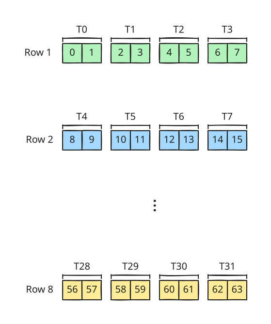
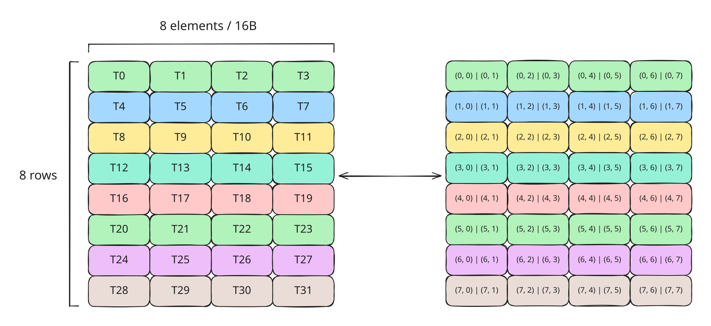
每一行会有多个片段：
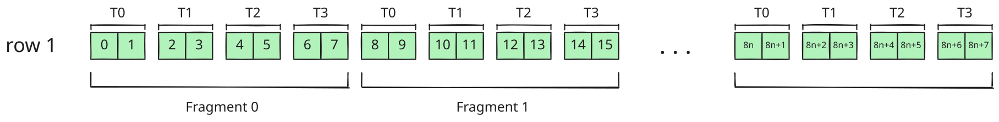
不同操作数的寄存器存储
A 与 B 操作数
对片段 A 和 B，每个线程在单个 32 位寄存器中存放 2 个元素。由于我们不需要直接修改它们，就把它
作为单个 uint32_t 存放。
我们建一个二维数组1来存这些值，使得 ，其中 与 表示片段的索引：
- ，且
uint32_t input[rows/8][cols/8]; // each register represents (8x8) values
对一个 张量：input[2][16] 共存 32 个片段。
数组存储
这里为清晰起见我使用二维数组，但生产代码应使用一维数组并配合编译期常量计算步长。
C 与 D 操作数
对 C 和 D，每个片段需要 2 个 float。我们建这样的二维数组，让每个片段的这 2 个值彼此相邻：
float accum[m/8][n/4]; // each pair of registers represents (8x8) values
对一个 的结果：accum[2][16] 需要 32 对寄存器 = 64 个寄存器。
下面是 mma 运算 的逻辑视图：
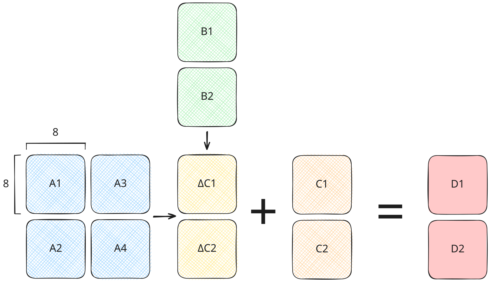
由于我们以行主序存储 B，上图里的 B1 与 B2 片段实际上是沿一行取的，而不是沿一列。就像这样：
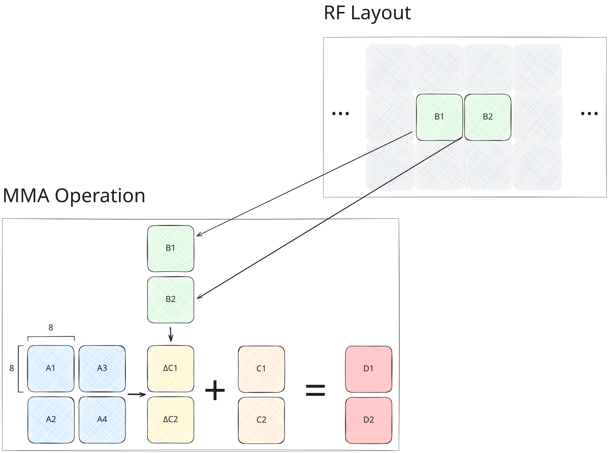
mma 的代码实现
这是该指令的 PTX 封装。我们不含 D 参数，因为我们将始终累加到 C 中：
template <typename value_t>
__device__ void
mma_m16n8k16_f32_accum(
float &d1, float &d2, float &d3, float &d4,
uint32_t const &a1, uint32_t const &a2,
uint32_t const &a3, uint32_t const &a4,
uint32_t const &b1, uint32_t const &b2,
float const &c1, float const &c2,
float const &c3, float const &c4
) {
static_assert(std::is_same_v<value_t, half> ||
std::is_same_v<value_t, nv_bfloat16>,
"value_t must be either half or nv_bfloat16");
if constexpr (std::is_same_v<value_t, nv_bfloat16>) {
asm volatile("mma.sync.aligned.m16n8k16.row.col.f32.bf16.bf16.f32 "
" { %0, %1, %2, %3 }, "
" { %4, %5, %6, %7 }, "
" { %8, %9 }, "
" { %10, %11, %12, %13 }; "
: "=f"(d1), "=f"(d2), "=f"(d3), "=f"(d4)
: "r"(a1), "r"(a2), "r"(a3), "r"(a4), "r"(b1), "r"(b2),
"f"(c1), "f"(c2), "f"(c3), "f"(c4));
} else {
// FP16 variant
asm volatile("mma.sync.aligned.m16n8k16.row.col.f32.f16.f16.f32 "
" { %0, %1, %2, %3 }, "
" { %4, %5, %6, %7 }, "
" { %8, %9 }, "
" { %10, %11, %12, %13 }; "
: "=f"(d1), "=f"(d2), "=f"(d3), "=f"(d4)
: "r"(a1), "r"(a2), "r"(a3), "r"(a4), "r"(b1), "r"(b2),
"f"(c1), "f"(c2), "f"(c3), "f"(c4));
}
}
矩阵运算小结： 我们已经掌握了如何用 mma 指令驱动张量核心做高吞吐矩阵乘法。关键认识是，Flash Attention 的 两次矩阵运算（ 与 ）都自然地映射到 mma 的操作数上，其中 需要做转置处理才能算对。
矩阵乘法处理完了，接下来解决那个棘手的问题：如何高效地把这些数据搬运来搬运去。
内存传输操作
既然已经理解张量核心如何做矩阵乘法，我们就来看看如何高效地在各级内存之间搬运数据，让它们 始终有数据可算。
在深入具体传输操作之前，先回顾一下我们要打交道的 GPU 内存层次结构：
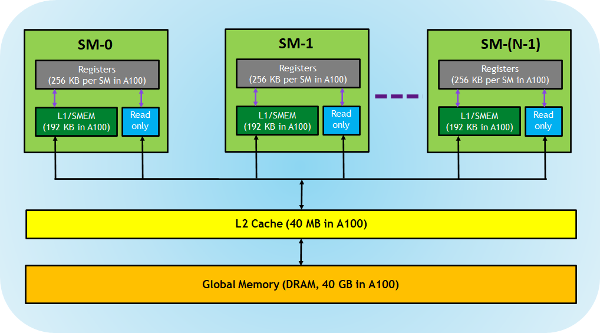
数据流动模式很直白：输入张量（）沿 GMEM → SMEM → RF 流入参与计算，输出张量（）则沿 RF → SMEM → GMEM 流回。这条流水线中的每一步都使用不同的指令来最大化吞吐。
GMEM → SMEM：cp.async
Ampere 架构为从 GMEM → SMEM 的异步载入增加了加速支持。在 PTX 中，这些拷贝包含以下指令：
cp.async：发起拷贝。- 拷贝大小可以是 4、8 或 16 字节，与普通载入一样
- 当拷贝大小为 16 字节时，我们可以配置该传输完全绕过 L1 缓存，从而减少缓存污染，并给出一条从 L2 到共享内存的更直接路径
- 我们将使用 16 字节拷贝
cp.async.commit：把所有尚未提交的cp.async合并成一个组，可以作为单一实体等待cp.async.wait_group n/cp.async.wait_all：等待到最新的 n 个组之前的所有提交都已完成- 例如在途有 3 个组时，
cp.async.wait_group 1会等到只剩 1 个组在途（即已完成 2 个）。 cp.async.wait()只等当前线程完成载入。如果线程之间通过共享内存通信，我们仍需要合适作用域的屏障来正确同步（__syncwarp()/__syncthreads()/cooperative_group.sync()）。
想更深入地对比传统载入方式，可以看 cp.async 与传统载入。
代码
这是我们对 PTX 函数的封装：
__device__ void cp_async_commit() { asm volatile("cp.async.commit_group;"); }
template <int ngroups>
__device__ void cp_async_wait() {
asm volatile("cp.async.wait_group %0;" ::"n"(ngroups));
}
template <int size, typename T>
__device__ void cp_async(T *smem_to, T *gmem_from) {
static_assert(size == 16);
uint32_t smem_ptr = __cvta_generic_to_shared(smem_to);
// The .cg (cache-global) option bypasses the L1 cache, reducing cache
// pollution and providing a more direct path from L2 to shared memory.
asm volatile("cp.async.cg.shared.global [%0], [%1], %2;"
:
: "r"(smem_ptr), "l"(gmem_from), "n"(size));
}
调用 __cvta_generic_to_shared() 会把通用的 64 位内存地址转换成 32 位的 SMEM 专用地址，后者
性能更好。
LD/ST 操作
张量：
传输：用 cp.async 完成 GMEM → SMEM（每线程 16B，全 warp 共 字节）
SMEM → GMEM：向量化存储
遗憾的是，Ampere 不支持与 cp.async 对等的 SMEM → GMEM 传输指令 st.async，所以我们退而求
其次：16 字节向量化存储。我们要做的只是确保指针指向 16 字节数据类型，且指针按 16 字节对齐
（addr % 16 == 0）。
reinterpret_cast<uint4*>(GMEM[dst])[0] = reinterpret_cast<uint4*>(SMEM[src])[0];
向量化操作还有一些额外细节，等我们后面要进一步优化内存访问时再回来讨论。
LD/ST 操作
张量： 传输：用标准存储完成 SMEM → GMEM（每线程 16B，全 warp 共 ）
GMEM ↔ SMEM 的全 warp 传输
考虑全 warp 传输时，我们要确保内存合并（coalescing）以达到最优性能。由于 GPU 缓存行是 128B， 而每个线程传 16 字节，把 8 个线程分配给一行就能访问整条缓存行。因此每个 warp 有 32 个线程时， 一条全 warp 指令可以传输 的存储块。
下图是一个 warp 在单次迭代中覆盖的范围：
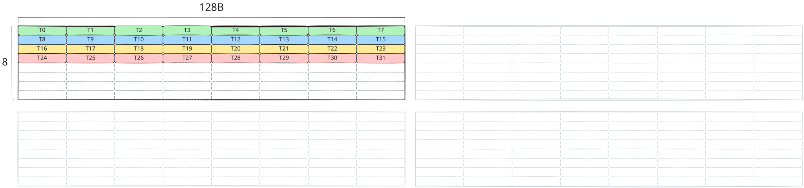
在一个 warp 内，线程到坐标偏移的映射是
row = (tid % 32) / 8;
col = tid % 8;
从 SMEM → RF 拷贝
要把片段从 SMEM 搬到 RF，我们可以让每个线程读取自己负责存储的那些元素。这样虽然可行，但每个
片段都要用多条指令。所幸有更高效的办法：
ldmatrix
指令一次最多可以载入 4 个片段。它比用 RF[dst] = SMEM[src] 手工载入片段更快，但布局不同。
如果还要顺便转置元素，这个优势就更明显。
ldmatrix
ldmatrix 可以在一条指令中载入 1、2 或 4 个 矩阵片段。每个片段由一组 8 个线程负责：线程 0–7 处理第一个片段，8–15 处理第二个，依此类推。小结如下：
表 4 |
| 片段 | 线程 |
|---|---|
| 1 | 0-7 |
| 2 | 8-15 |
| 3 | 16-23 |
| 4 | 24-31 |
在每组 8 个线程内部，线程传入指向自己在 SMEM 中那一行的指针，随后这些值会被广播给整个 warp。
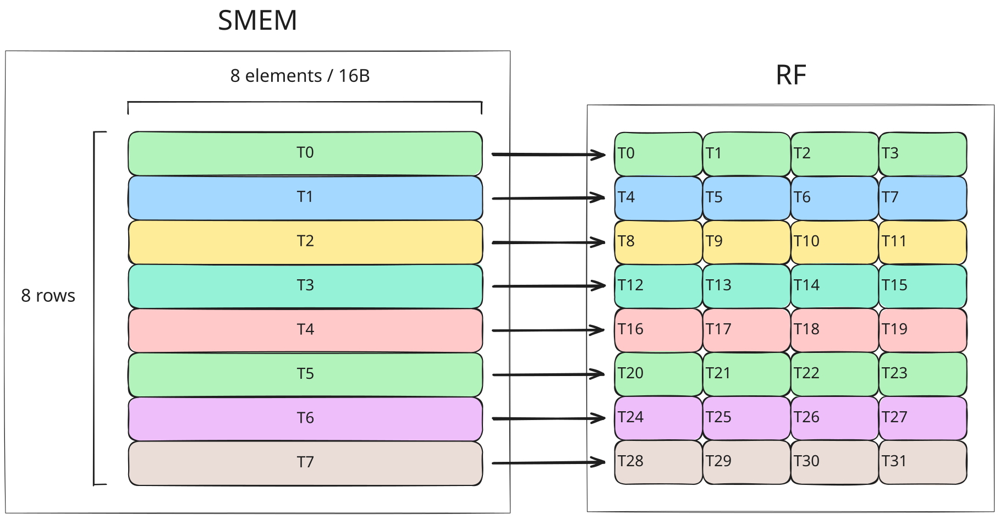
载入哪些片段？
ldmatrix.x4 让我们能载入任意四个 片段。这意味着我们可以载入连续的 或 块，甚至是一组不连续的随机片段。这会影响生成的汇编。我们会在 Kernel 9 中更详细地回到这一点，现在先让每条指令传输 的连续元素 = 个片段。在多数情况下这是标准且最优的布局。
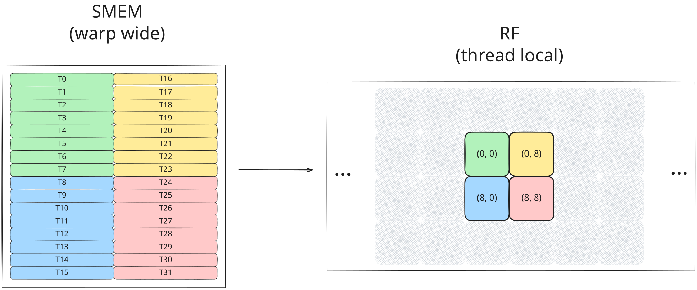
ldmatrix 的寻址模式不同于 mma 的片段布局，因为它是针对高效的共享内存访问模式优化的。对 ldmatrix 操作，warp 内线程通过下式映射到 SMEM 地址偏移：
// ldmatrix addressing (for loading from SMEM → RF)
row = tid % 16;
col = ((tid % 32) / 16) * 8;
这与我们前面看到的 mma 片段存储映射不同：
// mma fragment storage (for elements within a single fragment)
row = (tid % 32) / 4;
col = (tid % 4) * 2;
也与 GMEM ↔ SMEM 的全 warp 传输不同：
row = (tid % 32) / 8;
col = tid % 8;
这是我们对 PTX 函数的封装。我们同样把线程片段值以 uint32_t 传入：
template <typename T>
__device__ void ldmatrix_x4(
T *load_from,
uint32_t &a1,
uint32_t &a2,
uint32_t &a3,
uint32_t &a4
) {
uint32_t smem_ptr = __cvta_generic_to_shared(load_from);
asm volatile("ldmatrix.sync.aligned.x4.m8n8.shared.b16"
"{%0, %1, %2, %3}, [%4];"
: "=r"(a1), "=r"(a2), "=r"(a3), "=r"(a4)
: "r"(smem_ptr));
}
LD/ST 操作
张量：
传输：用 ldmatrix.x4 完成 SMEM → RF，每条指令 个元素 = 个片段
ldmatrix 转置
ldmatrix 指令有一个转置变体，它与 ldmatrix 相同，只是每个片段会被转置。转置只发生在每个片段 内部，不跨片段。这意味着每个线程将持有对应转置后的值：
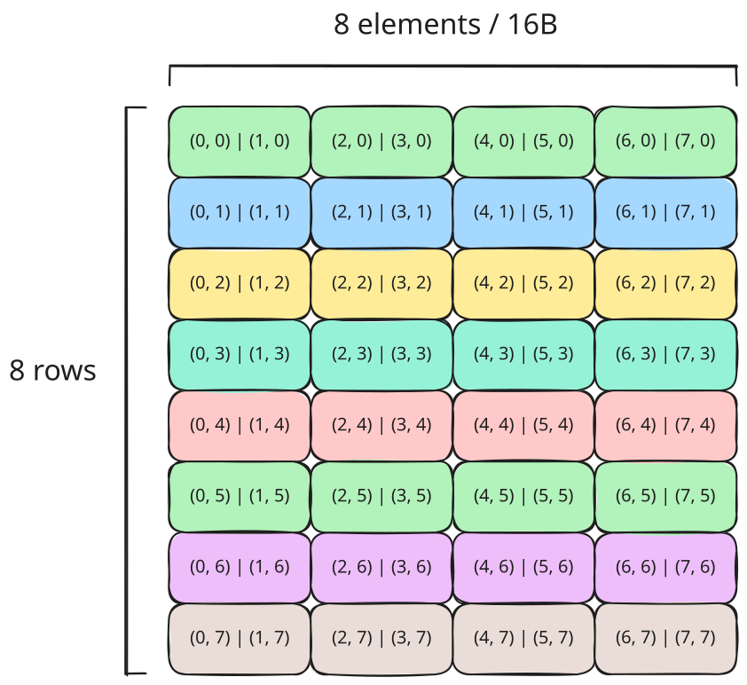
我们用转置版的 ldmatrix 指令载入 的片段，用于计算 。
转置版的封装几乎一模一样：
template <typename T>
__device__ void ldmatrix_x4_transpose(
T *load_from,
uint32_t &a1,
uint32_t &a2,
uint32_t &a3,
uint32_t &a4
) {
uint32_t smem_ptr = __cvta_generic_to_shared(load_from);
asm volatile("ldmatrix.sync.aligned.x4.trans.m8n8.shared.b16"
"{%0, %1, %2, %3}, [%4];"
: "=r"(a1), "=r"(a2), "=r"(a3), "=r"(a4)
: "r"(smem_ptr));
}
为满足 的转置需求，我们做两处改动：
- 调用 ldmatrix 的转置变体，在每个 片段内部转置
- 交换
a2与a3参数，在 块内部跨片段转置
两者合起来就把整个 块转置了，从而给出 乘法所需的列主序布局。记住这一点是必要的，因为 mma 计算的是 ，而我们要算的是 （不带转置）。把 在寄存器中存成等效的 ，mma 指令给出的就正是我们要的。
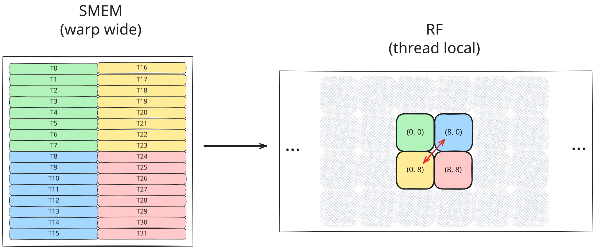
LD/ST 操作
张量：
传输：用 ldmatrix.x4.trans 完成 SMEM → RF，每条指令 个元素 = 个片段
从 RF → SMEM 拷贝
有一条与 ldmatrix 类似的指令叫 stmatrix，负责把片段从 RF 拷到 SMEM。遗憾的是它只在 Hopper 及
更新的架构上可用，所以我们只能用普通的 4B SMEM[i] = RF[i]; 存储。
线程到地址的映射遵循 mma 布局格式：
- 在一个片段内部，有 8 行，每行 4 个线程。
- 每个线程存 2 个值 / 4B
- 因此每条指令可以存一个片段
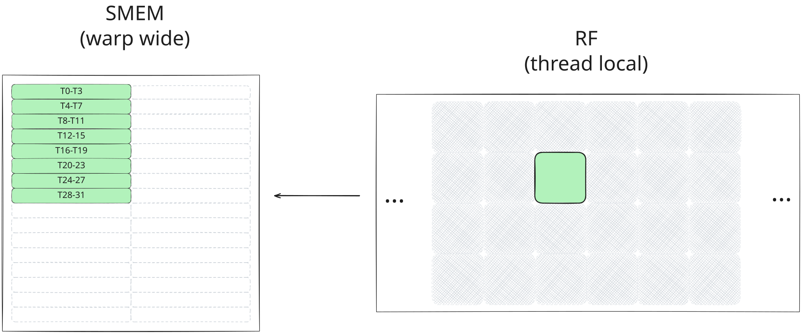
LD/ST 操作
张量： 传输：用标准存储完成 RF → SMEM（每条指令 个元素 = 个片段）
内存操作小结：
现在我们有了在内存层次中搬运数据的高效通路：cp.async 负责异步的 GMEM → SMEM 传输，
ldmatrix 负责优化的 SMEM → RF 载入（并为 提供转置支持），返回路径 RF → SMEM 与 SMEM → GMEM 则分别使用标准的 4B 与 16B 存储。
数据类型之间的转换
核心矩阵运算与内存传输都讲完了，但拼图还差最后一块：数据类型转换。
我们的 mma 指令输出 FP32 值，但有两处关键位置需要把它们转成 16 位精度：
softmax 输出转换：算完注意力分数并施加 softmax（在 FP32 中做以保证数值稳定性）之后，我们需要 把注意力矩阵 转回 16 位，供随后的 乘法使用。这个转换每轮迭代发生一次。
最终输出转换：累加得到的输出向量在计算期间保持 FP32，但在写回全局内存前必须转成 16 位。
高效的成对转换
CUDA 提供了 __float2bfloat16_rn() 与 __float2half_rn() 这类单值转换函数，但我们有更好的
做法。由于我们的片段总是包含偶数个值，可以一次转换两个值：
- BF16：
__float22bfloat162_rn()把float2转成bfloat162 - FP16：
__float22half2_rn()把float2转成half2
这种成对做法更高效，因为底层的 SASS 指令只支持成对转换。即便是单值转换，编译后也会变成成对 版本，另一个槽位填零。
小结
我们已经讲完了 Flash Attention kernel 所需的全部基本构建模块。总结如下：
整条流水线都围绕片段展开，它们是 的块，让线程之间能够高效协作。每个线程在每个片段中只存 2 个元素，但 mma 指令会调动整个 warp，以张量核心的速度完成矩阵乘法。
内存操作则像一支编排好的舞：cp.async 把数据从全局内存异步地流入共享内存，ldmatrix 高效地
把片段装入寄存器，向量化存储再把结果推出去。每一步都针对 Ampere 的特性做了优化。全 warp 的
线程到 (行, 列) 映射公式为
表 5 | 全 warp 操作的线程到坐标映射（Kernel 1–8）
| 操作 | 行 | 列 |
|---|---|---|
| mma 片段 / RF → SMEM | (tid % 32) / 4 | (tid % 4) * 2 |
| SMEM → RF（ldmatrix） | tid % 16 | ((tid % 32) / 16) * 8 |
| GMEM ↔ SMEM | (tid % 32) / 8 | tid % 8 |
mma 指令执行的操作是 D = AB^T + C。下表给出我们要用的那个变体（m16n8k16）各操作数的数据类型 与形状。
表 6 | mma m16n8k16 指令的操作数形状
| 操作数 | 数据类型 | 形状（变量） | 形状（元素） | 形状（片段） | 形状（寄存器） |
|---|---|---|---|---|---|
| A | BF16/FP16 | (m, k) | (16, 16) | (2, 2) | (2, 2) |
| B | BF16/FP16 | (n, k) | (8, 16) | (1, 2) | (1, 2) |
| C+D | FP32 | (m, n) | (16, 8) | (2, 1) | (2, 2) |
我们执行的载入与存储操作：
表 7 | 跨内存层次的载入/存储操作规格
| 从 | 到 | 数据块 | PTX 指令 / C++ | 全 warp 操作大小 | 线程操作大小 | 线程 ID 映射顺序 | 寄存器形状 | 备注 |
|---|---|---|---|---|---|---|---|---|
| GMEM | SMEM | cp.async | 行主序 | |||||
| SMEM | RF | ldmatrix.x4 | 列主序 | 转置 | ||||
| RF | SMEM | 标准（4B） | 行主序 | |||||
| SMEM | GMEM | 标准（16B） | 行主序 |
下一篇
高性能 CUDA 操作的整套工具箱已经齐全，接下来就可以把这些零件组装成一个能跑的 Flash Attention kernel 了。在下一部分中，我们要面对把这些构建模块组合成一个 完整实现的挑战。到那时，我们将得到一个达到参考实现约 49% 性能的可用 Flash Attention kernel。
脚注
-
到 Kernel 8 时，我们会把它改成一维数组并用静态步长访问。 ↩
引言
在第 2 部分中，我们探讨了基础的 CUDA 构建模块——张量核心操作
（mma）与高效内存传输（cp.async 与 ldmatrix）。现在可以准备把这些零件组装成第一个完整的
Flash Attention kernel 了。这个基础实现将成为我们的立足点，给出一个可运行的 kernel，随后在
本系列中反复迭代优化它。
我们分三大步推进：先弄清如何在不同层级（CTA、warp 与线程）之间划分工作；再用基础指令搭出 更高层的操作；最后把所有东西组装成完整 kernel。
我们的目标规格：
- 只做前向传播
- 非因果（non-causal）注意力
- 头维度 = 128
- 不使用 dropout 或 KV 缓存
- query/key/value 序列长度相等
- 序列长度能被块大小整除（按论文定义，在本实现中通常取 64–128）
- 输入输出张量为 16 位（bf16/fp16），softmax 计算在 fp32 中进行
到本部分结束时，我们的 kernel 在 RTX 3090 上将达到 官方实现 49% 的性能。
Kernel 架构总览
在深入实现细节之前，先确立 kernel 的整体结构。Flash Attention kernel 遵循一个标准的三阶段 模式，本系列将一直沿用：
Kernel 各阶段
- 序篇（Prologue）：搭建与初始化 - 计算每个张量与每个 warp 的内存地址 - 把 从 GMEM → SMEM → RF 载入（只发生一次） - 初始化 softmax 统计量（ 与 ）以及输出累加器
- 主循环（Mainloop）：迭代的注意力计算（对每个 / 块重复一次次） - 载入 ：GMEM → SMEM → RF - 计算注意力分数： - 施加在线 softmax 并更新统计量 - 载入 ：GMEM → SMEM → RF - 计算输出贡献：
- 收尾（Epilogue）：最终化与输出 - 完成 softmax 归一化 - 把 从 fp32 转成 fp16/bf16 - 写出最终结果：RF → SMEM → GMEM
实现上的挑战
kernel 结构确立之后，我们需要解决三个主要技术挑战：
- 数据搬运：让张量高效地穿过内存层次（GMEM → SMEM → RF），同时处理不同的布局、访问模式与同步要求
- 数学运算：用我们的 mma 指令与 warp 原语实现 GEMM 运算和在线 softmax
- 同步：在诸线程与诸 warp 之间协调，避免竞态条件
我们的大部分复杂度来自数据搬运。每个张量的要求都不同： 与 由各 warp 独立处理，而 与 需要跨 warp 协作。有些张量在整个内存层次中都保持行主序，有些则需要转置。一旦把数据放到该在的位置，真正的数学运算反而相对直白。
我们逐个攻克，从那些将塑造整个实现的基础决策开始。
Kernel 配置
既然整体结构清楚了，我们就来定下定义 kernel 行为的具体参数。
从现在到 Kernel 7，我们取块大小 与 。这两个维度配合得很好，因为它们都是 m16n8k16 指令的整齐倍数，而且足够小，块应该能严丝合缝地放进 SMEM 与 RF。
每个 CTA 我们还使用 128 个线程（4 个 warp），遵循 CUDA 的 推荐起点。
在 Kernel 7（第 5 部分）中，我们会用不同配置测试并对比 kernel 性能，找出最快的那个。
CTA 的工作划分
我们需要考虑如何在三个层级上划分工作：CTA、warp 与线程。先从最高层开始：网格中的 CTA 之间 如何划分工作。
我们的 Flash Attention kernel 需要处理形状为 (batch_size, seq_len, n_heads, d_head) 的张量， 把它们切成能装进 SM 内存的更小块。按我们的配置，张量划分如下：
- 与 ：切成 的块
- 与 ：切成 的块，记作 与
每个 CTA 负责处理某个 (sample, head) 组合下特定的 与 块。这涉及载入该组合下全部 个 与 块并与之计算，其中 。
这样总共有 n_samples * n_heads * T_r 个 query 块要处理，其中 T_r = seq_len / B_r。我们就启动 正好这么多 CTA 来承担全部工作。
Kernel 参数
这是 kernel 会收到的参数：
struct ForwardKernelArgs {
using index_t = int64_t;
void *__restrict__ Q;
void *__restrict__ K;
void *__restrict__ V;
void *__restrict__ O;
const index_t batch_stride;
const index_t seq_stride;
const index_t head_stride;
const index_t seq_len;
const index_t n_heads;
const int n_Q_blocks;
const int n_KV_blocks;
};
网格映射
每个 CTA 处理某个 (sample, head) 组合的一个 query 块，所以我们把 kernel 网格设成形状 (sample, query_block, head) 的某种排列。CTA 该如何映射到 query 块？
考虑某个 head 下的单个 sample。该 sample 的各 CTA 可能会读 的不同块、写 的不同块，但它们都会载入相同的 与 块。
关键认识是：我们希望处理同一 sample、同一 head 的 CTA 大致同时运行，这样它们能共享缓存中的 K/V 数据。当第一个 CTA 载入一个 块时，它会被缓存在 L2 中。如果同一 sample/head 的其他 CTA 随后不久启动，它们就会命中缓存，而不必访问 DRAM。
CTA 按 ID 顺序启动：blockIdx.x + blockIdx.y * gridDim.x + gridDim.x * gridDim.y * blockIdx.z
由于 y、z 相同而 x 不同的 CTA 拥有连续 ID，它们会一起启动。所以我们把 query 块映射到 x 维： (x, y, z) -> (Q_block, head, batch)。
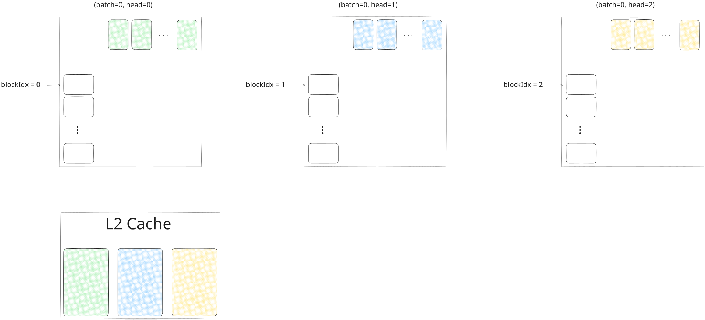
如果我们的映射是 (x, y, z) -> (head, Q_block, batch)，L2 缓存的效率会差得多，命中率会显著下降。
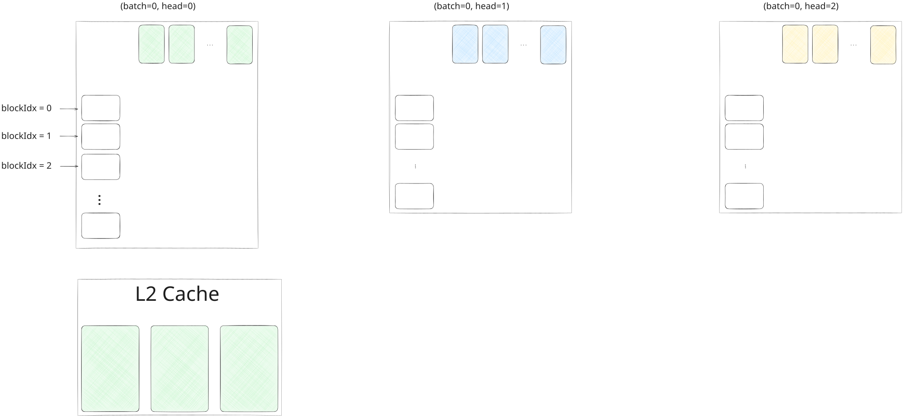
于是我们这样设置变量：
// ...
const int sample = blockIdx.z;
const int head = blockIdx.y;
const int q_seq_block = blockIdx.x;
// ...
网格映射对性能的影响有多大？每个 与 块都会被多个 CTA 读取，而每个 16KiB 的大小意味着 L2 能容纳多个块。按 Luo 等人的测量，在 A100 上 L2 命中的延迟为 200–400 周期， 而 DRAM 约为 550 周期。对 Flash Attention 来说，这种缓存复用为我们这种计算密集型负载带来了 不大但可测量的性能收益。
网格映射对我们 Flash Attention 负载的缓存表现影响如下：
表 8 |
| GPU | L2 容量 | 未优化的命中率 | 优化后的命中率 | 性能影响 |
|---|---|---|---|---|
| RTX 3090 | 6MB | 约 2% | 约 98% | TFLOPs 约高 3% |
| A100 | 40MB | 约 25.6% | 约 92.6% | TFLOPs 约高 1% |
影响不算大，但把映射设对几乎是零成本的，所以值得实现。
配置模板参数
尽管 kernel 配置是固定的，我们还是希望之后测试不同配置时（Kernel 7 会做）能方便地泛化它。 我们加一个结构体模板参数来支持不同的块大小、每 CTA 线程数与不同数据类型。这是 kernel 函数的 模板参数：
struct FlashForwardKernelConfig {
// This gets statically converted into either half or nv_bfloat16
const torch::ScalarType dtype;
const int d_head; // [64, 128]
const int B_r; // [64, 128]
const int B_c; // [32, 64, 128]
const int n_warps; // [4, 8]. 8 only when B_r = 128
};
Warp 层级的工作划分
CTA 之间的工作划分讲完了，现在我们放大到 warp 层级。从这里起，我们关注的是 warp 到 CTA、 线程到 warp 的交互，所以为简洁起见，把 与 的上标 去掉。
回忆第 2 部分：张量运算必须在 warp 内所有线程之间以锁步方式执行。我们的 mma 指令针对 16×16 的块，所以我们就以它为 warp 间划分工作的基础。
算一下：我们有 64 行的块、每 CTA 4 个 warp，所以每个 warp 分到 64÷4 = 16 行。再结合 128 列的 头维度，每个 warp 处理 (16, 128) 的子块。
我们对 、 的载入方式与 、 不同。
为什么 / 与 / 要用不同策略？虽然每个 warp 负责 与 张量中一段独有的切片，但它必须访问 与 的整块，才能为自己那段切片算出注意力分数。这意味着 与 基本上可以由各 warp 独立处理，而 与 需要 CTA 内所有 warp 协作。
与 的处理（各 warp 独立）
- 64 行的块被切成 4 段独立的 切片
- 每个 warp 完全独立地对自己那段切片进行：
- 载入／存储操作
- GEMM 计算
与 的处理（跨 warp 协作）
- 载入阶段：每个 warp 从 GMEM → SMEM 载入自己那段 (16, 128) 切片
- 同步：所有 warp 等待整块 (64, 128) 载入完成
- 拷贝阶段：每个 warp 独立地把整块从 SMEM → RF 拷贝过来
每个 warp 的工作量小结
CTA 中 4 个 warp 各自处理：
独立操作（逐 warp）：
- 载入 的 切片：GMEM → SMEM → RF
- 在 RF 中计算形状为 的
- 在 RF 中计算
- 在 RF 中计算
- 存储 的 切片：在 RF 中累加，然后 RF → SMEM → GMEM
协作操作（跨所有 warp）：
- 载入 与 的 块：协作完成 GMEM → SMEM，再各自独立完成 SMEM → RF
下图展示每个 warp 如何处理自己那段工作：
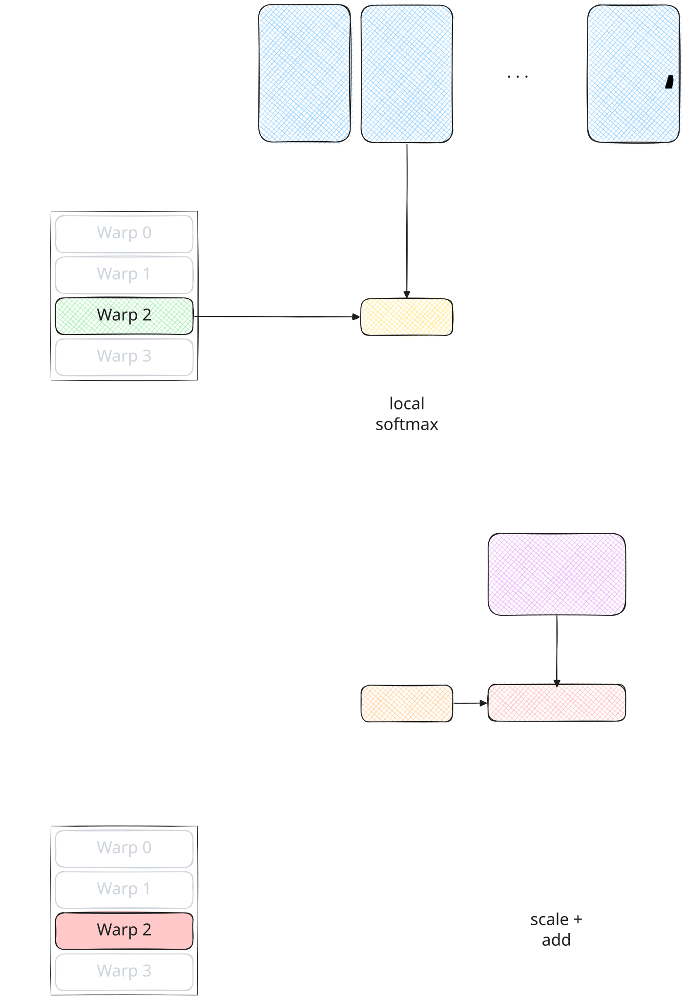
所有带底色背景的块都存放在 RF 中。
未来的优化
实际上，在载入 与 块时让各 warp 协作会略为更高效。我们会在第 7 部分（Kernel 9）讲到这一点。
数据搬运
工作划分策略清楚了，接下来进入实现。这里开始变得有意思——也变得复杂。在写这个 kernel 的过程中， 高效地搬运数据是最棘手的部分之一。我们同时要面对不同的布局、访问模式与同步需求。
每个张量的要求都不同： 与 由各 warp 独立处理，而 与 需要跨 warp 协作。有些张量在整个内存层次中都保持行主序，有些则需要转置。要兼顾的东西很多。
我们的策略是分层构建这份复杂度，从底层内存操作一路搭到一层能把这些杂乱全部隐藏起来的干净 抽象：
- 核心内存操作：用于 GMEM ⟷ SMEM 传输的通用函数，以及处理转置的专用 SMEM → RF 函数
- 地址管理：为每个张量与 warp 算出正确的指针
- 统一接口：一个 MatrixLDST 类，把所有东西包成简洁、面向具体张量的 API
我们一步步来搭。
配置结构体
为了高效地在内存层次中搬运数据（GMEM → SMEM → RF），我们需要能处理不同张量要求的操作。下面 这些配置结构体编码了所有的 LD/ST 要求：
struct TileLayout {
const int row_fragments;
const int col_fragments;
};
// constexpr non-type template parameter containing parameters for LD/ST for a
// block (Q, K, V, or O) from GMEM to SMEM and vice versa, and also loading from
// SMEM to the RF.
struct TensorLDSTConfig {
// Tile layout for shared memory and RF.
const TileLayout GSM;
const TileLayout RF;
// Block specific properties
const bool transposed;
const int block_size;
const int smem_cols;
// # of rows a warp in a thread-block independently loads/stores. it is equivalent to GSM.row_fragments * 8.
const int warp_ldst_rows;
// Whether not the warp will compute over the entire block.
// This is false for (Q&O&S) and true for (K&V).
const bool compute_over_entire_block;
}
存储布局
我们对每个内存层级、每个张量使用不同的存储布局：
- SMEM：所有张量都以行主序存储，以便高效地从 GMEM 载入
- RF：多数张量保持行主序，但 以转置形式存储
下面这张表帮你记住要传输什么、以及在每个内存层级上的形状：
表 9 | 块配置（B_r = 64, B_c = 64, d_head = 128, n_warps = 4）下各张量跨内存层次的传输形状
| 元素大小（字节） | GMEM+SMEM 主序性 | GMEM ↔ SMEM 形状 | RF 主序性 | SMEM 形状（SMEM → RF） | RF 形状（寄存器） | |
|---|---|---|---|---|---|---|
| 2 | 行主序 | 行主序 | ||||
| 2 | 行主序 | 行主序 | ||||
| 2 | 行主序 | 列主序 | ||||
| 4 | 不适用 | 不适用 | 行主序 | 不适用 | ||
| 2 | 不适用 | 不适用 | 行主序 | 不适用 | ||
| 4 | 不适用 | 不适用 | 行主序 | 不适用 | ||
| 2 | 行主序 | 行主序 |
这是我们要用来传输它们的 LD/ST 操作。
表 10 | 跨内存层次的载入/存储操作规格
| 从 | 到 | 数据块 | PTX 指令 / C++ | 全 warp 操作大小 | 线程操作大小 | 线程 ID 映射顺序 | 寄存器形状 | 备注 |
|---|---|---|---|---|---|---|---|---|
| GMEM | SMEM | cp.async | 行主序 | |||||
| SMEM | RF | ldmatrix.x4 | 列主序 | 转置 | ||||
| RF | SMEM | 标准（4B） | 行主序 | |||||
| SMEM | GMEM | 标准（16B） | 行主序 |
GMEM ↔ SMEM 之间的拷贝
现在实现真正的数据搬运。回忆一下，每次全 warp 操作访问一个 (4, 64) 的小块，而我们的块大小是
(16, 128)，所以每个块需要 (4, 2) 条 cp.async() 指令才能完整拷贝。
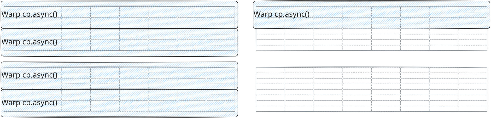
这是 GMEM 与 SMEM 之间拷贝的代码。几个关键设计选择：
- 双向：通过传入不同的操作函子（functor），同一套代码既能做 GMEM→SMEM 也能做 SMEM→GMEM
- 线程协调：每个线程按行主序计算自己的偏移，以避免冲突
- 基于模板：用 TensorLDSTConfig 模板参数来适配不同的张量布局
操作函子定义了实际的拷贝行为。下面的实现通过基于模板的操作函子同时处理 GMEM→SMEM 与 SMEM→GMEM 传输：
#define ROWS_PER_FRAGMENT 8
#define COLS_PER_FRAGMENT 8
#define GSM_LDST_ROWS_PER_ITER 4
#define BYTES_PER_VEC4_ACCESS 16
template <typename T>
struct GM2SM_async {
__device__ constexpr void operator()(T *gmem, T *smem) {
cp_async<BYTES_PER_VEC4_ACCESS>(smem, gmem);
}
};
template <typename T>
struct SM2GM {
__device__ constexpr void operator()(T *gmem, T *smem) {
reinterpret_cast<uint4 *>(gmem)[0] = reinterpret_cast<uint4 *>(smem)[0];
}
};
template <typename op, /* either GM2SM_async or SM2GM */
TensorLDSTConfig CFG,
typename value_t,
typename index_t = int64_t>
__forceinline__ __device__ constexpr void copy_block_GSM(
value_t *gmem,
value_t *smem,
index_t gmem_seq_stride,
const int lane_id
) {
constexpr int n_row_iters =
CFG.GSM.row_fragments * ROWS_PER_FRAGMENT / GSM_LDST_ROWS_PER_ITER;
constexpr int col_fragments_per_iter = WARP_SIZE / GSM_LDST_ROWS_PER_ITER;
constexpr int col_fragments_per_row = CFG.smem_cols / COLS_PER_FRAGMENT;
const int thread_row = lane_id / col_fragments_per_iter;
const int thread_col_fragment = lane_id % col_fragments_per_iter;
#pragma unroll
for (int r = 0; r < n_row_iters; ++r) {
const int cur_row = r * GSM_LDST_ROWS_PER_ITER + thread_row;
#pragma unroll
for (int c = 0; c < col_fragments_per_row;
c += col_fragments_per_iter) {
const int col_fragment = c + thread_col_fragment;
op()(&gmem[cur_row * gmem_seq_stride +
col_fragment * COLS_PER_FRAGMENT],
&smem[cur_row * CFG.smem_cols +
col_fragment * COLS_PER_FRAGMENT]);
}
}
}
关于 reinterpret_cast 的说明
你会注意到 reinterpret_cast 用得很频繁。在高性能 CUDA 中，这是个常见且安全的模式，用于
向量化内存访问。把指针重新解释为 uint4 这类更大的类型，就能在一条指令里载入或存储 16 字节，
前提是内存正确对齐——在我们的场景中它是正确对齐的。
cp.async 的额外要求
使用 cp.async() 时，我们需要用 cp.commit() 提交、用 cp.wait() 等待。同步细节我们会在
同步一节中讲。
SMEM → RF 操作
你可能还记得片段如何跨线程布局中说过，我们在 RF 中存储和载入 、 的方式与 不同。关键差别在于：虽然所有张量在 SMEM 中都以行主序存储，但 在 RF 中是以列主序存储的。
这种布局差异要求在 SMEM → RF 拷贝时进行转置：SMEM 的 (行, 列) 被转置成 RF 的 (列, 行)。
转置同时影响片段排布与线程级的元素存储，这就是为什么对 我们调用的是 ldmatrix_transpose() 而不是 ldmatrix()。为处理这些差异，我们写两个独立的辅助函数。
的一次迭代看起来是这样
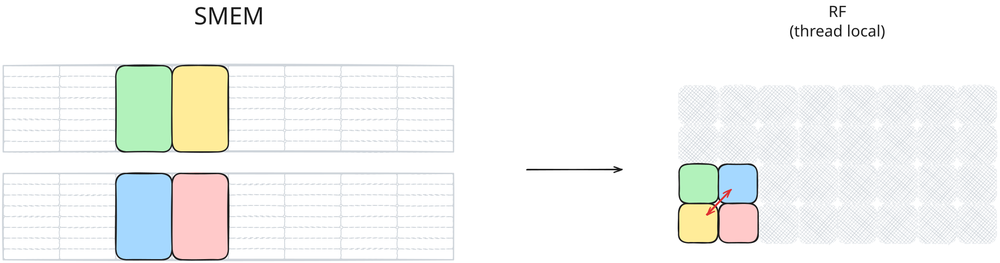
而 或 的对应迭代看起来是这样
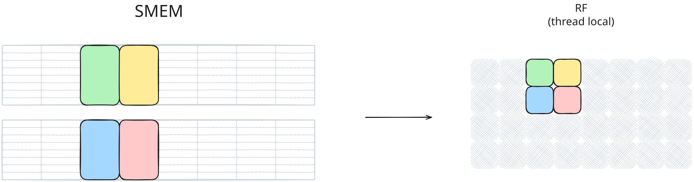
与
#define ROWS_PER_FRAGMENT 8
#define COLS_PER_FRAGMENT 8
#define ELEMS_PER_VEC4_ACCESS 8
template <TensorLDSTConfig CFG, typename value_t>
__forceinline__ __device__ constexpr void copy_warp_fragment_SM2RF(
uint32_t (®s)[CFG.RF.row_fragments][CFG.RF.col_fragments],
value_t *smem,
const int lane_id,
const int col_fragment_offset = 0
) {
constexpr int row_fragments_per_iter = 2;
constexpr int rows_per_iter = ROWS_PER_FRAGMENT * row_fragments_per_iter;
constexpr int col_fragments = CFG.smem_cols / ELEMS_PER_VEC4_ACCESS;
constexpr int col_fragments_per_iter = WARP_SIZE / rows_per_iter;
const int thread_row = lane_id % rows_per_iter;
const int thread_col_fragment = lane_id / rows_per_iter;
#pragma unroll
for (int r = 0; r < CFG.RF.row_fragments; r += row_fragments_per_iter) {
const int cur_row = thread_row + r * ROWS_PER_FRAGMENT;
#pragma unroll
for (int c = 0; c < CFG.RF.col_fragments; c += col_fragments_per_iter) {
const int smem_col_fragment = thread_col_fragment + c + col_fragment_offset;
ldmatrix_x4(&smem[cur_row * CFG.smem_cols +
smem_col_fragment * ELEMS_PER_VEC4_ACCESS],
regs[r][c], regs[r + 1][c], regs[r][c + 1],
regs[r + 1][c + 1]);
}
}
}
- 我们按行 → 列的顺序遍历 SMEM，RF 则相反
- 我们不通过交换 SMEM 指针来转置片段，而是交换 RF 的下标
- 这让 kernel 能与其他块共用同一套 SMEM 偏移计算
template <TensorLDSTConfig CFG, typename value_t>
__forceinline__ __device__ constexpr void copy_warp_fragment_transposed_SM2RF(
uint32_t (®s)[CFG.RF.row_fragments][CFG.RF.col_fragments],
value_t *smem,
const int lane_id,
const int row_fragment_offset = 0
) {
constexpr int row_fragments_per_iter = 2;
constexpr int rows_per_iter = ROWS_PER_FRAGMENT * row_fragments_per_iter;
constexpr int col_fragments = CFG.smem_cols / ELEMS_PER_VEC4_ACCESS;
constexpr int col_fragments_per_iter = WARP_SIZE / rows_per_iter;
const int thread_row = lane_id % rows_per_iter;
const int thread_col_fragment = lane_id / rows_per_iter;
#pragma unroll
for (int r = 0; r < CFG.RF.col_fragments; r += row_fragments_per_iter) {
const int cur_row =
thread_row + (r + row_fragment_offset) * ROWS_PER_FRAGMENT;
#pragma unroll
for (int c = 0; c < CFG.RF.row_fragments; c += col_fragments_per_iter) {
const int smem_col_fragment = thread_col_fragment + c;
ldmatrix_x4_transpose(
&smem[cur_row * CFG.smem_cols +
smem_col_fragment * ELEMS_PER_VEC4_ACCESS],
regs[c][r], regs[c][r + 1], regs[c + 1][r], regs[c + 1][r + 1]);
}
}
}
从 RF → SMEM 拷贝
我们唯一从 RF → SMEM 拷贝的块是 。这里不用 ldmatrix，而是用标准的 4B smem[dst] = rf[src]; 存储。
循环的每次迭代把一个 块写回 SMEM。由于单个 warp 的 是 ，这意味着我们需要 次迭代才能完整拷贝 。
template <TensorLDSTConfig CFG, typename value_t>
__forceinline__ __device__ constexpr void copy_warp_fragment_RF2SM(
uint32_t (®s)[CFG.RF.row_fragments][CFG.RF.col_fragments],
value_t *smem,
const int lane_id
) {
constexpr int rows_per_iter = ROWS_PER_FRAGMENT;
constexpr int col_fragments_per_iter = 1;
constexpr int col_fragments = CFG.smem_cols / ELEMS_PER_VEC4_ACCESS;
constexpr int elems_per_store = 2;
const int thread_row = lane_id / 4;
const int thread_inner_col = (lane_id % 4) * elems_per_store;
#pragma unroll
for (int r = 0; r < CFG.RF.row_fragments; ++r) {
const int cur_row = thread_row + r * rows_per_iter;
#pragma unroll
for (int c = 0; c < CFG.RF.col_fragments; c += col_fragments_per_iter) {
const int smem_col_fragment = c;
reinterpret_cast<uint32_t *>(
&smem[cur_row * CFG.smem_cols +
(smem_col_fragment * ELEMS_PER_VEC4_ACCESS +
thread_inner_col)])[0] = regs[r][c];
}
}
}
各张量的 GMEM 地址计算
每个块的地址计算相当直白。这段代码为特定的 sample、head 与 query 块算出指向各块的指针。由于 warp 相关地址在不同张量上不同，我们把那部分逻辑放到一个张量类里，由它包住我们需要的所有操作。
const int sample = ...;
const int head = ...;
const int q_seq_block = blockIdx.x;
// ....
using value_t = nv_bfloat16; // or half
const index_t gmem_seq_stride = args.seq_stride;
const index_t sample_head_offset =
sample * args.batch_stride + head * args.head_stride;
// We only read/write one block for Q and O.
// These offsets are the same for the whole thread-block.
const index_t QO_gmem_block_offset =
sample_head_offset + q_seq_block * 64 * gmem_seq_stride;
// We read the entire key sequence.
const index_t KV_gmem_block_offset = sample_head_offset;
value_t *gmem_Q = &static_cast<value_t *>(args.Q)[QO_gmem_block_offset];
value_t *gmem_O = &static_cast<value_t *>(args.O)[QO_gmem_block_offset];
value_t *gmem_K = &static_cast<value_t *>(args.K)[KV_gmem_block_offset];
value_t *gmem_V = &static_cast<value_t *>(args.V)[KV_gmem_block_offset];
张量抽象层
MatrixLDST 类
MatrixLDST 类封装了所有载入与存储操作，覆盖内存层次的每一层。这层抽象把不同张量布局与访问模式 的复杂度集中到一处。
关键特性：
- 用于 GMEM ⟷ SMEM ⟷ RF 操作的统一接口
- warp 相关的地址计算
- 同时支持独立式与协作式载入模式
- 自动处理转置布局（针对 ）
template <TensorLDSTConfig ldst, typename value_t, typename index_t = int64_t>
struct MatrixLDST {
// Static configuration
using matrix_storage_t =
RFMatrix<value_t, ldst.mma_load_stages,
ldst.RF.row_fragments,ldst.RF.col_fragments>;
using GM2SM_op = std::conditional_t<ldst.Common.async_copy,
GM2SM_async<value_t>,
GM2SM<value_t>>;
using SM2GM_op = SM2GM<value_t>;
static constexpr int mma_load_stages = ldst.mma_load_stages;
static constexpr bool load_entire_block_into_rf =
ldst.load_entire_block_into_rf;
static constexpr bool transposed = ldst.transposed;
// Runtime properties
value_t *gmem_ptr;
index_t gmem_seq_stride;
// The location in memory used to load fragments from SMEM → RF.
value_t *smem_srm_ptr;
// The location in memory that the warp writes to for Q, K, V from GMEM to
// smem and O for SMEM to GMEM.
value_t *smem_gsm_ptr;
const int lane_id;
matrix_storage_t storage;
__forceinline__ __device__ MatrixLDST(
value_t *gmem_block_ptr,
index_t _gmem_seq_stride,
value_t *_smem_ptr
)
: lane_id(threadIdx.x % WARP_SIZE) {
const int warp_rank = threadIdx.x / WARP_SIZE;
const index_t warp_seq = ldst.warp_ldst_rows * warp_rank;
gmem_seq_stride = _gmem_seq_stride;
gmem_ptr = gmem_block_ptr + warp_seq * gmem_seq_stride;
smem_gsm_ptr = _smem_ptr + warp_seq * ldst.smem_cols;
smem_srm_ptr =
ldst.compute_over_entire_block ? _smem_ptr : smem_gsm_ptr;
}
__forceinline__ __device__ constexpr void zero() { storage.zero(); }
__forceinline__ __device__ constexpr typename matrix_storage_t::storage_t (&data(
const int stage = 0))[matrix_storage_t::rows][matrix_storage_t::cols] {
return storage.data(stage);
}
__forceinline__ __device__ constexpr void advance_gmem_block() {
gmem_ptr += ldst.block_size * gmem_seq_stride;
}
__forceinline__ __device__ constexpr void copy_GM2SM() {
copy_block_GSM<GM2SM_op, ldst>(gmem_ptr, smem_gsm_ptr, gmem_seq_stride,
lane_id);
}
__forceinline__ __device__ constexpr void copy_SM2GM() {
copy_block_GSM<SM2GM_op, ldst>(gmem_ptr, smem_gsm_ptr, gmem_seq_stride,
lane_id);
}
__forceinline__ __device__ constexpr void copy_SM2RF(int stage = 0, int tile_offset = 0) {
if constexpr (!transposed) {
copy_warp_fragment_SM2RF<ldst, value_t>(
storage.data(stage), smem_srm_ptr, lane_id, tile_offset);
} else {
copy_warp_fragment_transposed_SM2RF<ldst, value_t>(
storage.data(stage), smem_srm_ptr, lane_id, tile_offset);
}
}
__forceinline__ __device__ constexpr void copy_RF2SM() {
copy_warp_fragment_RF2SM<ldst, value_t>(data(), smem_srm_ptr, lane_id);
}
};
寄存器存储类
template <typename value_t, int N>
struct RFVector {
static constexpr int size = N;
value_t regs[N];
__forceinline__ __device__ constexpr value_t &operator[](int idx) { return regs[idx]; }
};
template <typename value_t, int row_fragments, int col_fragments>
struct RFMatrix {
using storage_t = std::conditional_t<sizeof(value_t) == 4, float, uint32_t>;
static constexpr int regs_per_fragment = sizeof(value_t) / 2;
static constexpr int rows = row_fragments;
static constexpr int cols = col_fragments * regs_per_fragment;
storage_t regs[rows][cols];
__forceinline__ __device__ constexpr storage_t (&data(const int stage = 0))[rows][cols] {
return reinterpret_cast<storage_t(&)[rows][cols]>(regs[stage]);
}
__forceinline__ __device__ constexpr void zero() {
#pragma unroll
for (int j = 0; j < rows; ++j) {
#pragma unroll
for (int k = 0; k < cols; ++k) {
regs[j][k] = 0;
}
}
}
};
类型转换
有几个张量块需要从 32 位转成 16 位。注意力矩阵 每轮迭代要转换一次，以便去注意 value 向量； 则在最后写回 GMEM 前转换一次。32 位与 16 位之间的转换很直白，只是数据类型上要做些记账：
template <typename value_t, int M_fragments, int N_fragments>
__forceinline__ __device__ constexpr void
convert_to_16_bit_dtype(
float (&src_float)[M_fragments][N_fragments * 2],
uint32_t (&dest_uint)[M_fragments][N_fragments]
) {
using value2_t =
std::conditional_t<std::is_same_v<value_t, half>, half2, nv_bfloat162>;
float2(&src)[M_fragments][N_fragments] =
reinterpret_cast<float2(&)[M_fragments][N_fragments]>(src_float);
value2_t(&dest)[M_fragments][N_fragments] =
reinterpret_cast<value2_t(&)[M_fragments][N_fragments]>(dest_uint);
#pragma unroll
for (int m = 0; m < M_fragments; ++m) {
#pragma unroll
for (int n = 0; n < N_fragments; ++n) {
if constexpr (std::is_same_v<value_t, half>) {
dest[m][n] = __float22half2_rn(src[m][n]);
} else {
dest[m][n] = __float22bfloat162_rn(src[m][n]);
}
}
}
}
计算操作
数据搬运这套机器就位之后，我们可以转向数学运算了。我们需要两个主要操作：GEMM（用于 与 ）与 softmax。GEMM 直接构建在我们的 mma 原语之上，而在线 softmax 涉及一些巧妙 的线程协调与统计更新，值得仔细走一遍。
GEMM 实现
mma 操作概览
一个 GEMM 由横跨所有片段的 mma 指令组成。
你可能还记得第 2 部分说过，每条 mma 指令执行 ，对我们这条具体指令：
- 的形状为 (m, k) = (16, 16)
- 的形状为 (n, k) = (8, 16)，且
- 与 的形状为 (m, n) = (16, 8)
下面是操作数形状与迭代模式：
表 11 | GEMM 操作的形状与迭代模式
| A | A 形状（寄存器） | B | B 形状（寄存器） | 迭代形状 (k, m, n) |
|---|---|---|---|---|
每次 GEMM 迭代在 (k, m, n) 三个维度上覆盖 (2, 2, 1) 个寄存器，其中 A 矩阵的操作数寄存器形状为 ，B 为 。
下面是单次迭代的示意图
实现
为了在所有片段上算出结果，我们做一个 K -> M -> N 顺序的三重嵌套循环。
template <typename value_t, const int M_fragments, const int N_fragments,
const int K_fragments, typename accum_t = float>
__forceinline__ __device__ constexpr void warp_fragment_mma_f32_accum(
uint32_t (®s_A)[M_fragments][K_fragments],
uint32_t (®s_B)[N_fragments][K_fragments],
accum_t (®s_C)[M_fragments][N_fragments * N_REGS_PER_F32_ACCUM_FRAGMENT]
) {
#pragma unroll
for (int k = 0; k < K_fragments; k += MMA_K_FRAGMENTS_PER_ITER) {
#pragma unroll
for (int m = 0; m < M_fragments; m += MMA_M_FRAGMENTS_PER_ITER) {
#pragma unroll
for (int n = 0; n < N_fragments; n += MMA_N_FRAGMENTS_PER_ITER) {
mma_m16n8k16_f32_accum<value_t>(
regs_C[m][n * 2],
regs_C[m][n * 2 + 1],
regs_C[m + 1][n * 2],
regs_C[m + 1][n * 2 + 1],
regs_A[m][k],
regs_A[m + 1][k],
regs_A[m][k + 1],
regs_A[m + 1][k + 1],
regs_B[n][k],
regs_B[n][k + 1],
regs_C[m][n * 2],
regs_C[m][n * 2 + 1],
regs_C[m + 1][n * 2],
regs_C[m + 1][n * 2 + 1]);
}
}
}
}
Softmax
线程级视角
到目前为止讲的所有操作里，我们都是把每个 warp 看作一个自成一体的单元，并确定它与兄弟 warp 如何协作。现在我们从线程的视角来看 softmax 操作，看每个线程如何与同一 warp 内的兄弟线程协作。
每个 warp 与线程都只操作自己存储的数据，工作量均匀分配，开始时不需要额外的 LD/ST。
我们在 32 位下计算 softmax，其中既有逐元素操作也有逐行操作。
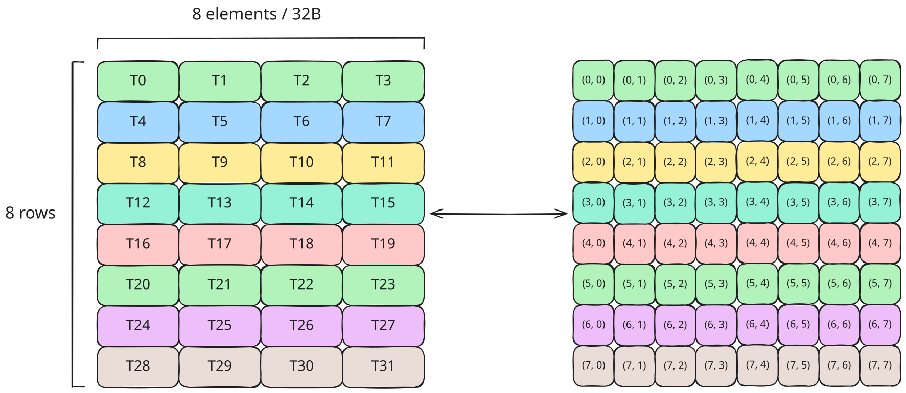
初始化行统计量
行最大值（）与行指数和（）两者都是每行占一个 32 位寄存器。我们把它们分别初始化为 与 0.0。
// ...
constexpr accum_t neg_inf = -cuda::std::numeric_limits<float>::infinity();
accum_t m[N::QO_fragments_per_warp];
accum_t l[N::QO_fragments_per_warp];
#pragma unroll
for (int q = 0; q < N::QO_fragments_per_warp; ++q) {
m[q] = neg_inf;
l[q] = 0.0;
}
// ...
点积缩放
我们对 做点积缩放，把每个元素乘以 。
// ...
const float softmax_scale = rsqrt(static_cast<float>(CFG.d_head));
// ...
template <int QO_fragments, int KV_accum_fragments, typename accum_t = float>
__forceinline__ __device__ constexpr void
scale_S_accum(
accum_t (&S_accum)[QO_fragments][KV_accum_fragments],
const accum_t &softmax_scale
) {
#pragma unroll
for (int q = 0; q < QO_fragments; ++q) {
#pragma unroll
for (int k = 0; k < KV_accum_fragments; ++k) {
S_accum[q][k] *= softmax_scale;
}
}
}
用 warp shuffle 做归约
由于每个线程存储片段的不同部分，我们在做归约时使用 warp shuffle 来避免借助共享内存在线程间 通信。每条 shuffle 指令都能让一个线程向同一 warp 内的另一个线程收发一个值。
由于我们希望每个线程在每次归约结束时都持有相同的最终值，我们用的 warp shuffle 是
__shfl_xor_sync(WARP_MASK, val_to_share, xor_offset)。
- 它会发送值
val_to_share - 它会从
tid ^ xor_offset读取值，其中 tid 是调用线程的 ID
我们先在线程内部的那些值上做归约，再做两次 warp shuffle 在行内四线程组之间归约。
这是行最大值归约的代码：
// This mask indicates that every thread in the warp participates in the shuffle
#define SHFL_ENTIRE_WARP_MASK 0xffffffff
template <int QO_fragments, int KV_accum_fragments, typename accum_t = float>
__forceinline__ __device__ constexpr void
calc_row_max(
accum_t (&S_accum)[QO_fragments][KV_accum_fragments],
accum_t (&m_next)[QO_fragments],
accum_t (&m_cur)[QO_fragments]
) {
#pragma unroll
for (int q = 0; q < QO_fragments; ++q) {
m_next[q] = m_cur[q];
// Calculate max for row across all in-thread registers.
#pragma unroll
for (int k = 0; k < KV_accum_fragments; ++k) {
m_next[q] = max(m_next[q], S_accum[q][k]);
}
// Group reduction
m_next[q] = max(__shfl_xor_sync(SHFL_ENTIRE_WARP_MASK, m_next[q], 2),
m_next[q]);
m_next[q] = max(__shfl_xor_sync(SHFL_ENTIRE_WARP_MASK, m_next[q], 1),
m_next[q]);
}
}
在归约过程中，每次调用 __shfl_xor_sync() 之后，每个线程掌握的信息量都会翻倍。
- 第一次 xor，偏移 2
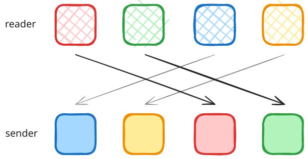
图 20 - 第二次 xor，偏移 1
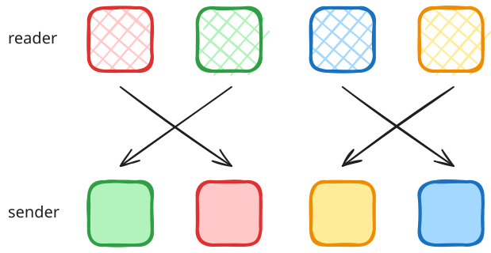
图 21
与 的重新缩放
这个函数把上一轮迭代的累加器 与 缩放到当前块的行最大值：
template <int QO_fragments, int d_head_accum_fragments,
typename accum_t = float>
__forceinline__ __device__ constexpr void
scale_l_O(
accum_t (&m_next)[QO_fragments],
accum_t (&m_cur)[QO_fragments],
accum_t (&l)[QO_fragments],
accum_t (&O_accum)[QO_fragments][d_head_accum_fragments]
) {
#pragma unroll
for (int q = 0; q < QO_fragments; ++q) {
accum_t scale;
scale = expf(m_cur[q] - m_next[q]);
m_cur[q] = m_next[q];
l[q] *= scale;
for (int d_head = 0; d_head < d_head_accum_fragments; ++d_head) {
O_accum[q][d_head] *= scale;
}
}
}
对 取指数
template <int QO_fragments, int KV_accum_fragments,
typename accum_t = float>
__forceinline__ __device__ constexpr void
exponentiate_tensor(
accum_t (&S_accum)[QO_fragments][KV_accum_fragments],
accum_t (&m)[QO_fragments]
) {
#pragma unroll
for (int q = 0; q < QO_fragments; ++q) {
#pragma unroll
for (int k = 0; k < KV_accum_fragments; ++k) {
S_accum[q][k] = expf(S_accum[q][k] - m[q]);
}
}
}
的部分归约
我们把局部块 按行求和累加到 中。由于 直到最后归一化 时才真正被用到，我们其实不需要在那之前做 warp shuffle。既然 warp shuffle 是相对昂贵的操作，我们就避免它。这段代码与 calc_row_max 基本相同，只是求和而非取最大值，并且省去了 shuffle。
注意：P_accum 与 S_accum 共用同一块底层存储。
template <int QO_fragments, int d_head_accum_fragments,
typename accum_t = float>
__forceinline__ __device__ constexpr void
update_row_exp_sum(
accum_t (&P_accum)[QO_fragments][d_head_accum_fragments],
accum_t (&l)[QO_fragments]
) {
#pragma unroll
for (int q = 0; q < QO_fragments; ++q) {
#pragma unroll
for (int d_head = 0; d_head < d_head_accum_fragments; ++d_head) {
l[q] += P_accum[q][d_head];
}
}
}
Softmax 收尾
在收尾阶段（主循环之后），我们在线程之间 shuffle 出 的最终值并归一化 ：
template <int QO_fragments, int d_head_accum_fragments,
typename accum_t = float>
__forceinline__ __device__ constexpr void final_softmax_normalization(
accum_t (&O_accum)[QO_fragments][d_head_accum_fragments],
accum_t (&l)[QO_fragments]
) {
// Finish summing row_sums across all threads in the same row.
#pragma unroll
for (int q = 0; q < QO_fragments; ++q) {
l[q] += __shfl_xor_sync(SHFL_ENTIRE_WARP_MASK, l[q], 2);
l[q] += __shfl_xor_sync(SHFL_ENTIRE_WARP_MASK, l[q], 1);
}
// Final row-wise O softmax normalization.
#pragma unroll
for (int q = 0; q < QO_fragments; ++q) {
#pragma unroll
for (int d_head = 0; d_head < d_head_accum_fragments; ++d_head) {
O_accum[q][d_head] /= l[q];
}
}
}
同步
数据搬运与计算都讲完了，但还有关键的一环：确保线程之间不互相踩脚。没有恰当的屏障，就会出现 竞态条件，线程可能读到过期数据，或覆盖掉其他线程仍需要的数据。
需要哪些屏障
我们来想想，为避免竞态条件，单个张量最少需要多少同步。先假设每个块都拥有自己那段 SMEM。
在 warp 层级上，
- 每次 GMEM ↔ SMEM 操作传输 个元素，
- 每次 SMEM → RF 操作拷贝 个元素，且
- 每次 RF → SMEM 操作拷贝 个元素。
关键的同步点出现在这些内存传输之间。在 GMEM → SMEM 与 SMEM → RF 之间，同一 warp 内的线程 会访问兄弟线程存储的值。对 与 来说这就更复杂，因为 warp 还会访问其他兄弟 warp 存储的值。
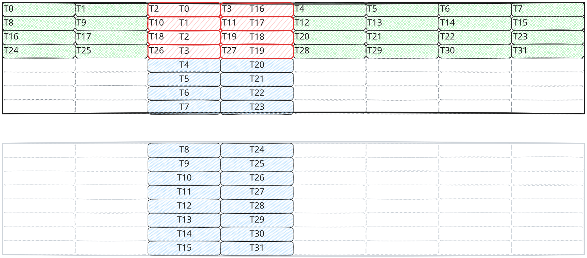
为处理这些依赖，我们需要按张量类型使用不同的屏障。对 2 我们需要 warp 级屏障（__syncwarp()），对 与 需要 CTA 级屏障（__syncthreads()）。
此外，在任何屏障之前，我们都需要调用 cp.wait，确保异步操作的数据确实已经拷过来。
最后，在 RF → SMEM 与 SMEM → GMEM 操作之间，同一 warp 内的线程会访问兄弟线程存储的值
（），所以对输出张量我们也需要一个 __syncwarp()。
SMEM → RF 的通信
一旦张量终于进了 SMEM，线程就只会与同一 warp 内的其他线程通信。
执行的指令要么是 warp 同步的（如 ldmatrix、mma 与 warp shuffle），要么不涉及与其他线程的通信 （如除 warp shuffle 之外的 softmax 操作）。
循环迭代之间的同步
由于我们会把多个 与 块拷贝到 SMEM 中的同一位置，需要确保所有 warp 的所有 ldmatrix() 操作都已执行完毕，才能开始覆盖 SMEM 中的任何张量。所以迭代之间需要一个 __syncthreads() 屏障。
小结
表 12 |
| 张量 | GMEM → SMEM 与 SMEM → RF 之间需要的屏障 | 迭代之间需要的屏障 |
|---|---|---|
__syncwarp() |
不适用，只拷贝一次 | |
__syncthreads() |
__syncthreads() |
|
__syncthreads() |
__syncthreads() |
|
__syncwarp()（在 RF → SMEM 之后） |
不适用，只拷贝一次 |
注意： 与 的同步作用域
在我们的场景中，指定更细粒度的作用域其实没什么好处，原因有两点：
- 目前 与 只与 SMEM 之间拷贝一次，而 与 会被拷贝多次。
- 在第一轮迭代中，我们受制于 所需的
__syncthreads()。
在 Kernel 8 中，我们会改动布局，届时也将需要 CTA 级同步。
Kernel 1：基础实现
所有构建模块都讲完了——数据搬运、GEMM 运算、softmax 计算与同步要求——现在可以把它们组装成 第一个完整的 Flash Attention kernel 了。
代码结构
我们沿用 Cutlass 的标准术语，把 kernel 分成三段：
- 序篇（Prologue）：包含样板式初始化，比如算出正确的内存地址，以及把 从 GMEM → SMEM 拷贝过来。
- 主循环（Mainloop）：大部分逻辑都在这里，处理迭代式的注意力计算。
- 收尾（Epilogue）：最后做 softmax 归一化并把 写回 GMEM。
序篇
序篇包含大量样板式初始化。
template <typename Kernel>
__global__ void
flash_forward_kernel(__grid_constant__ const ForwardKernelArgs args) {
using accum_t = float;
using index_t = int64_t;
using value_t = typename Kernel::value_t;
// ...
// We initialize a CTA for each sample, seq tile, and head.
const int sample = blockIdx.z;
const int head = blockIdx.y;
const int q_seq_block = blockIdx.x;
const index_t gmem_seq_stride = args.seq_stride;
const index_t sample_head_offset =
sample * args.batch_stride + head * args.head_stride;
// We only read/write one block for Q and O.
// These offsets are the same for the whole thread-block.
const index_t QO_gmem_block_offset =
sample_head_offset + q_seq_block * CFG.B_r * gmem_seq_stride;
// We read the entire key sequence.
const index_t KV_gmem_block_offset = sample_head_offset;
value_t *gmem_Q = &static_cast<value_t *>(args.Q)[QO_gmem_block_offset];
value_t *gmem_O = &static_cast<value_t *>(args.O)[QO_gmem_block_offset];
value_t *gmem_K = &static_cast<value_t *>(args.K)[KV_gmem_block_offset];
value_t *gmem_V = &static_cast<value_t *>(args.V)[KV_gmem_block_offset];
extern __shared__ __align__(16) char ch_smem[];
value_t *smem_Q = reinterpret_cast<value_t *>(ch_smem);
value_t *smem_O = smem_Q;
value_t *smem_K = smem_Q;
value_t *smem_V = smem_K;
// MatrixLDST types
Q_t Q(gmem_Q, gmem_seq_stride, smem_Q);
K_t K(gmem_K, gmem_seq_stride, smem_K);
V_t V(gmem_V, gmem_seq_stride, smem_V);
// S is only stored in registers.
S_accum_t S_accum(nullptr, -1, nullptr);
// P is only stored in registers.
P_value_t P_b16(nullptr, -1, nullptr);
// The accumulator for O is only kept in registers. At the end of the kernel, it is then converted into a 16-bit type and then copied into gmem.
O_accum_t O_accum(nullptr, -1, nullptr);
O_value_t O_b16(gmem_O, gmem_seq_stride, smem_O);
// ...
// Start the async copy of the Q and K tiles.
Q.copy_GM2SM();
cp_async_commit();
O_accum.zero();
// Initialize softmax_scale, m, and l.
const accum_t softmax_scale = rsqrt(static_cast<accum_t>(CFG.d_head));
constexpr accum_t neg_inf = -cuda::std::numeric_limits<float>::infinity();
accum_t m[N::QO_fragments_per_warp];
accum_t l[N::QO_fragments_per_warp];
#pragma unroll
for (int q = 0; q < N::QO_fragments_per_warp; ++q) {
m[q] = neg_inf;
l[q] = 0.0;
}
cp_async_wait<0>();
__syncwarp();
Q.copy_SM2RF();
// ...
主循环
主循环实现了算法的核心，包括
- 把 从 GMEM → SMEM → RF 拷贝
- 计算
- 计算 softmax 并重新缩放 与
- 把 从 GMEM → SMEM → RF 拷贝
- 计算
这里的屏障肩负双重职责。
- 屏障 1 确保 的 GMEM→SMEM 拷贝在任何 warp 开始 SMEM→RF 拷贝之前完成。同时，它确保上一轮迭代 的 SMEM→RF 拷贝已完成，其在 SMEM 中的空间才不会被新的 块覆盖。
- 屏障 2 对另外两个张量起同样作用：它确保 已完整进入 SMEM 才能被读入 RF，并确保 已完整进入 RF，其 SMEM 切片才不会被下一个 块覆盖。
// ...
for (int j = 0; j < args.n_KV_blocks; ++j) {
K.copy_GM2SM();
K.advance_gmem_block();
cp_async_commit();
S_accum.zero();
cp_async_wait<0>();
__syncthreads(); // <---- Barrier 1
K.copy_SM2RF();
matmul<Kernel::S_QK_GEMM>(Q, K, S_accum);
// Online softmax
accum_t m_next[N::QO_fragments_per_warp];
scale_S_accum(S_accum.data(), softmax_scale);
calc_row_max(S_accum.data(), m_next, m);
scale_l_O(m_next, m, l, O_accum.data());
exponentiate_tensor(S_accum.data(), m_next);
update_row_exp_sum(S_accum.data(), l);
// Convert the S accumulator block into P bf16/fp16 input block.
convert_to_16_bit_dtype<value_t>(S_accum.data(), P_b16.data());
V.copy_GM2SM();
V.advance_gmem_block();
cp_async_commit();
cp_async_wait<0>();
__syncthreads(); // <---- Barrier 2
V.copy_SM2RF();
matmul<typename Kernel::O_PV_GEMM>(P_b16, V, O_accum);
}
// ...
收尾
收尾处理最后的步骤：用最终的 softmax 值归一化输出，把 从 fp32 转成 16 位输出类型，并把它从 SMEM → GMEM 写回。
// ...
final_softmax_normalization(O_accum.data(), l);
convert_to_16_bit_dtype<value_t>(O_accum.data(), O_b16.data());
O_b16.copy_RF2SM();
__syncwarp();
// Copy the final O tile from SMEM to GMEM.
O_b16.copy_SM2GM();
}
占用率
我们的块配置是 ，并且决定每个 CTA 用 4 个 warp，共 128 个线程。我们来算一个 SM 上能同时活跃多少个 warp。
每 CTA 的线程数
SM_86 每个 SM 支持最多 1536 个常驻线程。每 CTA 128 个线程，则每个 SM 最多可有 。这不会成为限制因素。
每线程的寄存器数
在 RTX 3090（SM_86）上，每个 SM 有 65536 个寄存器可用。每个线程最多可访问 255 个寄存器，超出 的部分会被溢出到本地内存。你可能会觉得我们离 255 还差得远——在很多情况下你没错——但矩阵 乘法可以非常吃寄存器。
要感受一下有多吃，我们来看看每个张量需要的 RF 存储。
表 13 | 各张量的寄存器堆存储需求
| 张量 | 元素大小（字节） | mma 矩阵变量 | 存储形状 | 寄存器数 |
|---|---|---|---|---|
| 2 | A | 32 | ||
| 4 | C/D | 64 | ||
| 2 | B | 128 | ||
| 2 | B | 128 | ||
| 4 | C/D | 32 | ||
| 2 | A | 16 | ||
| 4 | 2 | |||
| 4 | 2 |
总共 404 个寄存器！而这还没算上用于其他目的（比如内存访问）的寄存器。所幸我们不必同时保存 这些全部。事实上，在整个主循环中每一轮迭代都常驻的（不计寄存器溢出）只有 与 ，合计 100 个寄存器。其余的都按需载入。
编译之后，kernel 每线程最多使用 202 个寄存器。这把我们限制在
每个 SM 12 个 warp
达到每 SM 12 个 warp 的门槛是 168 个寄存器。nvcc 有选项可以人为限制每线程的寄存器数，但从 202 降到 168 会带来严重的寄存器溢出。这是个经典的性能权衡：限制寄存器能提高占用率（更多 并发 warp），有助于隐藏内存延迟，但如果编译器被迫把寄存器溢出到慢速本地内存，也可能降低 单线程性能。对我们这种计算受限的 kernel，溢出的代价超过更高占用率带来的好处。我们会在 Kernel 3 中再次讨论寄存器压力。
每 CTA 的共享内存
SM_86 每个 CTA 支持最多 99KiB 的 SMEM。对我们的块配置 ：
- 与 占用
- 与 占用
如果给每个张量都分配自己那段 SMEM，总共会是 64KiB，但要达到每 SM 2 个 CTA 的目标，我们得把它 降到 48KiB。
所幸我们可以通过这样一个观察来减少 SMEM 用量： 与 的访问从不重叠，因此它们可以共用同一块内存空间。这样正好压到 48KiB 的门槛——完美！
更一般地说，每 CTA 所需的 SMEM 与我们对各段 SMEM 的访问排序和同步方式密切相关。这里我不 深入展开，但其他张量也可以通过额外的同步屏障共用各自的 SMEM 段。例如 可以与 共用同一段， 也有可能共用，因为目前我们把整个 都保存在 RF 中。
小结
每线程 202 个寄存器、每 CTA 48KB SMEM，我们的 kernel 每个 SM 上可以有 8 个常驻 warp。
性能与下一步
呼，铺垫了这么多。现在是你期待的时刻：这个 kernel 有多快？
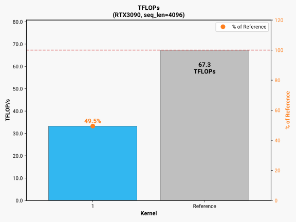
我们跑到 33.28 TFLOPS，而参考实现是 67.29 TFLOPS——约为参考性能的 49%。作为一个没有任何优化的 首个 kernel，这相当可以了！核心功能都正确工作，我们已接近高度优化实现的一半性能。但显然还有 提升空间。
下一部分，我们将开始诊断 kernel，并用 swizzling、双缓冲、指令融合等技巧迭代改进它，在 RTX 3090 上缩小性能差距。
脚注
- 从 Volta 起这是必需的，因为我们无法假定线程的分支状态。详见 Using CUDA Warp-Level Primitives | NVIDIA Technical Blog。话虽如此，多数情况下编译器并不会为
__syncwarp()调用真正生成对应的 SASS 指令。 ↩
引言
在上一部分中，我们用第 2 部分讲过的指令构建了第一个 kernel，在 RTX 3090 上达到了官方实现近一半的性能。
本部分我们将剖析 kernel 找出性能瓶颈，发现存储体冲突（bank conflict）是罪魁祸首，并实现 swizzling 来消除它，从而获得 2 倍的性能提升。
Kernel 2：swizzling
我们的 Kernel 1 达到了参考实现近一半的性能，但另一半性能丢在哪里？Nsight Compute 给了我们 线索：存储体冲突。
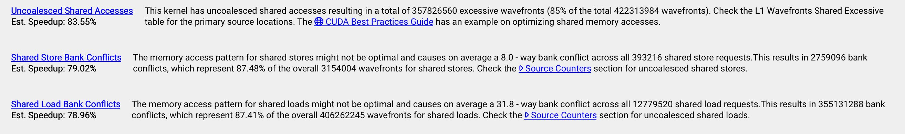
存储体冲突把本应并行的内存访问串行化了。结果就是 warp 把大部分时间花在等待 SMEM 请求上，并使 用的内存带宽多出约 4 倍——同样的工作量，我们占用了 93.64% 的 SMEM 带宽，而本来只需要约 23.48%。
Nsight Compute 规则
这些信息弹窗由 Nsight Compute 的规则（rule）生成。规则是一些 Python 脚本，它们分析 kernel 的性能剖析数据，并根据一组指标指出性能问题。
Nsight Compute 自带一组默认规则， 你也可以自己编写。
可选：验证存储体冲突
Nsight Compute 的存储体冲突
尽管 Nsight Compute 会报告存储体冲突，但这未必总是准确的！剖析器规则可能误导人，因为并不存在
专门用于存储体冲突的硬件计数器1。要看到真实情况，我们需要看派
生指标 __memory_l1_wavefronts_shared_excessive，它等于
memory_l1_wavefronts_shared 减去 memory_l1_wavefronts_shared_ideal2。
这个指标显示因冲突而多需要的波前（wavefront）数量。如果该值为 0，就没有存储体冲突。每一行 SASS 汇编都有各自的该指标取值。
看我们的 kernel 剖析结果，这次存储体冲突的检测并没有误导人：
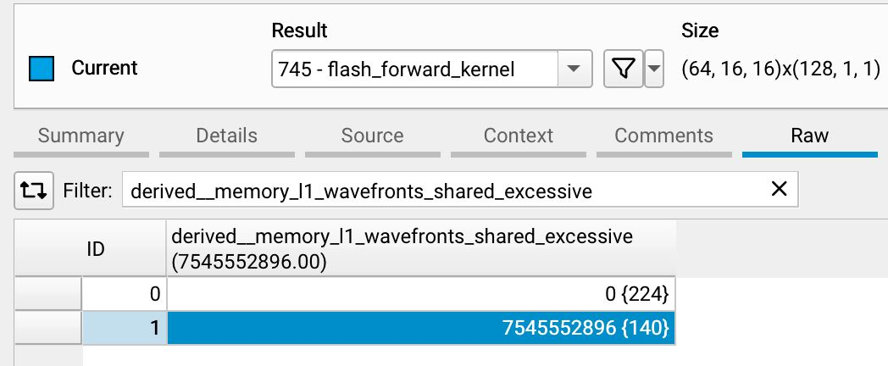
高亮那行是 Kernel 1，上面那行是用于对照的参考实现。花括号里的值是采集该指标时涉及的 SASS 汇编行数。
上面展示的 SMEM 冲突规则所引用的指标是
l1tex__data_bank_conflicts_pipe_lsu_mem_shared_op_ld.sum 与
l1tex__data_bank_conflicts_pipe_lsu_mem_shared_op_st.sum。我认为这两个指标汇总的是同时访问
SMEM 与 L1 缓存所产生的存储体冲突——这种情况之所以会发生，是因为 SMEM 与 L1 缓存是统一的。
这些 L1/SMEM 仲裁冲突我们无法控制，但纯 SMEM 的冲突可以通过精心设计的内存访问模式（比如
swizzling）来消除。
理解 16B 向量化的存储体
向量化访问与标准的 4B 访问工作方式不同，这会影响存储体冲突的产生方式。使用 16B 向量化访问时， 我们实际拥有的是 8 个 16B 的存储体，而不是传统的 32 个 4B 存储体。
原因如下：当一个 warp 执行一条 16B LD/ST 指令时，硬件把它拆成 4 个独立的阶段（phase），每个 阶段由 8 个线程完成。由于每个线程访问 16 字节（横跨 4 个连续的 4 字节存储体），这 4 个存储体 实际上合成了一个 16 字节的访问单元。
表 14 |
| 阶段 | 线程 |
|---|---|
| 0 | 0-7 |
| 1 | 8-15 |
| 2 | 16-23 |
| 3 | 24-31 |
由于某阶段中每个线程访问 16 字节，每个阶段最多可访问 128 字节。全 warp 合计，每条指令可达 512 字节。
存储体的结构在 16B 访问下发生了显著变化。不再是一个线程访问单个 4 字节存储体，而是一组 8 个 线程各自同时访问 4 个存储体。由于地址必须 16 字节对齐，这实际上把 4 个连续的 4 字节存储体合并 成一个 16 字节的访问单元。于是我们不再是面对 32 个独立存储体，而是等效地拥有 8 个各 16 字节宽 的存储体。为保持一致，下文我把这些 16B 宽的单元称为「存储体」。
第一阶段大致如下：
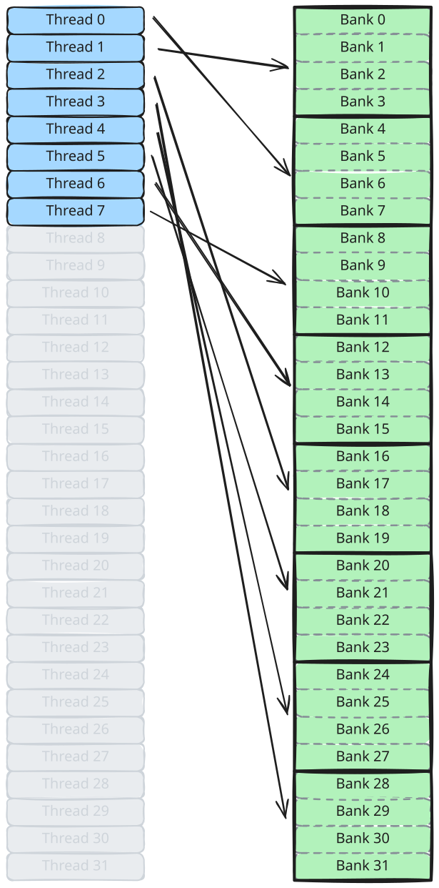
第二阶段遵循类似的模式：
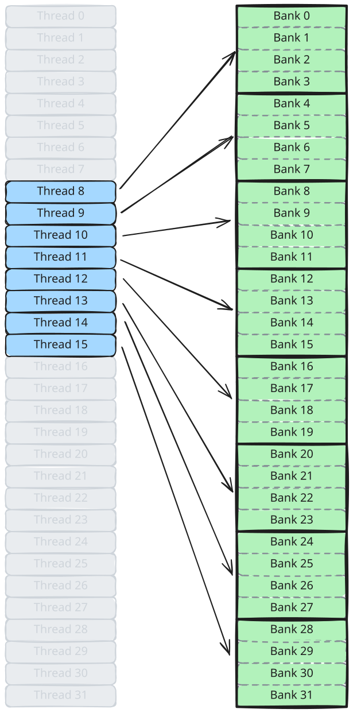
其余阶段依此类推。现在，如果同一组内的两个线程访问同一存储体内的不同地址，就会在这 4 个构成 它的存储体上产生一次存储体冲突：
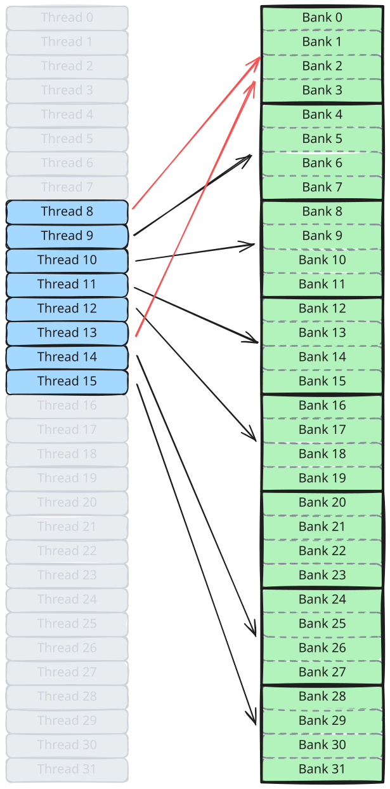
不过，由于每个阶段都是独立的内存访问，来自不同组的线程可以访问同一存储体内的不同地址而不产生 冲突：
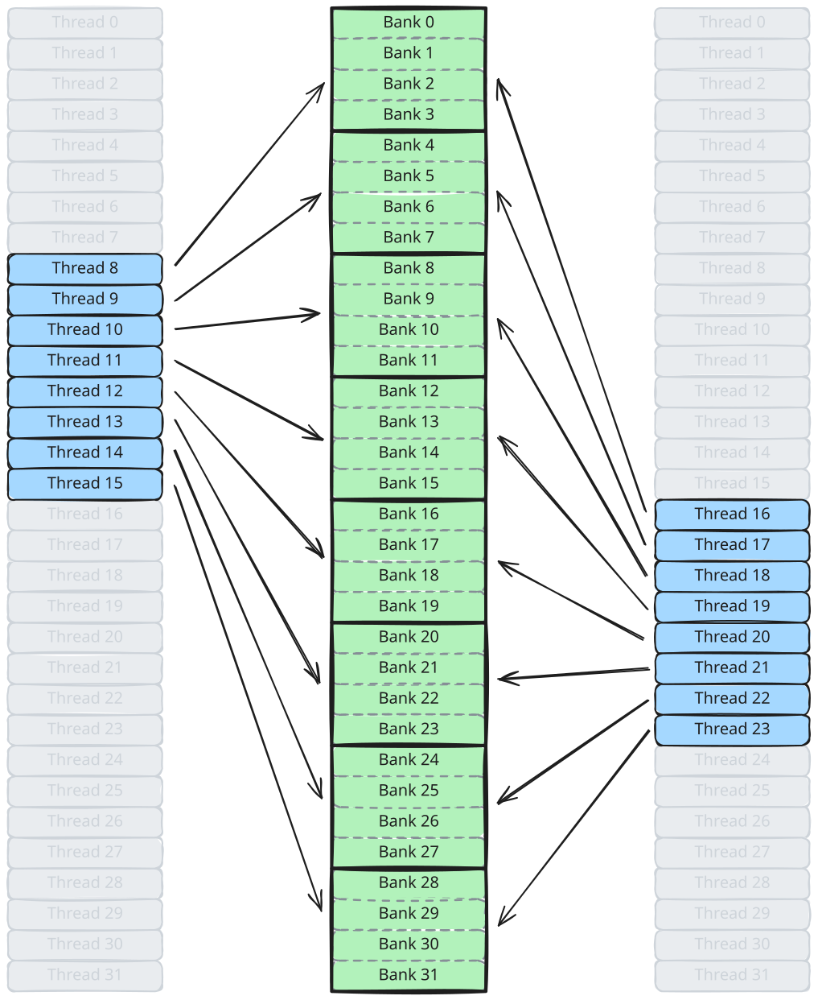
不同阶段的存储体冲突程度可以不同。例如某个阶段可能是 2 路冲突，另一个阶段却是 8 路冲突。有些 阶段可能毫无冲突，另一些则冲突严重。关键认识是：要让整个 warp 的内存访问无冲突，我们只需要 保证在负责单个阶段的每组 8 个线程内部不发生存储体冲突。
以上聚焦的是 16B 访问，8B 访问遵循类似的模式。关键差别在于：8B 指令不是拆成 4 个各 8 线程的 阶段，而是分成 2 个各 16 线程的阶段。
16B 向量化存储体
- 按阶段执行：16B 访问拆成 4 个阶段，每阶段 8 个线程
- 有效存储体结构：8 个各 16B 的存储体（而非 32 个 4B 存储体）
- 冲突条件：同一阶段内的线程访问同一存储体的不同地址时产生存储体冲突
- 跨阶段自由：不同阶段可以访问同一存储体而不冲突
我们 kernel 中的存储体冲突
我们的 kernel 有两处冲突：
SMEM → RF 操作
这是第一个问题。在 ldmatrix 操作期间，一个阶段内每个线程同时访问同一存储体，造成 8 路存储体 冲突。
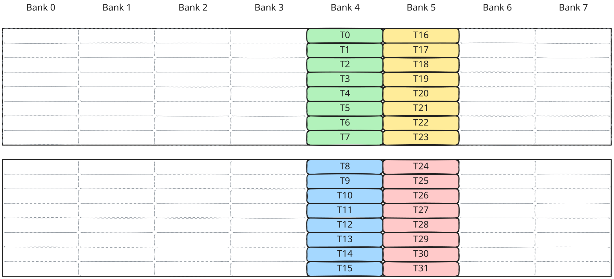
RF → SMEM 操作
这是第二个问题。每个线程每条指令只拷 4 字节，但间隔为 4 的线程（如 0、4、8、12……）都映射到 同一存储体，造成 8 路冲突。
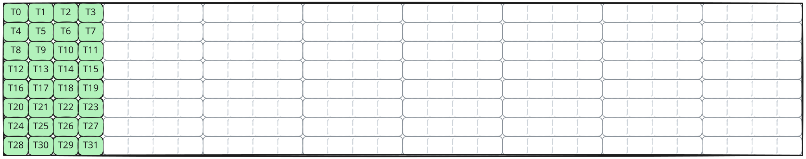
GMEM ↔ SMEM 操作
好消息：这些传输没有冲突。每一行各自作为一个阶段，内存布局也保证各线程访问不同存储体。
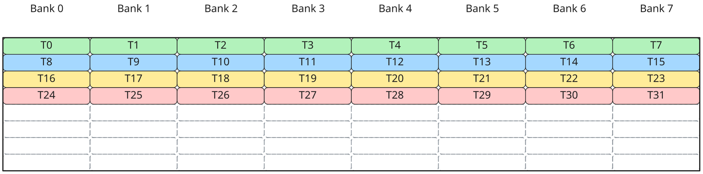
我们 kernel 中的存储体冲突
- GMEM ↔ SMEM：无冲突——各阶段内线程访问不同存储体
- SMEM → RF：8 路冲突——ldmatrix 期间阶段内所有线程访问同一存储体
- RF → SMEM：8 路冲突——间隔为 4 的线程映射到同一存储体
既然找出了冲突位置，我们来理解它们的性能影响。
存储体冲突的性能后果
内存利用率
存储体冲突是带宽吞噬者。每次 8 路冲突都把本应并行的访问串行化，需要 8 倍的波前——你可以把波前 理解为所需的访问次数。
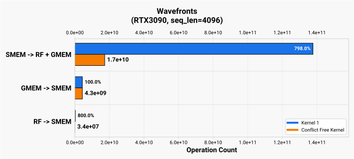
结果就是，我们 kernel 的 SMEM 带宽利用率达到 93.64%，而等效的无冲突 kernel 只有 23.48%3。
warp 停顿
在 Ampere 上，warp 理论上每个时钟周期都能被发射一条指令。然而各种情况会阻止 warp 执行指令，
从而产生一个停顿周期。剖析器会每隔 n 个时钟周期（n 可配置）抽样这些停顿成因，并把数据记录在
smsp__pcsamp_warps_issue_stalled_* 系列指标中。
这些指标揭示出不同的停顿情形：
- 如果某个 warp 成功被发射了一条指令，停顿成因记为
smsp__pcsamp_warps_issue_stalled_selected - 当某个 warp 本可以接收指令、但另一个 warp 被选中时，记为
..._not_selected - 在
__syncthreads()检查点等待 CTA 内其他 warp 的 warp 会产生..._barrier停顿
更多停顿成因见 Nsight Compute 文档。 分析这些停顿模式能为了解 kernel 瓶颈提供宝贵线索。
我们的 kernel：
表 15 |
| 停顿 | 占全部停顿比例 |
|---|---|
| short_scoreboard | 56.37% |
| math_pipe_throttle | 11.88% |
| mio_throttle | 11.66% |
| long_scoreboard | 6.31% |
与参考 kernel 相比：
表 16 |
| 停顿 | Kernel 1 | 参考实现 | 绝对差 |
|---|---|---|---|
| short_scoreboard | 56.37% | 0.52% | -55.85% |
| mio_throttle | 11.66% | 1.37% | -10.29% |
| long_scoreboard | 6.31% | 0.43% | -5.87% |
相比参考实现，我们 kernel 的 short_scoreboard 与 mio_throttle 停顿率明显更高。我会在本系列的 最后一部分（第 9 部分）更深入地探讨 warp 停顿，这里先做个简要概述。
当指令在等待发往 SMEM 的载入/存储结果、或其他延迟相对较长的指令（如取指数）时，就会出现 short_scoreboard 停顿。该指标不含 GMEM 与 LMEM 操作，后者由 long_scoreboard 单独跟踪。而 mio_throttle 停顿发生在 Ampere 面向较长操作的发令队列被填满、warp 不得不等队列腾出空间时。
这些指标表明，与经过优化的参考实现相比，我们在等待内存传输完成上花的时间多得不合比例。
既然确认了存储体冲突是主要瓶颈并理解了其性能影响，我们就来看看解决方案：swizzling。
Swizzling
Swizzling 是消除优化过的 CUDA kernel 中存储体冲突的标准技术。核心思路是重新分布内存访问， 让访问同一行或同一列的线程落到不同的物理存储体上，从而消除串行内存访问。
为理解 swizzling，我们考虑一个贯穿全篇的小例子：GMEM 中有一个以行主序存储的 4x4 矩阵，我们想把 它转置。
- 我们想以行主序把它载入 SMEM，所以逐行拷贝
- 我们想以列主序把它写回 GMEM，所以逐列写回
同时假设我们的 SMEM 总共只有 4 个存储体。
Swizzling 通过把行与列做异或，把同一逻辑列上的元素映射到唯一的物理存储体。我们用下式访问每个 元素
arr[row][row XOR col]，而不是arr[row][col]
注意
在写入和读取 SMEM 时，我们都必须对列下标做 swizzling（即套用这个公式）。
不做 swizzling 时，我们的代码大致如下。
__shared__ T smem[4][4];
// Copying row by row from GMEM to SMEM.
int col = threadIdx.x % 4;
for (int row = 0; row < 4; ++row) {
smem[row][col] = gmem_in[row][col];
}
// Copying col by col from SMEM to GMEM.
int row = threadIdx.x % 4;
for (int col = 0; col < 4; ++col) {
gmem_out[col][row] = smem[row][col];
}
做了 swizzling 之后，代码变成
// Copying row by row from GMEM to SMEM.
int col = threadIdx.x % 4;
for (int row = 0; row < 4; ++row) {
int swizzled_col = row ^ col;
smem[row][swizzled_col] = gmem_in[row][col];
}
// Copying col by col from SMEM to GMEM.
int row = threadIdx.x % 4;
for (int col = 0; col < 4; ++col) {
int swizzled_col = row ^ col;
gmem_out[col][row] = smem[row][swizzled_col];
}
深入理解 swizzling
我们可以用递归的方式来理解 swizzling。这有助于看清这些模式为什么是这样工作的。我们从最小规模 开始逐级向上：
基础情形（1×1）：只有一个元素时，swizzling 什么也不做。只有一种排列方式。
情形（2×2）：可以逐行拆解：
- 第一行：对每个元素直接套用基础情形
- 第二行：先在行内交换位置，再对每个元素套用基础情形
情形（4×4）：把它看作排列成方形的四个（2×2）子网格：
- 第一行子网格：对每个子网格独立套用（2×2）模式
- 第二行子网格：先交换子网格的位置，再对每个子网格套用（2×2）模式
直观上是什么样
XOR 模式在每一行产生不同的交换行为：
第 0 行：列下标保持不变
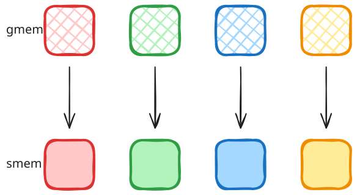
第 1 行：交换相邻的成对列（0 ↔ 1，2 ↔ 3）。
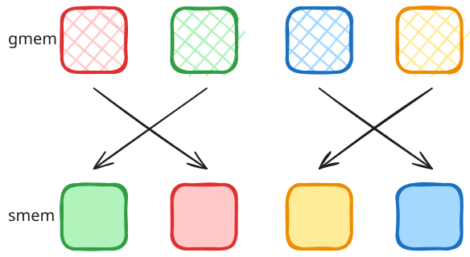
第 2–3 行：交换距离跳到 2，但在每对交换内部仍然重复第 0–1 行的模式。
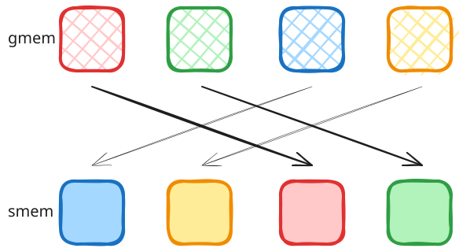
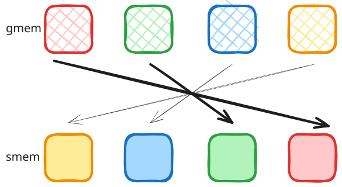
按列访问时的模式
当我们逐列访问数据时，看看会发生什么：
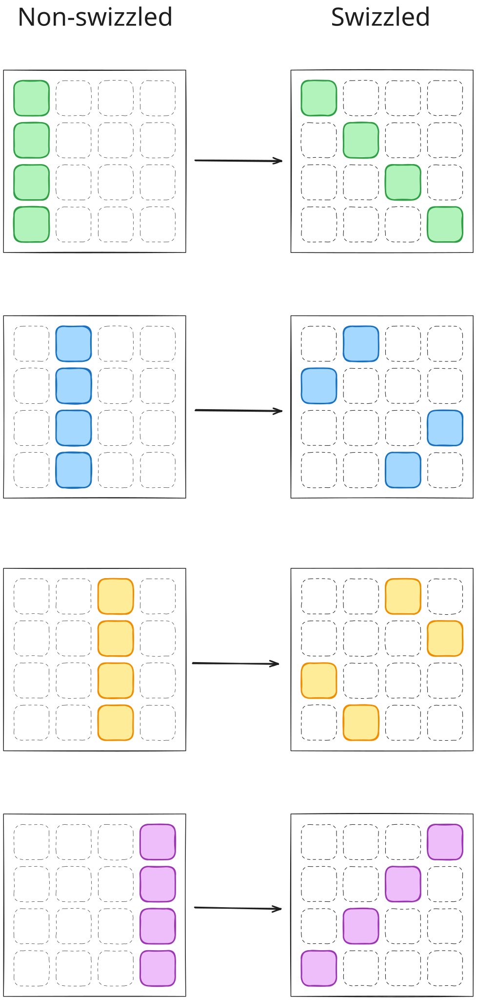
注意访问任何一列时，4 个线程都没有访问同一个存储体？这正是我们想要的 swizzling 函数。
类数独映射
我们其实并不一定需要 XOR。我们需要的是一个类似数独的映射，满足：
- 每一行的元素各不相同
- 每一列的元素各不相同
在这个「数独格」里，每个格子里的数字是逻辑列，而列位置是物理列（实际存储的位置）。
如何读这个映射：
- 按行访问：找到该行，按顺序读出列下标
- 按列访问：对于列 c，在各行中找出 c 出现的位置——这些位置就是它的物理存储位置
表 17 | 4x4 非 XOR 的「类数独」映射
| r\c | 0 | 1 | 2 | 3 |
|---|---|---|---|---|
| 0 | 2 | 3 | 1 | 0 |
| 1 | 0 | 1 | 2 | 3 |
| 2 | 1 | 0 | 3 | 2 |
| 3 | 3 | 2 | 0 | 1 |
这个映射之所以有效，是因为如果我们：
- 任选一列——每个元素（存储体）都唯一，所以没有存储体冲突
- 任选一行——各元素互不相同，所以没有数据被覆盖
任何类数独的映射都可以，但为什么用 XOR？因为它计算快，且不需要额外内存。
表 18 | 4x4 XOR 映射
| r \ c | 0 | 1 | 2 | 3 |
|---|---|---|---|---|
| 0 | 0 | 1 | 2 | 3 |
| 1 | 1 | 0 | 3 | 2 |
| 2 | 2 | 3 | 0 | 1 |
| 3 | 3 | 2 | 1 | 0 |
向量化的 swizzling
与其考虑每一个 bf16/fp16 元素，不如把我们的「元素」看作与 SMEM 中存储体一样大，可能更容易。
这样我们不再是载入 8 个 16 位元素，而是载入单个 16 字节的元素。Cutlass 为此定义了 uint128_t
类型。
要载入一个 8×8 的 16 字节元素网格，就在 8 个存储体与 8 行上递归套用同样的 row^col 映射。
这是第 1 列与第 5 列的访问模式：
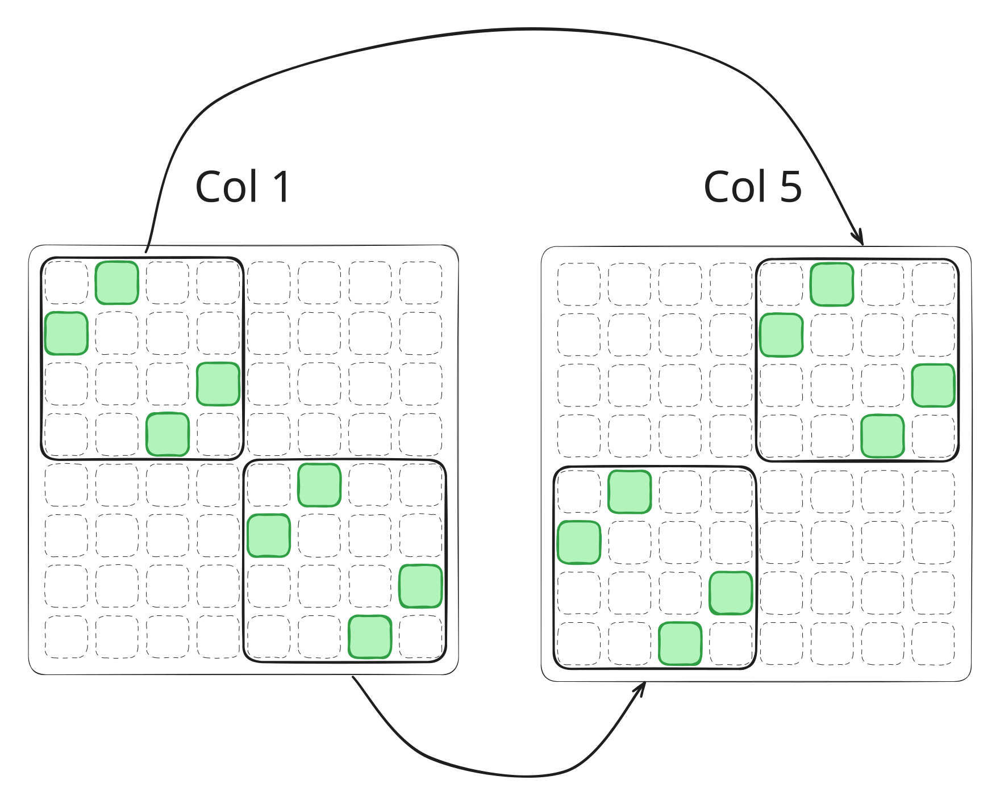
非向量化的 swizzling
RF → SMEM 操作带来一个独特的挑战，因为它不像我们的其他内存传输那样是向量化的。向量化的 GMEM ↔ SMEM 与 SMEM → RF 操作每线程搬运 16 字节，而 RF → SMEM 每条指令每线程只拷 4 字节。 然而我们仍需要维持 swizzled 布局，供后续的 SMEM → GMEM 操作使用。这该怎么办？
回忆片段如何跨线程布局：
- 每组 4 个线程存储片段内的一行（共 16 字节）
- 组内各线程有各自的列偏移（0、2、4 或 6 字节），但共享同一个 16B 对齐的基地址。
我们要做的是：对这一行所有线程共享的基地址施加 swizzling，再加上每个线程各自的偏移。这个做法 保证了 SMEM 数据维持后续操作所需的 swizzled 布局。
下图展示了第二个片段的这种映射：
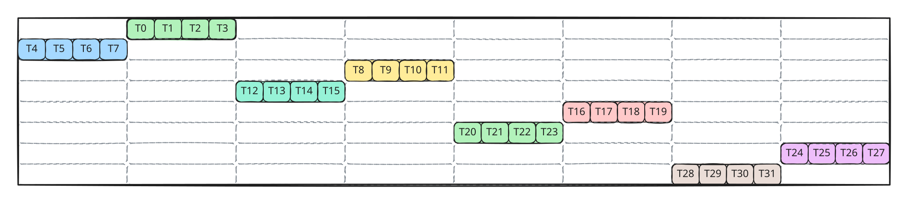
附注：Hopper
Hopper 及更新的架构在以下拷贝路径上简化了 swizzling：
- GMEM ↔ SMEM：Hopper 在
cp.async.bulk*系列 PTX 指令中内置了 swizzling 功能。这在 Hopper、Blackwell 的 HPC 与消费级产品上都可用。 - SMEM → RF：Hopper 与 Blackwell 的 HPC 拥有专用的矩阵乘法指令——同样内置 swizzling——直接作用于 SMEM（Blackwell 上则是 TMEM）。这样就免去了任何手工拷贝。
然而 RF → SMEM 传输没有硬件加速，所以这种情况下仍然需要 swizzling。
尽管这些变化大幅简化了事情，要使用这些功能，理解 swizzling 的工作原理仍然是必要的。
代码改动
swizzling 函数
理解了 swizzling 背后的理论、也看过简单例子中它是如何工作的之后，我们来看实际实现。我们的 swizzling 函数建立在前文探讨的 row XOR col 模式之上，但针对我们具体的内存访问模式做了些调整。
#define BANKS_PER_VEC4_ACCESS 8
#define ELEMS_PER_BANK 8
__forceinline__ __device__ constexpr int get_swizzled_col(const int &row, const int &col) {
// Restrict the swizzled column to the
// (8, 128) byte region it's in.
// Not strictly necessary, but we'll need it in later kernels.
const int region_row = row % BANKS_PER_VEC4_ACCESS;
// Convert column byte offset to 16B bank index since we have 8 banks of 16B each.
// This transforms the column coordinate from element space to bank space
const int bank_col = col / ELEMS_PER_BANK;
// Preserve the byte offset within each 16B bank for non-vectorized RF→SMEM stores
// This ensures threads in the same 4-thread group maintain their relative positions
const int bank_offset = col % ELEMS_PER_BANK;
// Apply XOR swizzling to distribute consecutive row accesses across different banks
// Then reconstruct the final column address by scaling back to element space
return ((region_row ^ bank_col) * ELEMS_PER_BANK) + bank_offset;
}
一个关键细节：我们必须对每一次 SMEM 访问施加 swizzling——无论读还是写。混用 swizzled 与 非 swizzled 访问会破坏我们的数据。
swizzling 函数就位后，我们把它应用到所有内存操作中。高亮行显示了改动。
GMEM 与 SMEM 之间的拷贝
template <typename op, /* either GM2SM_async or SM2GM */
TensorLDSTConfig CFG, typename value_t, typename index_t = int64_t>
__forceinline__ __device__ constexpr void copy_block_GSM(
value_t *gmem, value_t *smem,
index_t gmem_seq_stride,
const int lane_id
) {
// ...
#pragma unroll
for (int c = 0; c < col_fragments_per_row;
c += col_fragments_per_iter) {
const int col_fragment = c + thread_col_fragment;
// Apply swizzling to prevent bank conflicts during later column-wise access in `ldmatrix`.
const int smem_col = get_swizzled_col(cur_row, col_fragment * COLS_PER_FRAGMENT);
op()(&gmem[cur_row * gmem_seq_stride +
col_fragment * COLS_PER_FRAGMENT],
&smem[cur_row * CFG.smem_cols +
smem_col]);
}
}
}
SMEM → RF
与
#define ROWS_PER_FRAGMENT 8
#define COLS_PER_FRAGMENT 8
#define ELEMS_PER_VEC4_ACCESS 8
template <TensorLDSTConfig CFG, typename value_t>
__forceinline__ __device__ constexpr void copy_warp_fragment_SM2RF(
uint32_t (®s)[CFG.RF.row_fragments][CFG.RF.col_fragments],
value_t *smem,
const int lane_id,
const int col_fragment_offset = 0
) {
// ...
#pragma unroll
for (int c = 0; c < CFG.RF.col_fragments; c += col_fragments_per_iter) {
const int smem_col_fragment = thread_col_fragment + c + col_fragment_offset;
// Use swizzled addresses to match the layout from GMEM→SMEM transfers
const int smem_col = get_swizzled_col(cur_row, smem_col_fragment * ELEMS_PER_VEC4_ACCESS);
ldmatrix_x4(&smem[cur_row * CFG.smem_cols +
smem_col],
regs[r][c], regs[r + 1][c], regs[r][c + 1],
regs[r + 1][c + 1]);
}
}
}
template <TensorLDSTConfig CFG, typename value_t>
__forceinline__ __device__ constexpr void copy_warp_fragment_transposed_SM2RF(
uint32_t (®s)[CFG.RF.row_fragments][CFG.RF.col_fragments],
value_t *smem,
const int lane_id,
const int row_fragment_offset = 0
) {
// ...
#pragma unroll
for (int c = 0; c < CFG.RF.row_fragments; c += col_fragments_per_iter) {
const int smem_col_fragment = thread_col_fragment + c;
const int smem_col = get_swizzled_col(cur_row, smem_col_fragment * ELEMS_PER_VEC4_ACCESS);
ldmatrix_x4_transpose(
&smem[cur_row * CFG.smem_cols +
smem_col],
regs[c][r], regs[c][r + 1], regs[c + 1][r], regs[c + 1][r + 1]);
}
}
}
RF → SMEM
template <TensorLDSTConfig CFG, typename value_t>
__forceinline__ __device__ constexpr void copy_warp_fragment_RF2SM(
uint32_t (®s)[CFG.RF.row_fragments][CFG.RF.col_fragments],
value_t *smem,
const int lane_id
) {
// ...
#pragma unroll
for (int r = 0; r < CFG.RF.row_fragments; ++r) {
const int cur_row = thread_row + r * rows_per_iter;
#pragma unroll
for (int c = 0; c < CFG.RF.col_fragments; c += col_fragments_per_iter) {
const int smem_col_fragment = c;
// Apply swizzling to maintain consistent layout for later SMEM→GMEM transfers
const int smem_col = get_swizzled_col(cur_row, smem_col_fragment * ELEMS_PER_VEC4_ACCESS + thread_inner_col);
reinterpret_cast<uint32_t *>(
&smem[cur_row * CFG.smem_cols +
smem_col])[0] = regs[r][c];
}
}
}
所有内存操作都实现了 swizzling 之后，我们来看看性能影响：
性能结果
swizzling 优化带来了惊人的成果：性能从 33.28 翻倍到 66.12 TFLOPs，让我们与参考实现只剩一步 之遥！
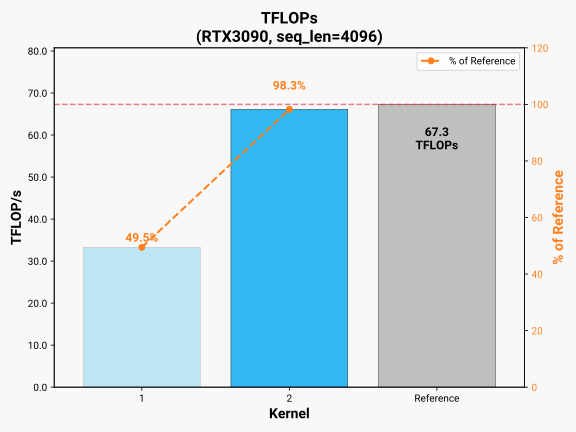
剖析分析
存储体冲突已消除
完美！我们消除了所有存储体冲突。
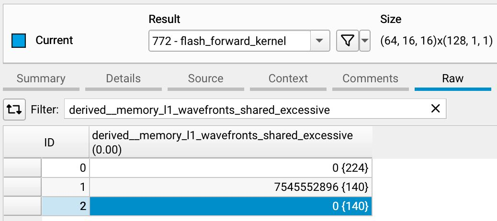
这一显著改善把访问同样多 SMEM 所需的波前数量降低了 8 倍。8 路存储体冲突此前迫使我们的内存操作 串行化，实际上把有效内存带宽降到了八分之一。消除这些冲突后，内存访问恢复了并行本质，硬件得以 按其应有吞吐运行，也把周期腾出来做真正的计算。
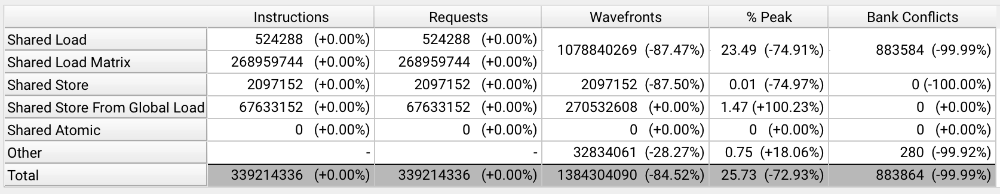
Kernel 2 的 warp 停顿
看看运行我们 kernel 的 warp 停顿位置的变化，改进巨大！
表 19 |
| 停顿 | Kernel 1 | Kernel 2 | 变化（1→2） | 参考实现 |
|---|---|---|---|---|
| short_scoreboard | 56.37% | 1.49% | -54.88% | 0.52% |
| mio_throttle | 11.66% | 0.74% | -10.92% | 1.37% |
| long_scoreboard | 6.31% | 15.15% | +8.84% | 0.43% |
不过按比例看，warp 在等待 GMEM 请求时的停顿比我们希望的多。15.15% 的 warp 停顿来自 long_scoreboard，而参考实现只有 0.43%。这个增加多半不是 swizzling 造成的，而是它让这个问题 更加凸显。减少这些停顿将帮助我们弥补剩余的性能差距。
下一篇
仅仅一个改动——swizzling——我们就取得了巨大的性能跃升，与参考实现的距离显著缩短。在 下一部分中，我们将实现标准的 Cutlass 技巧，帮助我们把计算 与内存传输重叠起来，以获得更高的持续吞吐。
脚注
-
参见 NVIDIA 开发者论坛上的这个帖子。 ↩
-
这里的
_shared后缀指 SMEM。 ↩ -
这是
l1tex__data_pipe_lsu_wavefronts_mem_shared_op_ld.sum.pct_of_peak_sustained_elapsed指标。 ↩
引言
在上一部分中，我们实现了 swizzling，通过消除存储体冲突获得了 惊人的 2 倍性能提升。我们的 kernel 现在在 RTX 3090 上达到了参考实现 98% 的性能。
本部分我们将实现 Cutlass 中使用的标准 GEMM 优化技巧。 Cutlass 是 NVIDIA 用于高性能线性代数 kernel 的 C++ 模板库。既然我们已经拿下了大部分可得的 性能收益，这些改进看起来可能没那么亮眼。然而这些技巧对以下方面至关重要：
- 隐藏内存延迟：让数据传输与计算重叠，减少空闲时间
- 降低寄存器压力：让更大的块大小与更多 kernel 配置成为可能
有些优化甚至在当前配置下会带来轻微的性能回退，但它们让其他块大小跑得更好，并在后续部分提供 自动调优的变量。
我们将实现三项递进的优化：
Kernel 3：预先载入 K/V——我们在 GMEM → SMEM 层面实现双缓冲，在计算当前块的同时载入下一个 与 块。这个经典优化技巧让 GMEM 传输与计算重叠，把 GMEM 停顿减少 93%。
Kernel 4：片段交错——不再先把整块载入 RF 再计算，而是把它们切成子块，让载入与矩阵运算交错 进行。这缩短了从第一次 SMEM → RF 传输到第一次 GEMM 操作之间的等待，同时大幅降低所有块配置下 的寄存器压力。
Kernel 5：SMEM → RF 双缓冲——我们把双缓冲扩展到片段载入，分配额外寄存器空间来隐藏 ldmatrix 延迟。虽然当前配置下这带来轻微回退，但它让其他块大小获得显著性能提升，对自动调优至关重要。
Kernel 3：预先载入 与 块（GMEM → SMEM 双缓冲）
当前的 kernel 在把 与 块拷到 RF 之前才刚从 GMEM 载入，导致 warp 在传输期间闲置。
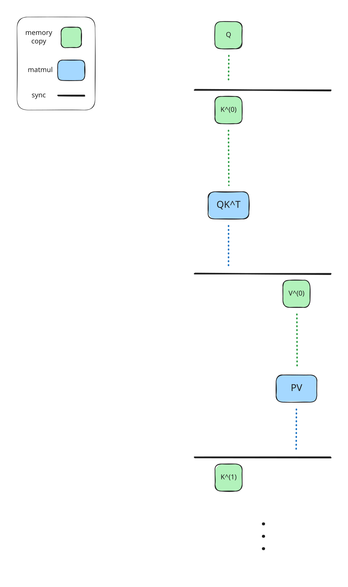
这种低效在我们的剖析中很明显：15.15% 的 warp 停顿来自等待 GMEM 传输（long_scoreboard），而参考 kernel 只有约 0.43%。这说明通过更好的内存调度还有很大改进空间。
解决方案：在计算之前数据时就开始载入后面的块，让传输在需要之前就完成。
确定安全的载入点
要安全地实现这个优化，我们必须遵守同步约束：
内存依赖：
- 与 ：在 GMEM→SMEM 与 SMEM→RF 之间需要
__syncthreads()（所有 warp 协作） - 迭代之间：需要
__syncthreads()确保所有 warp 读完，才可覆盖 SMEM
问题：我们什么时候可以开始把 与 从 GMEM → SMEM 载入，而不会造成竞态条件？
下面是我们的 kernel 的简化 Python 伪代码版本，去掉了屏障与 cp.async.wait()。
# Prologue
cp.async_and_commit(Q_SM, Q_GM[offset])
for blk in range(T_c):
cp.async_and_commit(K_SM, K_GM[blk])
load_SMEM2RF(K_RF, K_SM)
gemm(S_RF, Q_RF, K_RF^T)
online_softmax(S_RF, m_RF, l_RF, O_RF)
convert_to_b16(P_RF, S_RF)
cp.async_and_commit(V_SM, V_GM[blk])
load_SMEM2RF(V_RF, V_SM)
gemm(O_RF, P_RF, V_RF)
# Epilogue
# ...
我们能最早载入其中任一块的时机，是在不再需要访问上一块的 SMEM 之后，也就是 load_SMEM2RF
刚结束之后。不过把它放在 gemm 之后，能给编译器更多优化余地。
- 对 ，那是在 之后（第 7 行）。
- 对 ，那是在 之后（第 13 行）。
我们把每个载入「上推」到各自的位置。对 ，我们需要为初次载入加一个特例。
# Prologue
cp.async_and_commit(Q_SM, Q_GM[offset])
cp.async_and_commit(K_SM, K_GM[0])
for blk in range(T_c):
cp.async_and_commit(V_SM, V_GM[blk])
load_SMEM2RF(K_RF, K_SM)
gemm(S_RF, Q_RF, K_RF^T)
online_softmax(S_RF, m_RF, l_RF, O_RF)
if blk < T_c - 1:
cp.async_and_commit(K_SM, K_GM[blk+1])
convert_to_b16(P_RF, S_RF)
load_SMEM2RF(V_RF, V_SM)
gemm(O_RF, P_RF, V_RF)
# Epilogue
# ...
现在需要加入同步屏障。关键认识是：为避免竞态条件，我们需要两个屏障点：
表 20 |
| 屏障位置 | 目的 |
|---|---|
| 循环开始处 | 确保 传输在使用前完成；防止在 仍被读取时覆盖它 |
| softmax 之后 | 确保 传输在使用前完成；确保所有 warp 在覆盖 前读完 |
# Prologue
cp.async_and_commit(Q_SM, Q_GM[offset])
cp.async_and_commit(K_SM, K_GM[0])
for blk in range(T_c):
cp.wait()
__syncthreads()
cp.async_and_commit(V_SM, V_GM[blk])
load_SMEM2RF(K_RF, K_SM)
gemm(S_RF, Q_RF, K_RF^T)
online_softmax(S_RF, m_RF, l_RF, O_RF)
cp.wait()
__syncthreads()
if blk < T_c - 1:
cp.async_and_commit(K_SM, K_GM[blk+1])
convert_to_b16(P_RF, S_RF)
load_SMEM2RF(V_RF, V_SM)
gemm(O_RF, P_RF, V_RF)
# Epilogue
# ...
这种安排最大化了内存传输与计算之间的重叠，同时保证同步正确。
现在的执行流如下图：
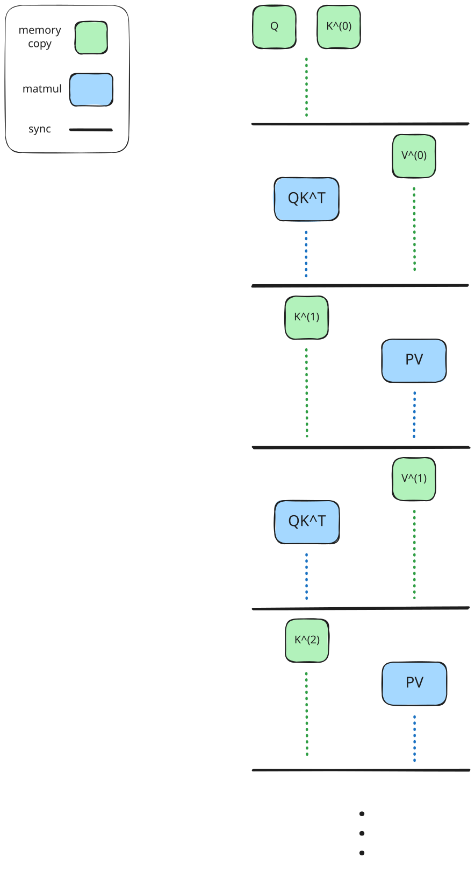
双缓冲
我们刚刚实现的是一种经典优化技巧，叫做双缓冲。想法很简单：与其干等着数据载入，不如保留两块 缓冲区并交替使用。当我们在一个缓冲区上计算时，同时把数据载入另一个缓冲区。
在我们的场景中，为 与 块分配额外的 SMEM 空间。当我们忙着在当前块上计算时，下一个块已经在后台载入。这样 warp 就不必干坐着等内存传输。
好在我们在占用率那一节就已经为 分配了额外的 SMEM 切片——只是直到现在才真正有效地用上它。
一般情况下双缓冲如何改变这个模式：
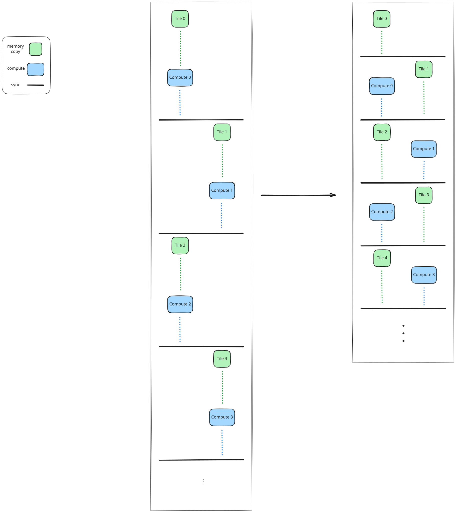
性能
这个优化带来了多少提升？剖析之后，我们看到 long_scoreboard 造成的 warp 停顿显著下降，从 15.15% 降到 0.95%。这带来了不错的性能改善，从参考实现的 98.3% 提升到 99.4%。
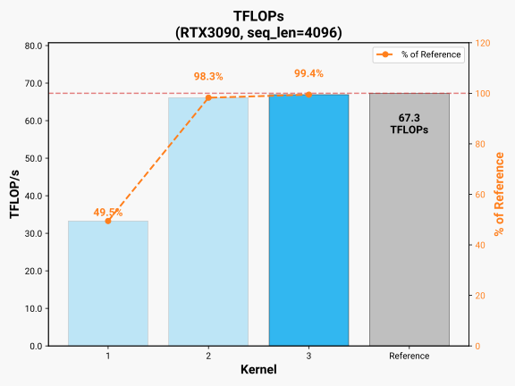
Kernel 4：片上 LD/ST 与计算交错
Kernel 3 成功把 GMEM 停顿减少了 93%，我们解决了 GMEM → SMEM 传输瓶颈。然而我们的 kernel 仍然 在做任何计算之前先把整个 与 块载入 RF。Kernel 4 通过让内存传输与计算交错来解决这一低效，从而降低寄存器压力。
目前我们的 kernel 在执行任何 mma 操作之前，先把整个 与 块载入 RF。
这带来两个问题
- 我们本应可以在整块拷完之前就开始做一些矩阵乘法
- 虽然我们选的配置 还不至于溢出寄存器，但有些更大的块维度会。如果我们希望不同的块配置都可用（因为我们选的这个最终可能并非最优），那就必须降低寄存器压力。
载入片段
我们不再一次载入所有片段，而是把它们分成若干子集，称为子块。我们的 mma 循环先载入一个子块的 片段，在这些片段上做 mma，再载入下一个子块，在那些片段上做 mma，如此继续。
为最大化性能，我们希望的载入方式应尽量提高数据复用。主要有两种策略：
策略 1：A 逐行载入、B 逐列载入（低效）
- 的每一列都被多次载入（ 每行一次）
- 片段强度：每次内存传输 0.891 次计算
- 造成冗余载入，给内存流水线加压
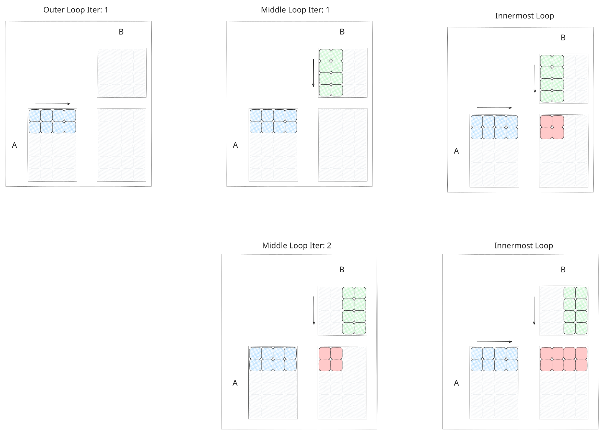
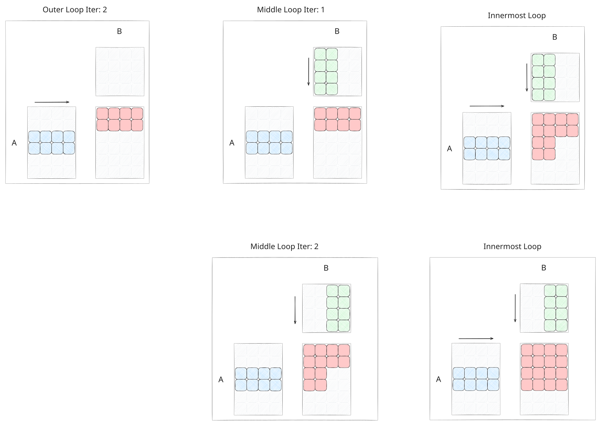
策略 2：沿 维度同时载入 A 与 B（最优）
- 沿内侧 维度载入 与 的「切片」
- 每个片段恰好使用一次
- 片段强度：每次内存传输 1.62 次计算——几乎是策略 1 的两倍
- 这正是 Cutlass 采用的做法
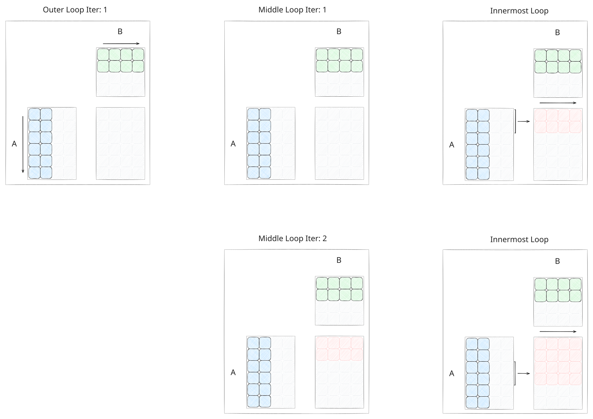
我们按所用的 mma 指令 m16n8k16 来切分张量，即沿 k 维度切成宽度为 16 个元素（2 个片段）的切片 （上图所示即为此）。有些块已经完全在 RF 中、不需要从 SMEM 载入，比如 ——这些就保持原样。
块维度表
表 21 | 沿 k 维度切分后的子块 RF 形状
| 张量 | 格式 | 完整形状（片段） | 子块形状（片段） | 块数（片段） | mma 矩阵变量 |
|---|---|---|---|---|---|
| 行主序 | |||||
| 行主序 | |||||
| 列主序 |
寄存器压力
这也能帮我们显著降低前面讨论过的寄存器压力。这是不同块大小时的编译期溢出情况。
表 22 |
| 是否溢出 | 栈帧（字节） | 溢出存储（字节） | 溢出载入（字节） | 寄存器 | |
|---|---|---|---|---|---|
| (128, 64, 32, 4) | 否 | 0 | 0 | 0 | 212 |
| (128, 64, 64, 4) | 否 | 0 | 0 | 0 | 242 |
| (128, 128, 32, 4) | 是 | 304 | 356 | 324 | 255 |
| (128, 128, 64, 4) | 是 | 728 | 960 | 836 | 255 |
| (128, 128, 128, 4) | 是 | 1456 | 2148 | 1808 | 255 |
如果我们希望更大的块大小能用于自动调优（Kernel 7），就必须大幅降低寄存器压力。
有些配置在栈上溢出将近 1.5 KB！仅 (128, 128, 64, 4) 这一个配置就产生了 2148 字节的溢出存储与 1808 字节的溢出载入。这么大的开销会堵塞内存流水线，让这些配置变得不可用。
寄存器溢出是什么造成的？当寄存器堆不够大时，编译器会把寄存器里的值溢出到 LMEM （L1 → L2 → DRAM）。这产生的开销会污染缓存、降低带宽、拖慢内存传输。
性能影响因情况而异：序篇／收尾阶段的溢出影响很小，而紧凑循环中的溢出会显著拖慢有效工作。 在算术强度高时，少量溢出有时能通过最优的指令调度被隐藏掉。
你可以配置 nvcc 按 kernel 输出这些细节。详见 nvcc 中与寄存器溢出相关的选项。
代码
我们把数组大小改成只容纳要存在 RF 中的子块数量。这只影响 、 与 。
uint32_t input[rows/8][cols/8];
// becomes
uint32_t input[rows/8][2];
为配合这一改动，我们对 warp_fragment_mma_f32_accum() 做了几处修改，并新增一个包装函数
matmul()，它在各子块上调用 warp_fragment_mma_f32_accum()。
// It's possible for K_fragments_A != K_fragments_B because either tensor can be buffered over sub-tiles.
template <typename value_t, const int M_fragments, const int N_fragments,
const int K_fragments_A, const int K_fragments_B,
typename accum_t = float>
__forceinline__ __device__ constexpr void warp_fragment_mma_f32_accum(
uint32_t (®s_A)[M_fragments][K_fragments_A],
uint32_t (®s_B)[N_fragments][K_fragments_B],
accum_t (®s_C)[M_fragments][N_fragments * N_REGS_PER_F32_ACCUM_FRAGMENT],
int A_col_fragment_offset = 0, int B_col_fragment_offset = 0) {
constexpr int K_iters = constexpr_min(K_fragments_A, K_fragments_B);
#pragma unroll
for (int k = 0; k < K_iters; k += MMA_K_FRAGMENTS_PER_ITER) {
#pragma unroll
for (int m = 0; m < M_fragments; m += MMA_M_FRAGMENTS_PER_ITER) {
#pragma unroll
for (int n = 0; n < N_fragments; n += MMA_N_FRAGMENTS_PER_ITER) {
mma_m16n8k16_f32_accum<value_t>(
regs_C[m][n * 2],
regs_C[m][n * 2 + 1],
regs_C[m + 1][n * 2],
regs_C[m + 1][n * 2 + 1],
regs_A[m][k + A_col_fragment_offset],
regs_A[m + 1][k + A_col_fragment_offset],
regs_A[m][k + 1 + A_col_fragment_offset],
regs_A[m + 1][k + 1 + A_col_fragment_offset],
regs_B[n][k + B_col_fragment_offset],
regs_B[n][k + 1 + B_col_fragment_offset],
regs_C[m][n * 2],
regs_C[m][n * 2 + 1],
regs_C[m + 1][n * 2],
regs_C[m + 1][n * 2 + 1]);
}
}
}
}
这是包装函数。不必太在意 GEMM 这个结构体，它只是保存每个矩阵以及整体 GEMM 的配置。
template <typename GEMM>
__device__ constexpr void matmul(typename GEMM::A_t &A, typename GEMM::B_t &B,
typename GEMM::C_t &C) {
// If ::load_entire_block_into_rf is set for either A_t or B_t, then
// we assume the block has already been loaded.
using A_t = typename GEMM::A_t; // Q or P
using B_t = typename GEMM::B_t; // K or V
constexpr int fragments_per_iter = 2;
// GEMM::TotalKFragments is
// - d_head / 8 for QK^T
// - B_c / 8 for PV
#pragma unroll
for (int k = 0; k < GEMM::TotalKFragments; k += fragments_per_iter) {
// Load fragments along K dimension (2 at a time)
// Q is pre-loaded, P is computed in RF - only load if needed
if constexpr (!A_t::load_entire_block_into_rf) {
A.copy_SM2RF(k); // Load Q fragments from SMEM
}
// Always load K/V fragments from SMEM (2 fragments per iteration)
B.copy_SM2RF(k);
// Calculate column offsets for accessing the right fragment data
int A_col_offset = A_t::load_entire_block_into_rf ? k : 0;
int B_col_offset = B_t::load_entire_block_into_rf ? k : 0;
// Perform outer product: each A row × each B column
// This gives optimal fragment reuse compared to row-by-row approach
warp_fragment_mma_f32_accum(A.data(), B.data(), C.data(),
A_col_offset, B_col_offset);
}
}
寄存器用量对比
寄存器压力的下降在所有配置下都很显著：
主要改进：
- 当前配置 (64,64)：242 → 207 个寄存器
- 参考配置 (128,32)：304 → 0 个寄存器，消除了所有溢出，使该配置变得可用
- 溢出最严重的 (128,64)：2208 → 1312 字节溢出存储（减少 40.6%）
最有意义的收获是让 (128, 32, 4) 配置变得可行——这正是参考实现在 RTX 3090 上使用的配置。不过 像 (128, 64, 4) 这样的大配置仍需更多工作才能用起来。
表 23 |
| 是否溢出 | 栈帧 | 溢出存储 | 溢出载入 | 使用的寄存器 | |
|---|---|---|---|---|---|
| (128, 64, 32, 4) | 否 | 0 | 0 | 0 | 212 → 168 |
| (128, 64, 64, 4) | 否 | 0 | 0 | 0 | 242 → 207 |
| (128, 128, 32, 4) | 是 → 否 | 304 → 0 | 356 → 0 | 324 → 0 | 255 |
| (128, 128, 64, 4) | 是 | 728 → 272 | 964 → 336 | 840 → 304 | 255 |
| (128, 128, 128, 4) | 是 | 1360 → 840 | 2208 → 1312 | 1868 → 1120 | 255 |
性能
片段交错达成了一个重要里程碑：参考性能的 100.0%。把 SMEM → RF 载入与计算交错，并采用最优的 片段复用（强度 1.6x 对 0.89x），使我们在整个优化之旅中首次越过参考实现的性能线。
Kernel 5：SMEM → RF 载入的双缓冲
正如我们在 Kernel 3 中双缓冲了 GMEM → SMEM 传输，我们也可以双缓冲 SMEM → RF 的片段载入。 这有助于隐藏 ldmatrix 指令延迟，代价是更高的寄存器压力。
为此，我们沿 k 维度为额外一组片段分配寄存器（ 是 ， 是 ）。然后在矩阵乘法循环之前，把第一组片段载入第一组寄存器。循环内部，在对当前组操作之前先载入下一组，这样等张量核心处理完当前组片段时，下一组应该已经载入好了。迭代之间，我们交换所载入的寄存器组。
概念上与上一个 kernel 相同，只是这里作用域是 warp 级而非 CTA 级，且每个操作都是 warp 同步的， 所以不需要显式屏障。
代码改动
存储
我们为所有 RF 矩阵增加一个缓冲区数量的维度。
对 、 与
uint32_t input[rows/8][2];
// becomes
uint32_t input[2][rows/8][2];
对
uint32_t input[rows/8][cols/8];
// becomes
uint32_t input[1][rows/8][cols/8];
对 与
float accum[n/8][m/4];
// becomes
float accum[1][n/8][m/4];
matmul
template <typename GEMM>
__forceinline__ __device__ constexpr void matmul(
typename GEMM::A_t &A,
typename GEMM::B_t &B,
typename GEMM::C_t &C) {
// If tensor_t::load_entire_block_into_rf is set for either A_t or B_t, then
// we assume the block has already been loaded.
using A_t = typename GEMM::A_t; // Q or P
using B_t = typename GEMM::B_t; // K or V
constexpr int fragments_per_iter = 2;
// This is 1 for Q and 0 for P.
constexpr int A_stage_toggle = A_t::mma_load_stages - 1;
constexpr int B_stage_toggle = B_t::mma_load_stages - 1; // 1 for K & V
int A_stage = 0;
int B_stage = 0;
// True for Q, False for P (calculated & stored in RF)
if constexpr (!A_t::load_entire_block_into_rf) {
A.copy_SM2RF(A_stage, 0); // copy first Q sub-tile
}
B.copy_SM2RF(B_stage, 0); // copy first K or V sub-tile
// GEMM::TotalKFragments is
// - d_head / 8 for QK^T
// - B_c / 8 for PV
#pragma unroll
for (int k = 0; k < GEMM::TotalKFragments; k += fragments_per_iter) {
int k_load_fragment = k + fragments_per_iter;
if (k_load_fragment < GEMM::TotalKFragments) {
// True for Q, false for P.
if constexpr (!A_t::load_entire_block_into_rf) {
A.copy_SM2RF(A_stage_toggle ^ A_stage, k_load_fragment);
}
B.copy_SM2RF(B_stage_toggle ^ B_stage, k_load_fragment);
}
int A_col_offset = A_t::load_entire_block_into_rf ? k : 0;
int B_col_offset = B_t::load_entire_block_into_rf ? k : 0;
// Perform sub-tile-wise outer products.
warp_fragment_mma_f32_accum(A.data(A_stage), B.data(B_stage), C.data(0),
A_col_offset, B_col_offset);
A_stage ^= A_stage_toggle;
B_stage ^= B_stage_toggle;
}
}
性能
SMEM → RF 双缓冲在当前配置（）下显示出轻微的性能回退，从参考实现的 100% 降到 99.6%。不过这个回退是配置相关的——最终 kernel 中其他块配置最多有 4% 的提升，使这项优化对全面的自动调优不可或缺。
可选：剖析分析
warp 停顿的分解显示出一些回退：
表 24 |
| 停顿 | Kernel 4 | Kernel 5 | 变化 |
|---|---|---|---|
| barrier | 3.66% | 4.37% | +0.71% |
| mio_throttle | 2.18% | 2.40% | +0.22% |
mio_throttle 停顿（+0.22%）
双缓冲产生了更密集的内存指令序列，更快地占满内存指令队列（mio）。
看看 SASS 中 与 的 ldmatrix 块的开头。
Kernel 4 在 6 条 ldmatrix 指令之间穿插了 19 个算术操作，提供了天然的间隔，避免队列饱和：
// ...
LDSM.16.M88.4 R88, [R177+0x4000] ; // 6 ldmatrix instructions
LDSM.16.M88.4 R148, [R157] ;
LDSM.16.M88.4 R112, [R172+0x4000] ;
LDSM.16.M88.4 R36, [R174+0x4000] ;
LDSM.16.M88.4 R92, [R183+0x4000] ;
LDSM.16.M88.4 R144, [R155] ;
LDGDEPBAR ;
MOV R128, R88 ; // 19 instructions between
IMAD.MOV.U32 R129, RZ, RZ, R90 ;
LOP3.LUT R88, R156, 0x7, R5, 0x78, !PT ;
MOV R90, R89 ;
IMAD.SHL.U32 R178, R88, 0x8, RZ ;
MOV R96, R112 ;
IMAD.MOV.U32 R97, RZ, RZ, R114 ;
MOV R141, R115 ;
HMMA.16816.F32 R104, R148.reuse, R90, RZ ;
LOP3.LUT R176, R178.reuse, 0x800, R159, 0xfe, !PT ;
IMAD.MOV.U32 R140, RZ, RZ, R113 ;
LOP3.LUT R175, R178, 0x1000, R159, 0xfe, !PT ;
IMAD.MOV.U32 R133, RZ, RZ, R38 ;
SHF.L.U32 R176, R176, 0x1, RZ ;
IMAD.MOV.U32 R137, RZ, RZ, R94 ;
SHF.L.U32 R175, R175, 0x1, RZ ;
IMAD.MOV.U32 R38, RZ, RZ, R37 ;
LOP3.LUT R188, R178, R159, RZ, 0xfc, !PT ;
LDSM.16.M88.4 R88, [R176+0x4000] ; // next ldmatrix
另一方面，Kernel 5 在原有 6 条的基础上又前置了一条 ldmatrix，且在下一个内存操作之前只执行 5 条指令，造成更大的队列压力：
// ...
LDSM.16.M88.4 R92, [R192+0x4000] ; // 7 ldmatrix instructions
LDSM.16.M88.4 R144, [R159] ;
LDSM.16.M88.4 R128, [R179+0x4000] ;
LDSM.16.M88.4 R88, [R183+0x4000] ;
LDSM.16.M88.4 R36, [R181+0x4000] ;
LDSM.16.M88.4 R148, [R156] ;
LDSM.16.M88.4 R132, [R186+0x4000] ;
LDGDEPBAR ;
IMAD.MOV.U32 R137, RZ, RZ, R94 ; // only 5 instructions
MOV R94, R93 ;
MOV R136, R92 ;
HMMA.16816.F32 R104, R144.reuse, R94, RZ ;
LDSM.16.M88.4 R92, [R195+0x4000] ; // next ldmatrix
这使得 与 载入造成的 mio_throttle 停顿占总停顿的比例从 47.6% 升到 50.2%。
barrier 停顿增加（+0.71%）
屏障停顿的增加更为复杂，与 mio_throttle 瓶颈没有直接关系，尽管内存指令队列压力可能部分起了 作用。它更多反映的是指令模式变化时编译器调度策略的广泛调整，以及 Ampere 微架构中复杂的 warp 调度交互。
小结
我们成功实现了 Cutlass 的核心 GEMM 优化，在 RTX 3090 上达到了参考性能的 100%。我们的 kernel 现在具备：
- GMEM → SMEM 层面的双缓冲，减少 GMEM 载入停顿
- 片段交错，增加内存传输与计算的重叠并降低寄存器压力
- SMEM → RF 的双缓冲
下一篇
在第 6 部分中，我们将突破 100%，在 RTX 3090 上比参考实现快约 1.5%。我们将处理最后两项优化：
- 融合浮点指令以减少 FP 指令数
- 自动调优，在配置空间中系统地搜索性能最好的配置
脚注
引言
在上一部分中，我们实现了来自 CUTLASS GEMM 库的三项主要优化： 块的预先载入、带片段交错的子块切分，以及双缓冲。这些技巧帮助我们把内存传输与计算重叠起来， 在 RTX 3090 上达到了参考性能的 99.6%。
本部分我们将实现最后两项优化：
- 浮点指令融合，用的是官方实现中的一个巧妙做法（Kernel 6）
- 自动调优，用于寻找最优 kernel 配置（Kernel 7）
到结束时，我们将略微超过官方实现，达到参考吞吐的 101.5%。
Kernel 6：提升 FP32 吞吐
我们之前的优化都集中在张量操作上，看 roofline 图可以发现，我们现在已经在 RTX 3090 上触到了 矩阵乘法的 FLOPs/s 峰值。要进一步提升，就得去看别的瓶颈。
附注：roofline 图
roofline 图展示了三种不同的算术强度，其中 L2 的值与我们的 kernel 最相关：
- L1 强度看起来偏高得不自然：
- 我们用带
.cg选项的 cp.async 从 GMEM 拷到 SMEM，绕过了 L1 缓存 - 只有 从 SMEM 到 GMEM 的传输（以及任何寄存器溢出）会计入 L1 流量
- DRAM 强度只包含：
- 从主存的初始数据载入
- 被逐出的扇区（被挤出、需要重新载入的缓存行）
- 这给出的是「最好情况」下的内存带宽场景
- L2 强度对我们的分析最准确：
- 它捕获了所有内存传输，因为每个 CTA 从 L2 搬运的数据量相同
- 没有 L1 缓存意味着 L2 能看到我们全部的内存流量
- 最能代表我们 kernel 真实的算术强度
寻找可改进之处
既然张量核心利用率已经拉满，我们来看看还有哪些操作消耗了可观的算力周期。看注意力公式：
我们可以把操作分成两类：
- 矩阵乘法：在张量核心上对 FP16/BF16 值执行
- softmax 操作：在标准浮点单元上用 FP32 执行
张量核心已经饱和，那么提升 FP32 softmax 性能就成了下一个优化目标。
在 softmax 中融合浮点乘法与加法
我们可以用融合乘加（FFMA）指令——它把 d = a * b + c 合并成一条指令——来减少 softmax 计算中的
指令数。我们来看看在 warp 层级每个 KV 块执行了多少条指令。
回忆一下，每个 warp 把矩阵片段存放在 的线程网格上。令
目前我们的 softmax 实现显式地把 乘以 ，这需要 条专用指令（第 1 行）。我们来看看计算代价。
注意：右侧表达式显示每一行的指令数（加法、乘法、取指数、以及取最大／比较操作）：
合计每块 条指令。
官方实现的优化：与其单独缩放 ，我们把缩放与减法一起融合进指数参数，用一条 FFMA（融合乘加）完成。做法是：
- 缩放最大值（第 2' 行）：计算 ，多出 条指令
- 融合指数参数（第 3 行）：在取指数之前用一条 FFMA 算出
- 更新缩放因子（第 4 行）：调整 与 计算所用的缩放
*表示该行有改动。
这种优化后每块只需 条指令。
把快速指数显式化
我们当前代码其实已经用了快速指数近似——expf() 内部就是借助恒等式
用 exp2f() 实现的。我们把这个近似在代码中显式化，并把 因子直接并入缩放系数：
注意指令数并没有变，我们只是把已有的快速近似显式写了出来。
最终算法
参考实现用了略有不同的版本：。尽管相比直接存 要多用 条指令，这个做法的性能略好一些。我们也采用这种做法，最终为 条指令。
数值精度
Kernel 6 的这些改动略微改变了浮点误差特性：
- 通过 FMA 融合乘法与加法通常能减少舍入误差。
- 把 logits 按 缩放并用
exp2f()近似指数，会略微增大近似误差。
这是否可接受取决于你的使用场景。如果你的应用对数值误差特别敏感，在采纳任何改动之前，你可能 需要更深入地考察这些权衡及其后果。
小结
通过把缩放操作与指数计算融合，我们减少了每块的 softmax 指令数：
- 之前： 条
- 之后： 条
相当于每个 warp 块减少 条指令，对我们当前块大小 而言总减少量为 。
代码
为实现这一点，我们改两个函数：
scale_l_O()exponentiate_tensor()
我们不再调用 scale_S_accum()，因为它已经被折叠进去了。
关于缩放与 exp2f 的说明：在代码中，softmax_scale 就是
。为可读性我们在数学上仍用自然指数，
但用恒等式 通过 exp2f 实现指数，
这样 FFMA 就能直接产出最终的指数参数。
template <int QO_fragments, int d_head_accum_fragments, typename accum_t = float>
__forceinline__ __device__ constexpr void
scale_l_O(
accum_t (&m_next)[QO_fragments],
accum_t (&m_cur)[QO_fragments],
accum_t (&l)[QO_fragments],
accum_t (&O_accum)[QO_fragments][d_head_accum_fragments],
accum_t softmax_scale
) {
#pragma unroll
for (int q = 0; q < QO_fragments; ++q) {
accum_t scale = exp2f((m_cur[q] - m_next[q]) * softmax_scale);
m_cur[q] = m_next[q];
l[q] *= scale;
for (int d_head = 0; d_head < d_head_accum_fragments; ++d_head) {
O_accum[q][d_head] *= scale;
}
}
}
template <int QO_fragments, int KV_accum_fragments,
typename accum_t = float>
__forceinline__ __device__ constexpr void
exponentiate_tensor(
accum_t (&S_accum)[QO_fragments][KV_accum_fragments],
accum_t (&m)[QO_fragments],
accum_t softmax_scale
) {
#pragma unroll
for (int q = 0; q < QO_fragments; ++q) {
accum_t max_scaled = m[q] * softmax_scale;
#pragma unroll
for (int k = 0; k < KV_accum_fragments; ++k) {
S_accum[q][k] = exp2f(S_accum[q][k] * softmax_scale - max_scaled);
}
}
}
性能
我们的浮点指令融合优化把吞吐从 67.11 TFLOPs 略微提升到 67.23 TFLOPs，达到参考性能的 99.9%。
剖析结果
通过把 softmax 的浮点指令数减少 11.1%，我们相应地把浮点流水线利用率降低了 12.41%。
浮点流水线压力的下降还带来一个附带好处：张量核心利用率略微提升 +0.17%，从 47.11% 升到 47.19%。
Kernel 7：自动调优
到目前为止，我们一直用固定的块配置 来优化 kernel。然而我们实现的每一项改进都代表一个可配置组件，可以独立开关。
自动调优是系统性地探索这个配置空间、寻找最优编译期参数的标准做法。我们的配置空间包括：
struct FlashForwardKernelConfig {
const int d_head; // [128]
const int B_r; // [64, 128]
const int B_c; // [32, 64]
const int n_warps; // [4]
const bool async_copy; // always true. this was for testing purposes.
// Kernel #2
const bool swizzled;
// Kernel #3
const bool eager_load_blocks;
// Kernel #4
// This can be either 0 or 2.
// If it is:
// - 0: load the entire tile into the RF at once before executing any matmuls
// - additionally for Q, persist without reloading.
// - 2: load sub-tiles 2 fragments wide at a time
const int Q_mma_load_K_fragments;
const int K_mma_load_K_fragments;
const int V_mma_load_K_fragments;
// Kernel #5
const bool mma_double_buffer_loads;
// Kernel #6: fusing FP multiplication and addition instructions
const bool optimized_softmax;
}
每增加一项优化，配置空间就指数级增长，所以为了让自动调优可行，我们先把已知次优的配置过滤掉。 这包括：
- 不使用 swizzling 的 kernel
- 寄存器溢出过多的 kernel
配置记号
为清晰起见，我们用一种标准化格式来描述 kernel 配置：
({d_head}, {B_r}, {B_c}, {n_warps}): {async}+{eager}+{swizzled}+load_{q_fragments}_{k_fragments}_{v_fragments}_fragments+{buffer}+{opt_softmax}
块配置与片段数总是会出现，其他选项只在启用时才列出。
最优配置结果
自动调优找出的最优配置是
(128, 64, 64, 4): async+eager+swizzled+load_0_2_0_fragments+buffer+opt_softmax
它把我们的性能推到了官方实现之上，达到 101.5%！
Kernel 6 与 Kernel 7 对比
Kernel 6 与 Kernel 7 的主要差别在于：在 Kernel 7 中 在整个主循环期间常驻 RF，因此每个 warp 只从 SMEM → RF 载入 一次。这减少了每轮迭代执行的 ldmatrix 指令数，并带来 SMEM 相关 warp 停顿的明显下降：
表 25 |
| 停顿 | Kernel 6 | Kernel 7 | 变化 |
|---|---|---|---|
| barrier | 4.82% | 2.72% | -2.11% |
| mio_throttle | 2.46% | 1.95% | -0.51% |
| short_scoreboard | 1.94% | 1.70% | -0.24% |
块大小简要分析
其他块大小下的最优配置，以及它们与最优配置的对比。注意：从现在起所有 kernel 都以
async+eager+swizzled 配置，为便于阅读我省去 async+eager+swizzled+ 前缀。
表 26 |
| TFLOPs（seqlen=4096） | 相对 Kernel 7 的性能 | |
|---|---|---|
| (128, 64, 64, 4): load_0_2_0_fragments+buffer+opt_softmax | 68.31 | 100.0% |
| (128, 64, 32, 4): load_2_2_0_fragments | 67.39 | 98.64% |
| (128, 128, 32, 4): load_2_2_0_fragments+buffer+opt_softmax | 67.36 | 98.61% |
| (128, 128, 64, 4): load_2_2_0_fragments+opt_softmax | 54.26 | 79.42% |
占用率表：
表 27 |
| 每线程寄存器数 | 每 CTA 的 SMEM | 每 SM 的 warp 数 | |
|---|---|---|---|
| (128, 64, 64, 4) | 229 | 48KiB | 8 |
| (128, 64, 32, 4) | 168 | 32KiB | 12 |
| (128, 128, 32, 4) | 255（溢出 0B） | 48KiB | 8 |
| (128, 128, 64, 4) | 255（溢出 272B） | 64KiB | 4 |
主要观察：
- (64, 32) 与 (128, 32) 的 TFLOPs/s 与 (64, 64) 相差不远
- (64, 32) 每 SM 可以放下 3 个 CTA，但对我们这个负载，2 个 CTA 就足以让 RTX 3090 的张量核心饱和
- (128, 64) 每 SM 只能放 1 个 CTA，且受寄存器溢出拖累（每线程 272B），性能很差
在 A100 上的性能
至此我们一直只在 RTX 3090 上做基准测试。我们优化后的 kernel 在 A100 上表现如何？
表 28 |
| TFLOPs（seqlen=4096） | 相对参考实现的性能 | |
|---|---|---|
| (128, 64, 64, 4): load_0_2_0_fragments+opt_softmax | 149.71 | 80.31% |
| (128, 128, 32, 4): load_2_2_2_fragments+buffer | 142.82 | 76.62% |
| (128, 64, 32, 4): load_2_2_2_fragments+opt_softmax | 135.24 | 72.55% |
| (128, 128, 64, 4): load_2_2_2_fragments+opt_softmax | 130.14 | 69.81% |
| 参考实现 | 186.41 | 100.00% |
A100 上的性能回退
我们从在 RTX 3090 上超过参考性能（101.5%），变成在 A100 上只有约 80%。
这 20% 的性能差距说明，我们需要去看 A100 特有的瓶颈才能提升性能。
小结
浮点指令融合（Kernel 6）
- 把注意力 logits 的缩放与在线 softmax 中的减最大值融合，减少 11.1% 的浮点指令
- 在 RTX 3090 上达到参考性能的 99.9%
自动调优（Kernel 7）
- 系统探索配置空间以寻找最优参数
- 最佳配置：(128, 64, 64, 4)， 常驻 RF
- 超过参考性能：在 RTX 3090 上达到 101.5%
关键发现
- 同一个 kernel 在 A100 上只有 80.3%，凸显出针对架构做优化的必要性
下一步
在第 7 部分中，我们将在 A100 上剖析 Kernel 7，找出 RTX 3090 与 A100 之间显著性能差距的成因。
在第 6 部分中，我们通过浮点指令融合与自动调优，在 RTX 3090 上 超过了参考性能，达到 101.5%。但当我们把同一个 kernel 拿到 A100 上运行时，性能掉到了只有 80.3%——从成功到明显欠优，整整 20 个百分点的落差。
是什么造成这两块同代 Ampere GPU 之间如此大的性能差距？
在 A100 上剖析 Kernel 7
我们来比较参考 kernel 与 Kernel 7 最优配置的 Nsight Compute 剖析指标。我们考察三个关键方面： 计算流水线利用率、指令数，以及 A100 的吞吐特征如何放大我们的指令开销。
这些剖析是在 seq_len=4096、d_head=128 下做的。
计算流水线利用率
先看张量、FMA（主要为浮点）与 ALU（主要为整数）三条流水线的利用率1。数字立刻暴露出一个问题：我们的张量流水线只在 kernel 执行期的 60.5% 处于活跃状态，而参考实现是 75.4%。与此同时，我们的标量流水线活跃得多：
- FMA：29.2% 对 20.5%
- ALU：21.2% 对 13.1%
- 合计高出 50%（50.4% 对 33.6%）
周期数讲的故事更刺眼。两个 kernel 执行的张量流水线周期数大致相同，但 Kernel 7 的标量流水线 （FMA 与 ALU）各自运行的时长都相当于参考实现中两者之和。我们做的矩阵乘法工作量一样，却把 远多得多的时间花在标量操作上。
RTX 3090：情况完全不同
RTX 3090 又如何？画面完全不同。Kernel 7 的张量利用率其实略高于参考实现（48.0% 对 47.2%）。 标量流水线活动也呈现与 A100 相似的模式——合计高 53%（14.2% 对 9.27%）——但影响轻得多。
消费级 CUDA GPU 的张量吞吐
在消费级 GPU 上，BF16/FP16 输入配 FP32 输出的矩阵乘法吞吐2被人为地限制在半速， 而准专业级 GPU（Quadro/Pro 系列）不受此限。所以「有效」的流水线利用率可能接近报出指标的两倍 ——Kernel 7 为 95.9%，参考实现为 94.5%。
按这些有效值看，张量流水线已接近其吞吐上限。这引出一个关键问题：为什么我们的 kernel 在 A100 上 张量利用率明显更低，在 RTX 3090 上却更高，而两者都是与各自的参考 kernel 相比？
标量指令开销
张量流水线利用率把我们指向了问题所在，但还需要挖得更深。为什么 FMA 与 ALU 流水线这么活跃？ 我们来比较我们 kernel 与参考实现的实际指令数，量化这份开销。
块配置
虽然我们性能最好的配置是 ，这里我们展示 配置，以便与参考 kernel 做更公平的指令数对比。不同配置下的指令开销模式是相似的。
我们的 kernel 执行的这类指令明显更多：
- IMAD：整数乘加
- LOP3.LUT：三操作数按位逻辑运算
- MOV：寄存器拷贝
- SHF：位移
图中没画出的还有 CS2R，它用于拷贝 RZ 零寄存器这类的特殊寄存器。参考 kernel 一条都不执行这些
指令，而我们会执行——这是另一个开销来源，我们会在第 8 部分中
消除它。
指令修饰符
这些原始指令计数只说出了故事的一部分。像 IMAD 这样的指令通过修饰符承担多种用途。例如 IMAD 的 变体包括：
- IMAD.MOV.U32（寄存器拷贝）
- IMAD.SHL.U32（左移）
- IMAD.IADD（整数加法）
类似地，LOP3.LUT 通过查找表实现任意三输入布尔运算（文档）。
带修饰符的指令剖析
Nsight Compute 默认按基础操作码（如 IMAD）显示指令数，不区分修饰符。一个很高的 IMAD 计数可能 主要来自 IMAD.MOV.U32 这样的寄存器拷贝，而非真正的乘法——这两者的性能含义完全不同。
使用 sass__inst_executed_per_opcode_with_modifier_all 指标来剖析带修饰符的指令，从而细致
地看出 GPU 把时间花在哪里。默认指标 sass__inst_executed_per_opcode 会把每个基础操作码的
所有变体聚合在一起。
看修饰符的分解就揭示出真正的问题。多数 IMAD 指令其实是寄存器拷贝（IMAD.MOV.U32）或左移位 （IMAD.SHL.U32），而不是融合整数乘加。这些操作增加开销，却对真正的 GEMM 计算毫无贡献。
与参考 kernel 相比，我们执行的：
- 寄存器拷贝（IMAD.MOV.U32 + MOV）是它的 11.6 倍
- 逻辑运算（LOP3.LUT）是它的 216 倍
- 左移指令（IMAD.SHL.U32 + SHF.L.U32）是它的 23.8 倍
合计起来，标量指令约为其 2 倍，总指令数多出 38.7%。
数据依赖指令
多出来的指令数量已经够令人担忧，但这还不是全部。真正关键的问题是，这些标量指令中有许多造成了 数据依赖，从而阻塞了真正重要的操作：cp.async、ldmatrix 与 mma。
为量化这一点，我们统计主循环中那些为 cp.async、ldmatrix 与 mma 计算所用值的、互不相同的标量 指令。这些是写后读（RAW）冒险——即一条指令必须等另一条完成后才能读取所需寄存器值的情形。
SASS 中这种依赖的一个例子：
SHF.L.U32 R176, R176, 0x1, RZ ;
...
LDSM.16.M88.4 R32, [R176+0x4000] ; // ldmatrix
ldmatrix 指令必须等 SHF.L.U32 完成才能执行，因为它需要 R176 里的值。
数字显示出问题的严重性：
表 29 |
| 配置 | Kernel 7 | 优化后（K16） | 倍数 |
|---|---|---|---|
| 197 | 29 | 6.8x | |
| 238 | 21 | 11.3x |
这些依赖指令中的每一条都必须先完成，它依赖的内存或张量操作才能开始。它们给关键路径增加延迟、 消耗寄存器资源，造成停顿，让我们无法让张量核心保持满负荷。这就是为什么张量核心在 kernel 执行 期的很大一部分时间里闲着。
为什么 A100 受害更深：吞吐比
我们把发现综合一下：
- 在 A100 上，我们的张量流水线利用率远低于参考实现；而在 RTX 3090 上略高
- 在两块设备上，标量流水线利用率（FMA+ALU）都比参考实现高 50%
- 我们执行的标量指令约为 2 倍，造成依赖的指令多 6.8–11.3 倍
为什么这份指令开销会让 A100 上的性能严重受损，而 RTX 3090 不受影响？答案在于两者悬殊的吞吐 特征：
表 30 |
| 设备 | mma TFLOPs/s（16 位输入，32 位累加） | FP32 TFLOPs/s | mma / FP32 之比 |
|---|---|---|---|
| A100 | 311.84 | 19.5 | 16x |
| RTX 3090 | 71 | 35.6 | 2x |
A100 的张量吞吐是 RTX 3090 的 4.5 倍，但 FP32 吞吐只有其一半。这造成了天差地别的张量与 FP32 之比：A100 上为 16x，RTX 3090 上为 2x。
这种失衡的比例放大了我们标量依赖问题的后果。单看任何一个因素都解释不了性能差距——关键在于 两者的相互作用：
A100（16x 比例）：张量核心处理工作的速度是标量单元准备数据的 16 倍。当标量依赖阻塞张量操作时， 高吞吐的张量核心只能闲置等待。这种巨大的吞吐失衡意味着我们无法隐藏这份延迟——并行发生的标量 计算根本不足以与张量操作重叠。
RTX 3090（2x 比例）：张量与标量吞吐更为均衡。即便面对同样的标量依赖，较低的张量吞吐也给了 更多时间来化解它们。标量开销可以部分隐藏在张量操作延迟之后，而更高的 FP32 吞吐意味着在张量 核心等待期间能完成更多有用工作。
结果是：我们这种标量偏重的指令组合在 A100 上造成严重瓶颈，张量核心大部分时间都在闹数据荒。 RTX 3090 更均衡的架构则能更好地容忍同样的开销。
想更深入地了解这一切在硬件层面如何运作，可以看 附录 A — Ampere 微架构。
块大小限制
吞吐失衡解释了性能差距的大部分，但还有第二个关键因素：Kernel 7 无法高效使用在 A100 上表现最好 的那些块配置。
A100 的参考 kernel 使用 。要理解这为什么重要，我们来看看最终优化后的 kernel（Kernel 16）在不同块大小下的表现：
表 31 |
| Kernel 迭代 | 相对 的 TFLOPs | ||
|---|---|---|---|
| 16 | 128 | 64 | 100.0% |
| 16 | 128 | 32 | 89.3% |
| 16 | 64 | 64 | 84.1% |
| 16 | 64 | 32 | 83.4% |
即便把所有优化都用上，——Kernel 7 的最优配置——也只能达到 性能的 84.1%。Kernel 7 的性能上限从根本上受限于它无法高效使用更大的块。
为什么 Kernel 7 用不了更大的块？
Kernel 7 在 下其实表现更差：
表 32 |
| Kernel 迭代 | 相对 的 TFLOPs | ||
|---|---|---|---|
| 7 | 64 | 64 | 100.0% |
| 7 | 128 | 32 | 95.4% |
| 7 | 64 | 32 | 90.3% |
| 7 | 128 | 64 | 86.9% |
罪魁祸首：寄存器溢出。在 下，Kernel 7 每线程溢出 272 字节寄存器。相当一部分执行时间被昂贵的本地内存流量吃掉了。
表 33 |
| 每线程寄存器数 | 每 CTA 的 SMEM | 每 SM 的 warp 数 | |
|---|---|---|---|
| (64, 64, 4) | 229 | 48KiB | 8 |
| (64, 32, 4) | 168 | 32KiB | 12 |
| (128, 32, 4) | 255（溢出 0B） | 48KiB | 8 |
| (128, 64, 4) | 255（溢出 272B） | 64KiB | 4（RTX 3090）8（A100） |
为什么 RTX 3090 没暴露这个问题？
两项硬件约束在 RTX 3090 上把这些掩住了：
- SMEM 限制：RTX 3090 每 SM 100KB 的 SMEM 本来也跑不了有足够占用率的
- 本来就是张量受限：张量流水线利用率已接近峰值（有效值约 96%），更大的块也不会有多少帮助
A100 的 164KB SMEM 让更大、更高效的配置成为可能——但 Kernel 7 过高的寄存器用量使它无法利用 这些配置。
如果你对块大小如何影响指令模式与性能感兴趣，可以看 附录 B — 块大小配置。
小结
我们的分析揭示了为什么 Kernel 7 在 RTX 3090 上能达到参考性能的 101.5%，而在 A100 上只有 80.3%。
核心问题
标量指令开销：Kernel 7 执行的指令远多于必要：
- 标量指令是参考实现的 2 倍
- 造成依赖、阻塞 cp.async、ldmatrix 与 mma 的指令多 6.8–11.3 倍
- 总指令数多 38.7%
这些依赖指令给关键路径增加延迟，造成流水线停顿，使张量核心无法维持高利用率。
寄存器压力限制块大小：A100 的最优块配置 会让 Kernel 7 每线程溢出 272 字节寄存器。这些溢出需要昂贵的 内存访问，抵消了更大块的好处，迫使我们使用更小、更低的配置。
为什么 RTX 3090 把这些掩盖了
吞吐均衡：两块设备的吞吐特征差别悬殊：
- A100：mma 与 FP32 之比为 16x——张量核心在标量依赖化解期间闹饥荒
- RTX 3090：比例为 2x——标量开销部分隐藏在张量操作延迟之后
硬件约束：RTX 3090 自身的局限把问题盖住了：
- 每 SM 100KB SMEM 本来也跑不了有足够占用率的大块
- 张量流水线利用率已接近峰值（有效值约 96%），更大的块帮助有限
A100 的长处——4.5 倍的张量吞吐与对更大块的支持——恰恰暴露了我们 kernel 的低效：由于标量瓶颈， 我们喂不饱张量核心；由于寄存器压力，我们又用不上更大的块。
下一篇
在第 8 部分中，我们将通过 SASS 级分析追查这些多余寄存器拷贝、 位移与逻辑操作的来源。通过消除指令开销并降低寄存器压力，我们将显著缩小性能差距——在 A100 上 达到参考性能的 95.2%，比当前 80.3% 提升近 15 个百分点。
脚注
- 图中所示的指标等于 。各值之和可以超过 100%，因为不同流水线可以并行运行。 ↩
- FP16 输入配 FP16 输出不受影响。 ↩
引言
在第 6 部分中，我们改进 kernel 使其在 RTX 3090 上略微超过参考 kernel，但发现在 A100 上它只达到了参考实现的 80.3%。在第 7 部分 中，我们剖析了 Kernel 7，找出关键瓶颈：
- 标量指令过多：我们执行的标量指令约为参考 kernel 的 2 倍，造成依赖的指令多 6.8–11.3 倍。这些依赖阻塞了 cp.async、ldmatrix 与 mma 操作，迫使高吞吐的张量核心闲置。
- 寄存器压力限制块大小：Kernel 7 在 ——A100 上的最优块配置——每线程溢出 272 字节寄存器。这些昂贵的内存访问抵消了更大块的好处，迫使我们使用更小、更低的配置。
- 吞吐失衡放大问题：A100 相比 RTX 3090 有高得多的张量吞吐，但 FP32 吞吐更低。这种失衡的比例使我们的标量指令开销造成严重瓶颈——张量核心处理工作的速度远快于标量单元准备数据的速度。
本部分我们将通过四次 kernel 迭代系统性地消除这些不必要的指令：
- Kernel 8：实现跨步 swizzling，消除逻辑与位移指令，同时降低寄存器压力
- Kernel 9：优化片段存储，去除冗余的寄存器拷贝
- Kernel 10：移除 CS2R 指令并优化首轮 softmax 迭代
- Kernel 11：为 RF→SMEM 传输补完跨步 swizzling
到结束时，我们将获得 18.6% 的性能提升，从 149.71 TFLOPs（Kernel 7）提升到 177.40 TFLOPs （Kernel 11）。这让我们在 A100 上距离参考性能（186.4 TFLOPs）只有一步之遥。
Kernel 8：减少逻辑与位移指令以及寄存器用量
剖析 Kernel 7 时，我们注意到逻辑与位移指令过多。这些本不该出现在这里——我们跑的是浮点与张量 密集的负载。罪魁祸首是 LOP3.LUT、IMAD.SHL.U32 与 SHF.L.U32，它们通常出现在内存地址计算中。 我们深入汇编代码来验证这个猜测。
按操作类型归类指令
编译器常用不同指令实现相似目的。例如：
- 地址计算的某些部分既可能用 LEA 也可能用 IMAD
- IMAD.MOV.U32 指令的减少可能伴随 MOV 指令的增加
与其试图减少某条具体指令，不如把相关指令归为一组，努力削减它们的总和。
Kernel 7 的 SASS 检查
我们来看看 Kernel 7 的 SASS 代码片段（完整代码见此处），看这些指令出现在哪里。
注意这些逻辑与位移指令恰好出现在每次内存传输之前——它们在为 LDGSTS（cp.async）与 LDSM （ldmatrix）操作计算地址：
// ...
SHF.L.U32 R215, R215, 0x1, RZ ;
LOP3.LUT R178, R221, 0x1800, R8, 0xfe, !PT ;
LDGSTS.E.BYPASS.LTC128B.128 [R205+0x8000], [R28.64] ;
LOP3.LUT R30, R9, 0x7, R0, 0x78, !PT ;
IMAD.SHL.U32 R191, R191, 0x2, RZ ;
SHF.L.U32 R178, R178, 0x1, RZ ;
LDGSTS.E.BYPASS.LTC128B.128 [R206+0x8000], [R28.64+0x80] ;
IMAD.SHL.U32 R125, R30, 0x8, RZ ;
LDSM.16.M88.4 R24, [R207+0x4000] ;
LOP3.LUT R192, R125.reuse, R8, RZ, 0xfc, !PT ;
LDSM.16.M88.4 R68, [R183+0x4000] ;
LOP3.LUT R181, R125, 0x800, R8, 0xfe, !PT ;
SHF.L.U32 R192, R192, 0x1, RZ ;
LDSM.16.M88.4 R28, [R177+0x4000] ;
LOP3.LUT R176, R125, 0x1000, R8.reuse, 0xfe, !PT ;
SHF.L.U32 R181, R181, 0x1, RZ ;
LDSM.16.M88.4 R120, [R192+0x4000] ;
LOP3.LUT R173, R125, 0x1800, R8, 0xfe, !PT ;
IMAD.SHL.U32 R176, R176, 0x2, RZ ;
// ...
地址计算
这些指令确实在计算内存地址。对 LDSM 来说，第二个参数就是 SMEM 地址。这里有几个例子：
364: LOP3.LUT R192, R125.reuse, R8, RZ, 0xfc, !PT ;
367: SHF.L.U32 R192, R192, 0x1, RZ ;
371: LDSM.16.M88.4 R120, [R192+0x4000] ;
369: LOP3.LUT R176, R125, 0x1000, R8.reuse, 0xfe, !PT ;
373: IMAD.SHL.U32 R176, R176, 0x2, RZ ;
376: LDSM.16.M88.4 R156, [R176+0x4000] ;
指令的来源
这些地址计算复杂得远超必要。罪魁祸首是什么？我们在第 4 部分中 的 swizzling 实现。它虽然消除了存储体冲突，却让内存访问模式复杂到编译器无法高效优化。
我们对比 Kernel 7 的 swizzled 与非 swizzled 版本的指令数来检验这个猜测。
swizzled 与非 swizzled 对比
指令数
剖析指令数之后，我们的猜测得到证实。我们 kernel 的 swizzled 版本执行的这类指令是非 swizzled 版本的 12–42 倍。
寄存器用量
除了指令开销，swizzling 还带来另一个问题：寄存器压力。编译器必须分配寄存器来存放所有这些算出来 的内存地址。我们通过对比 swizzled 与非 swizzled 版本中的 LDGSTS 与 LDSM 操作，看看需要多少个 寄存器。
LDGSTS（GMEM → SMEM）
这是一条 LDGSTS 指令的例子
LDGSTS.E.BYPASS.LTC128B.128 [R19], [R4.64]
- 第一个寄存器是目的地址（SMEM，32 位）
- 第二个是源地址（GMEM，64 位）
- 源寄存器上的
.64修饰符表示它是 64 位值。 .BYPASS修饰符表示绕过 L1 缓存。
下面这些片段包含两个 kernel 中所有的 LDGSTS 指令。
LDGSTS.E.BYPASS.LTC128B.128 [R147], [R6.64]
... [R145+0x80], [R8.64]
[R145+0x400], [R10.64]
[R145+0x480], [R10.64+0x80]
[R145+0x800], [R12.64]
[R145+0x880], [R12.64+0x80]
[R145+0xc00], [R4.64]
[R145+0xc80], [R4.64+0x80]
[R147+0x4000], [R14.64]
[R145+0x4080], [R16.64]
[R145+0x4400], [R18.64]
[R145+0x4480], [R18.64+0x80]
[R145+0x4800], [R8.64]
[R145+0x4880], [R8.64+0x80]
[R145+0x4c00], [R6.64]
[R145+0x4c80], [R6.64+0x80]
[R147+0x8000], [R40.64]
[R145+0x8080], [R44.64]
[R145+0x8400], [R58.64]
[R145+0x8480], [R58.64+0x80]
[R145+0x8800], [R60.64]
[R145+0x8880], [R60.64+0x80]
[R145+0x8c00], [R56.64]
[R145+0x8c80], [R56.64+0x80]
[R147+0x4000], [R136.64]
[R145+0x4080], [R138.64]
[R145+0x4400], [R154.64]
[R145+0x4480], [R154.64+0x80]
[R145+0x4800], [R148.64]
[R145+0x4880], [R148.64+0x80]
[R145+0x4c00], [R164.64]
[R145+0x4c80], [R164.64+0x80]
LDGSTS.E.BYPASS.LTC128B.128 [R39], [R24.64]
... [R41], [R16.64]
[R43], [R26.64]
[R45], [R26.64+0x80]
[R39+0x800], [R28.64]
[R41+0x800], [R28.64+0x80]
[R47], [R24.64]
[R49], [R24.64+0x80]
[R39+0x4000], [R30.64]
[R41+0x4000], [R32.64]
[R43+0x4000], [R34.64]
[R45+0x4000], [R34.64+0x80]
[R39+0x4800], [R36.64]
[R41+0x4800], [R36.64+0x80]
[R47+0x4000], [R26.64]
[R49+0x4000], [R26.64+0x80]
[R194+0x8000], [R24.64]
[R198+0x8000], [R26.64]
[R200+0x8000], [R30.64]
[R202+0x8000], [R30.64+0x80]
[R203+0x8000], [R68.64]
[R204+0x8000], [R68.64+0x80]
[R205+0x8000], [R28.64]
[R206+0x8000], [R28.64+0x80]
[R194+0x4000], [R144.64]
[R198+0x4000], [R158.64]
[R200+0x4000], [R146.64]
[R202+0x4000], [R146.64+0x80]
[R203+0x4000], [R156.64]
[R204+0x4000], [R156.64+0x80]
[R205+0x4000], [R160.64]
[R206+0x4000], [R160.64+0x80]
SMEM 地址
目的寄存器（第一个参数）显示出鲜明差别。非 swizzled kernel 只用少数几个 SMEM 基地址，每个都 带着不同偏移被反复引用。由于偏移等距，编译器把它们直接编入指令。
swizzled 版本用到的寄存器多得多，每个都只被引用几次。下图量化了这一点：横轴是某个寄存器被使用 的次数，纵轴是具有该使用次数的寄存器数量。非 swizzled kernel 的 SMEM 地址只用了 2 个寄存器， 而 swizzled 版本用了 14 个——差别显著！
GMEM 地址
另一方面，swizzled 与非 swizzled 指令的 GMEM 寄存器差别不大。这是因为我们只对 SMEM 做 swizzling，不对 GMEM 偏移做。
LDSM
LDSM 呈现与 LDGSTS 相似的模式，但差别更为明显。这里第二个参数是 SMEM 地址。我会在下一个 kernel 那一节更详细地讲 LDSM。
...
LDSM.16.M88.4 R4, [R205+0x8000]
LDSM.16.M88.4 R140, [R178]
LDSM.16.M88.4 R156, [R205+0x9000]
LDSM.16.M88.4 R160, [R205+0x8020]
LDSM.16.M88.4 R168, [R178+0x20]
LDSM.16.M88.4 R164, [R178+0x1000]
LDSM.16.M88.4 R172, [R178+0x1020]
LDSM.16.M88.4 R8, [R205+0x9020]
LDSM.16.M88.4 R156, [R205+0x8040]
LDSM.16.M88.4 R168, [R178+0x40]
LDSM.16.M88.4 R160, [R205+0x9040]
LDSM.16.M88.4 R172, [R178+0x1040]
LDSM.16.M88.4 R8, [R205+0x8060]
LDSM.16.M88.4 R168, [R178+0x60]
...
...
LDSM.16.M88.4 R32, [R18] ;
LDSM.16.M88.4 R36, [R38] ;
LDSM.16.M88.4 R40, [R40] ;
LDSM.16.M88.4 R44, [R44] ;
LDSM.16.M88.4 R48, [R48] ;
LDSM.16.M88.4 R52, [R52] ;
LDSM.16.M88.4 R56, [R56] ;
LDSM.16.M88.4 R60, [R60] ;
LDSM.16.M88.4 R24, [R207+0x4000] ;
LDSM.16.M88.4 R68, [R183+0x4000] ;
LDSM.16.M88.4 R28, [R177+0x4000] ;
LDSM.16.M88.4 R120, [R192+0x4000] ;
...
LDSM 总计上，非 swizzled kernel 只用了 3 个寄存器——其中一个在 64 条不同指令中被使用！而 swizzled kernel 一共用了 40 个不同的寄存器。
小结
与 Kernel 7 的非 swizzled 版本相比，swizzled 版本
- 执行的逻辑与位移指令多得多
- 占用多得多的寄存器来存放 SMEM 地址
swizzling 的模式
为什么我们为 swizzling 执行了这么多指令、用了这么多寄存器？
如果我们考察指令依赖，会发现几乎所有地址偏移都在每轮迭代中被部分重算，即便基地址是共享的。 编译器无法优化我们的 swizzling 计算模式，于是分配额外寄存器来缓存中间值，并插入指令重算偏移。
解决方案：让 swizzling 更显式。如果我们能把底层模式暴露给编译器，它应该就能缓存偏移，而不是 在每次访问时重算。
我们回到 Kernel 2 中的 4 个存储体 swizzling 例子，那里我们用 4 个线程按列读取一个 (4, 4) 块。
我们来追踪每个线程的访问模式：
- 线程 0：列 0、1、2、3
- 线程 1：列 1、0、3、2
- 线程 2：列 2、3、0、1
- 线程 3：列 3、2、1、0
看出模式了吗？每个线程沿内存遵循一条独特但可预测的跨步。再仔细看：
- 每个线程的起始列等于线程 ID
- 在第 0 与第 2 次迭代之间、以及第 3 与第 4 次迭代之间，
- 线程 0 与 2 把下标加 1，而
- 线程 1 与 3 把下标减 1
- 在第 0 与第 2 次迭代之间，
- 线程 0 与 1 把下标加 2，而
- 线程 2 与 3 把下标减 2
这说明我们可以把每个线程的访问模式编码为一个跨步加上基偏移。如果我们能把这个模式暴露给编译器， 它应该就能缓存这些偏移，而不必每次访问都重算。
我们把模式形式化：
- 线程 从列 开始（基偏移）
- 迭代之间，列按 2 的幂变化：±1、±2、±4 等
- 符号取决于看的是哪个线程
这就给出一个跨步索引方案，每个线程有自己独特的跨步模式和基偏移：
表 34 |
| 线程 | 跨步 | 基偏移 |
|---|---|---|
| 0 | (2, 1) | 0 |
| 1 | (2, -1) | 1 |
| 2 | (-2, 1) | 2 |
| 3 | (-2, -1) | 3 |
我们可以把表推广到 (8, 8) 的内存块：
表 35 |
| 线程 | 跨步 | 基偏移 |
|---|---|---|
| 0 | (4, 2, 1) | 0 |
| 1 | (4, 2, -1) | 1 |
| 2 | (4, -2, 1) | 2 |
| 3 | (4, -2, -1) | 3 |
| 4 | (-4, 2, 1) | 4 |
| 5 | (-4, 2, -1) | 5 |
| 6 | (-4, -2, 1) | 6 |
| 7 | (-4, -2, -1) | 7 |
关键认识是：我们可以用位运算算出任何线程的跨步模式：
- 第 个跨步的量值是 （从右往左数）
- 符号由线程 ID 的第 位决定：为 1 则负，为 0 则正
我们看看这种基于位的跨步计算在实践中如何工作：
// Thread 3 has strides (-4, -2, -1) and base offset 3
int thread_id = 3;
int base_offset = 3; // Starting column for thread 3
// Calculate swizzled column for each iteration
for (int iter = 0; iter < 8; iter++) {
int col = base_offset;
// Apply stride based on iteration bits
if (iter & 4) col += (thread_id & 4) ? -4 : 4; // Bit 2: stride ±4
if (iter & 2) col += (thread_id & 2) ? -2 : 2; // Bit 1: stride ±2
if (iter & 1) col += (thread_id & 1) ? -1 : 1; // Bit 0: stride ±1
col = col & 7; // Wrap around within 8 columns
// Thread 3 accesses columns: 3, 2, 1, 0, 7, 6, 5, 4
}
扩展到更大的块：swizzle 区域
当列数或行数超过 8 时会怎样？由于只有 8 个存储体，swizzling 模式每 8 行／列重复一次。
我们把每个 8×128 字节的片段称为一个 swizzle 区域（swizzle region）。在每个区域内，线程遵循 我们刚才定义的同一访问模式。移到下一个区域时，我们只是用不同的基地址复用同一模式。
这个模式不断重复。
用这种表述方式真的能减少 swizzling 指令数吗？用我们之前的 swizzling 子程序，绝大多数（如果不是 全部）偏移在每次访问时都被重算。但由于各 swizzle 区域的访问模式相同，我们只需计算一次跨步／ 偏移，然后对所有区域复用这些值。这应该能减少冗余计算。
跨步 swizzling 如何改变内存传输
对每个传输方向，我们都需要计算
- 每线程的基偏移，以及
- swizzle 跨步
在这个 kernel 中，我们只更新 GMEM 与 SMEM 之间以及 SMEM → RF 的 swizzling 代码，不更新 RF → SMEM。后者的收益会更小，因为它只在把 写回时 执行一次。还有影响更大的改动要先做，所以我们留到 Kernel 11：从 RF → SMEM 的跨步 swizzling。
注意
在 Kernel 7–10 之间，各轮迭代的代码改动很大。为了不让读者去读剧烈变化的代码，从这里开始我只会 给出体现核心思路的改动，有时会省略代码。
GMEM ↔ SMEM 之间的跨步 swizzling
问题：每线程有多个偏移
在上面的例子里，我们在 8 次迭代中每次载入 1 列——跨步为 1、每个 swizzle 区域 8 次迭代。记住这 在一个 warp 中会发生 4 次，每组 8 个线程各一次。
然而在 GMEM 与 SMEM 之间载入时，每个 warp 每次迭代载入 的块，于是每个 swizzle 区域只有 2 次迭代：
swizzle 区域内每次迭代都需要一次独立的偏移计算。每区域 2 次迭代意味着要算 2 个偏移，而不是 8 个，但这仍比理想情况多一个。
解决方案：CTA 级协作
能不能减少到每线程只算一次偏移？可以！关键在于重新组织 CTA（协作线程阵列）内的工作分配方式。
目前每个 warp 各自独立载入连续的行。取而代之，我们可以让 CTA 内全部 4 个 warp 协作。这样跨步 从每 warp 的 变成整个 CTA 的 。现在每次迭代横跨 2 个完整的 swizzle 区域，意味着每线程只需算一个初始偏移——其余编译器可以直接编入 SASS 指令。
这意味着对 与 ，各 warp 需要 CTA 级协作来载入块。相应地，为避免竞态条件，我们必须把 warp 作用域的屏障（__syncwarp()）改为 CTA 作用域的屏障（__syncthreads()）。
实现细节
我们不再用 lane_id = thread_id % 32 计算每线程内存偏移，而是直接用 thread_id 做 CTA 级
协调。
// Configuration for GMEM to SMEM transfers
// Handles both swizzled and non-swizzled memory layouts
template <typename Swizzle_, typename OpStride_, typename TensorShape_,
typename SmemStride_>
struct GSMemLdstConfig {
using Swizzle = Swizzle_;
using OpStride = OpStride_;
using TensorShape = TensorShape_;
using SmemStride = SmemStride_;
using OpIters = TShape<TensorShape::rows() / OpStride::row(),
TensorShape::cols() / OpStride::col()>;
static constexpr int thrs_per_row = 8;
// Convert thread ID to row coordinate in CTA grid
static constexpr int tid_to_thr_row(int tid) { return tid / thrs_per_row; }
// Convert thread ID to column coordinate in CTA grid
static constexpr int tid_to_thr_col(int tid) {
return (tid % thrs_per_row) * COLS_PER_FRAGMENT;
}
// Calculate per-thread offset for GMEM access
static constexpr int gmem_thr_offset(int tid, RuntimeStride stride) {
return tid_to_thr_row(tid) * stride.row +
tid_to_thr_col(tid) * stride.col;
}
// Calculate per-thread offset for SMEM access (with swizzling)
static constexpr int smem_thr_offset(int tid) {
return Swizzle::apply(tid_to_thr_row(tid) * SmemStride::row() +
tid_to_thr_col(tid) * SmemStride::col());
}
};
// ...
在张量包装类中，我们用上面的辅助函数为每个线程设置各块的指针。
// ...
gmem_ptr = gmem_block_ptr + gsmem_::gmem_thr_offset(tid, gmem_stride);
smem_gsmem_ptr = _smem_ptr + gsmem_::smem_thr_offset(tid);
// ...
我们还要把 与 的 __syncwarp() 屏障改成 __syncthreads()。
从 SMEM → RF 的跨步 swizzling
在 SMEM 与 RF 之间拷贝时情况不同。我们每次迭代载入 的块，每个 swizzle 区域共 4 次迭代。但我们不能像之前那样让 CTA 内所有 warp 互相协作，因为每个 warp 是独立载入自己的块的。
为解决这个问题，我们显式地把 swizzling 跨步编码进区域内。注意与 这样的三维跨步不同，我们只需要二维跨步 ，因为最小的那个跨步元素已被另一列线程覆盖，可以忽略。
代码
我们创建一个包含 swizzling 跨步的对象。
// ...
struct SwizzleStride {
int s0; // (always 64, this is for when we cross from one swizzle region to another)
int s1; // (+- 32)
int s2; // (+- 16)
// The iteration is of the inner loop.
constexpr int offset(int iteration) const {
int i0 = (iteration >> 2) & 1;
int i1 = (iteration >> 1) & 1;
int i2 = iteration & 1;
return i0 * s0 + i1 * s1 + i2 * s2;
}
};
// ...
这用于计算 ldmatrix 调用的每线程初始偏移。
// ...
static constexpr int lane_to_thr_offset_s2rmem(int lane_id) {
int thread_row = lane_id % 16;
int thread_col = (lane_id / 16) * COLS_PER_FRAGMENT;
return Swizzle::apply(
thread_row * SmemStride::row() +
thread_col * SmemStride::col());
}
// ...
// ...
smem_s2rmem_ptr =
smem_srmem_ptr + srmem_::lane_to_thr_offset_s2rmem(lane_id);
// ...
以及计算跨步的代码。这里必须用 lane_id = thread_id % 32，因为每个 warp 要载入自己的数据。
// ...
static constexpr SwizzleStride lane_to_thr_swizzle_stride(int lane_id) {
if constexpr (std::is_same_v<Swizzle, NoSwizzle>) {
return SwizzleStride{64, 32, 16};
} else {
// Calculate initial offset.
int base_swizzle_offset = lane_to_thr_offset_s2rmem(lane_id);
int base_offset_cmp = Swizzle::yy_mask_lowest_bit << 1;
int s1 = 32 * binary_to_pm1((base_swizzle_offset &
(base_offset_cmp << 1)) == 0);
int s2 = 16 * binary_to_pm1(
(base_swizzle_offset & base_offset_cmp) == 0);
// The 64 stride is for when we cross from one swizzle boundary to
// the next, for instance when d_head = 128.
return SwizzleStride{64, s1, s2};
}
}
// ...
Kernel 8 的内存地址寄存器数
我们对我们刚做的改动重复之前做过的对比。
对 LDGSTS，只用了单个寄存器，甚至比之前没有 swizzling 的那个 kernel 还好。
对 LDSM，我们显著改善了 SMEM 地址寄存器的复用。比非 swizzled 版本略差一点——考虑到模式更复杂， 这是可以预期的——但仍是重大进展。这应带来寄存器压力的大幅下降。对 ，这带来了 90% 以上的溢出下降！它现在应该是个有力的竞争者了。
表 36 |
| Kernel # | stack_frame | spill_stores | spill_loads |
|---|---|---|---|
| 7 | 272 | 336 | 304 |
| 8 | 16 | 32 | 16 |
| 降幅 | 94.1% | 90.5% | 94.7% |
执行的指令数
在看性能之前，我们看看执行指令数的差别。
我们消除了绝大多数逻辑与位移指令，计数已经与参考 kernel 相当。不过我们略微增加了 IMAD.MOV.U32 拷贝指令的数量。
配置规格
注意：从现在起所有 kernel 都使用异步拷贝 + 预先载入 KV + swizzling + opt_softmax，所以我们在 规格中省略这些设置。
(d_head, B_r, B_c, n_warps): {async}+{eager}+{swizzled}+load_{q_fragments}_{k_frags}_{v_frags}_fragments+{buffer}+{opt_softmax}
变成
(d_head, B_r, B_c, n_warps): load_{q_fragments}_{k_frags}_{v_frags}_fragments+{buffer}
优化小结
通过把 swizzling 编码为显式跨步而不是重算的偏移，我们实现了：
- 地址计算指令减少 90% 以上
- SMEM 地址寄存器削减：
- LDSM：从 40 个降到 5 个
- LDGSTS：从 14 个降到 1 个
- 更大块大小下的寄存器溢出消除 90% 以上
性能
寄存器压力的大幅下降终于让我们能用更大的 块——与参考 kernel 相同的配置。此前它因寄存器溢出而表现不佳。正如我们在 块大小限制中讨论的，这个更大的块大小在 更高张量吞吐方面潜力大得多。
表 37 |
| Kernel | 性能最优配置 |
|---|---|
| 7 | (128, 64, 64, 4): load_0_2_2_fragments |
| 8 | (128, 128, 64, 4): load_2_2_2_fragments |
这是实打实的 9.38% 性能跃升，从 149.71 TFLOPs 到 163.76 TFLOPs。
Kernel 指标
把 翻倍到 128 同时保持每 CTA 4 个 warp，我们把自己的 cp.async 调用减半，ldmatrix 调用减少 37.5%。更多细节见 附录 B — 块大小配置。
这带来：
- SMEM 载入利用率下降 31.59%，从 60.49% 降到 41.38%
- L2 载入利用率下降 44.90%，从 42.53% 降到 23.43%
标量流水线利用率显著下降：
- ALU：下降 17.98%，从 21.20% → 17.39%
- FMA：略升 3.19%，从 29.23% 升到 30.16%
- 这个 FMA 上升与 IMAD.MOV.U32 执行数的增加一致1
- 合计下降 5.71%，从 50.43% → 47.55%
总周期数下降，因此张量流水线利用率上升 9.4%，从 60.47% 升到 66.15%
Kernel 9：减少拷贝指令
该收拾那些寄存器拷贝指令了。相比参考实现，我们执行的 IMAD.MOV.U32 多出 100 倍以上，MOV 多出 4 倍。
检查 SASS
这是 Kernel 8 汇编代码 的一个片段。注意穿插在 HMMA 与 LDSM 操作之间的 IMAD.MOV.U32 与 MOV 指令。有些目的寄存器在被 覆盖之前甚至从未被使用过——比如第 355 行的 R201。这是怎么回事？
...
MOV R200, R9 ;
HMMA.16816.F32 R20, R192, R184, R20 ;
IMAD.MOV.U32 R201, RZ, RZ, R11 ;
IMAD.MOV.U32 R184, RZ, RZ, R57 ;
MOV R185, R59 ;
HMMA.16816.F32 R68, R192.reuse, R200, R68 ;
HMMA.16816.F32 R84, R192, R184, R84 ;
LDSM.16.M88.4 R184, [R232+0x1000] ;
IMAD.MOV.U32 R200, RZ, RZ, R4 ;
MOV R201, R6 ;
HMMA.16816.F32 R196, R192, R200, R196 ;
IMAD.MOV.U32 R200, RZ, RZ, R5 ;
IMAD.MOV.U32 R201, RZ, RZ, R7 ;
HMMA.16816.F32 R192, R192, R200, R88 ;
...
LDSM 与 HMMA
要弄清为什么会有这些多出来的 IMAD.MOV.U32 与 MOV 指令，我们需要看 PTX 指令在 Ampere 上如何映射 到 SASS。关键认识是：ldmatrix 与 mma 在 SASS 层面有严格的寄存器对齐要求，而这些要求从 PTX 上 看不出来。我们来看看这些指令分别如何转换成 LDSM 与 HMMA。
ldmatrix 这条 PTX 指令的签名是
ldmatrix.sync.aligned.m8n8.x4.b16 {d0, d1, d2, d3}, [addr];
这是我们 kernel 中的一个具体例子：
ldmatrix.sync.aligned.x4.m8n8.shared.b16 {%r213, %r214, %r215, %r216}, [%r217];
它编译成下面这条 SASS 指令：
LDSM.16.M88.4 R160, [R196]
注意 PTX 指定了 4 个寄存器（每个片段一个），而 SASS 只指定了 1 个。这是怎么回事？
答案在于 SASS 如何编码这些特殊指令：
- SASS 寄存器（R[0-255]）是 32 位寄存器
- LDSM 与 HMMA 隐式地操作从指定基寄存器开始的一组连续寄存器
- 在我们的例子里，R160 实际指寄存器 R160、R161、R162 与 R163——4 个片段映射到这 4 个连续 SASS 寄存器
- 与带显式
.64后缀的 64 位寄存器（如 GMEM 地址用的R28.64）不同，这种 4 寄存器组没有特殊记号——指令格式本身决定了会用几个寄存器
mma 指令遵循类似模式，但有一个关键差别——操作数尺寸不对称：
mma.sync.aligned.m16n8k16.row.col.f32.f16.f16.f32
{%Rd0, %Rd1, %Rd2, %Rd3}, // D (output accumulator)
{%Ra0, %Ra1, %Ra2, %Ra3}, // A (left multiplicand)
{%Rb0, %Rb1}, // B (right multiplicand - only 2 registers!)
{%Rc0, %Rc1, %Rc2, %Rc3}; // C (input accumulator)
这是 Kernel 8 中的一个具体例子：
mma.sync.aligned.m16n8k16.row.col.f32.f16.f16.f32
{%f1210, %f1211, %f1212, %f1213},
{%r646, %r647, %r648, %r649},
{%r658, %r659},
{%f1146, %f1147, %f1148, %f1149};
它编译成：
HMMA.16816.F32 R64, R8, R12, R64
SASS 操作数依次对应 D、A、B、C。注意这个关键差别：
- D、A 与 C 各使用 4 个连续寄存器（如 R64 表示 R64–R67）
- B 只用 2 个连续寄存器（如 R12 表示 R12–R13）
寄存器对齐要求
SASS 编码对基寄存器施加了严格的对齐要求：
- D、A 与 C 操作数（各 4 个寄存器）：基寄存器必须是 4 的倍数（如 R0、R4、R8……）
- B 操作数（2 个寄存器）：基寄存器必须是 2 的倍数（如 R0、R2、R4……）
这意味着我们永远不会看到奇数寄存器号作为 HMMA 或 LDSM 的参数。这些对齐约束在我们考察片段如何 流经 kernel 时就变得重要了——我们来看看存储与操作这些片段时概念上发生了什么。
片段存储的概念模型
这改变了我们应该如何理解块在 RF 中的存储方式。尽管在 PTX 中我们可以指定各个寄存器，在 SASS 中 却不行。我们目前按 索引存储矩阵。为更好地反映块的实际存储方式，我们把 RF 布局重新切分成两层跨步与形状：外层包含 的片段块，内层索引 块内的各个片段。
你基本上可以把它理解为
uint32_t mat[fragment_rows / 2][fragment_cols / 2][2][2];
而不是
uint32_t input[fragment_rows][fragment_cols];
这个概念模型揭示了为什么某些操作需要额外指令——硬件对寄存器组织的看法与 PTX 不同。
这些额外指令从哪来？
理解了 SASS 寄存器对齐要求之后，我们就能追查这些额外指令的来源。
当 HMMA 的操作数不符合期望的连续格式时，编译器必须插入拷贝指令。更仔细地检查 SASS 代码会发现 一件有意思的事：IMAD.MOV.U32 与 MOV 指令只影响 HMMA 指令的 B 操作数。
这是一对
...
MOV R200, R9 ;
HMMA.16816.F32 R20, R192, R184, R20 ;
IMAD.MOV.U32 R201, RZ, RZ, R11 ;
IMAD.MOV.U32 R184, RZ, RZ, R57 ;
MOV R185, R59 ;
HMMA.16816.F32 R68, R192.reuse, R200, R68 ;
HMMA.16816.F32 R84, R192, R184, R84 ;
...
还有一对
...
MOV R200, R9 ;
HMMA.16816.F32 R20, R192, R184, R20 ;
IMAD.MOV.U32 R201, RZ, RZ, R11 ;
IMAD.MOV.U32 R184, RZ, RZ, R57 ;
MOV R185, R59 ;
HMMA.16816.F32 R68, R192.reuse, R200, R68 ;
HMMA.16816.F32 R84, R192, R184, R84 ;
...
它们对应哪个 kernel 操作：、，还是两者都有？我们可以用一个简单的技巧区分。ldmatrix 对应 LDSM.16.M88.4，而转置版本对应 LDSM.16.MT88.4。 是前者， 是后者。我们可以比较 LDSM 指令的目的寄存器与对应 HMMA 指令源寄存器的位置。
检查 SASS 代码后，我们发现罪魁祸首是 ，因为 LDSM.16.MT88.4（）没有对应的拷贝指令。
我们来可视化 SMEM → RF 拷贝的布局模式。每条 ldmatrix 指令载入一个 块，对应 的片段块：
ldmatrix 按列主序载入每个 块内的值。这对 是最优的，因为 HMMA 期望 A 操作数正是按这个顺序排列的连续 4 个寄存器——这就是为什么 A 没有拷贝指令。
而 就有问题了。B 操作数需要同一行的 2 个寄存器，而按列主序载入会把每一对齐对放在同一列中。解决方案：以行主序载入 片段。
采用行主序载入后， 的片段存储现在正确对齐了：
为什么 没有同样的问题？
- 完全存在于 RF 中，不涉及载入
- 在 RF 中以列主序存储，与 片段块内的布局一致——与 相同
最优的 ldmatrix 片段形状
我在载入哪些片段？中介绍 ldmatrix 时， 说过 是最优片段形状，但没有展开细节。现在我们理解了寄存器对齐与 swizzling 约束，来看看其他选项为什么不行。
三种可能的片段形状是：(16, 16)、(32, 8) 与 (8, 32)。我们逐一分析其取舍。
(32, 8) 片段形状
(32, 8) 形状——四个 (8, 8) 片段组成的一列——看起来很有希望，因为它符合 mma 对 的布局。但它对 与 不兼容：
- 需要列主序的 块，其中每个 列内的片段彼此位于同一行
- 需要行主序的 块
所以如果我们采用这种布局，刚才做的所有工作都白费了，拷贝反而比之前更多！
此外在这种布局下，每个片段位于独立的 swizzle 区域。这会迫使我们为全部 8 次迭代（覆盖整个 swizzle 区域）计算跨步，而不只是 4 次。结果是寄存器用量增加、地址计算指令更多。
(8, 32) 片段形状
(8, 32) 形状代表四个 (8, 8) 片段组成的一行。它的关键优势是所有片段都在同一个 swizzle 区域内， 把迭代次数从 4（对 (16, 16)）降到只有 2。
问题在于它不匹配 或 的布局，两者都需要列主序的块。所以 (8, 32) 会导致更多拷贝——与 (32, 8) 类似。
(16, 16) —— 最佳平衡点
(16, 16) 形状与 mma 指令布局完全兼容： 的 A 片段布局，以及 与（转置后的） 的 B 片段布局。
除了兼容性，(16, 16) 还带来两个额外好处：
- 共享地址计算：当 与 都用这个形状时，它们共享 swizzle 偏移与跨步。大部分公共计算只执行一次，存储也是共享的。
- 单指令载入：对 A 矩阵布局，一条 ldmatrix 就能提供 mma.m16n8k16 指令所需的所有片段。替代方案 (8, 32) 或 (32, 8) 在首次 mma 之前至少需要两条 ldmatrix 调用，削弱了我们让内存传输与计算交错的能力。
解决方案小结
SASS HMMA 指令的寄存器对齐约束迫使编译器插入拷贝指令来重排 片段。通过改用行主序载入 ，我们确保片段以 HMMA 期望的准确顺序到达，从而消除了这些昂贵的寄存器搬移。
SASS 指令数
编译期指令
下表给出 kernel SASS 汇编中寄存器拷贝指令数的差别。
表 38 |
| Kernel | IMAD.MOV.U32 | MOV |
|---|---|---|
| 8 | 187 | 159 |
| 9 | 36 | 18 |
| 降幅 | 81% | 89% |
降幅巨大！我们消除了所有与 LDSM 和 HMMA 相关的寄存器拷贝指令。注意这些是编译期指令计数——运行 时的减少会随分支、序列长度及其他动态因素而变化。
性能
表 39 |
| Kernel | 性能最优配置 |
|---|---|
| 7 | (128, 64, 64, 4): load_0_2_2_fragments |
| 8 | (128, 128, 64, 4): load_2_2_2_fragments |
| 9 | (128, 128, 64, 4): load_2_2_2_fragments |
又是一次扎实的收益：从 163.76 提升到 177.68 TFLOPs，提升 8.51%。我们几乎追平了与参考 kernel 的差距。
剖析
好多了！我们执行的 IMAD.MOV.U32 仍比参考实现多（浮点流水线），但 MOV 指令（整数流水线）的大幅 减少足以弥补。
合计起来，我们执行的拷贝指令只比参考实现多 2.5%。
标量流水线利用率显著下降：
- ALU：下降 47.89%，从 17.39% 降到 9.06%
- FMA：下降 26.75%，从 30.16% 降到 22.09%
合计下降 34.48%，从 47.55% → 31.15%。
总周期数下降，因此张量流水线利用率上升 8.51%，从 66.15% 升到 71.78%。
Kernel 10：移除 CS2R 指令并优化首轮 softmax 迭代
是时候消除那些 CS2R 指令了。它们用于在 RF 中把 零初始化。你可能会以为 kernel 也会用 CS2R 处理 ，但并没有—— 是通过把零寄存器 RZ 作为 C 操作数传给 HMMA 来初始化的。就像这样：
HMMA.16816.F32 R80, R16.reuse, R32, RZ ;
HMMA.16816.F32 R60, R16.reuse, R26, RZ ;
HMMA.16816.F32 R76, R16.reuse, R50, RZ ;
Kernel 9 的汇编里没有针对 的对应代码。修正办法很直接：显式处理循环的首次迭代，把循环体重构为一个带布尔模板参数的函数，以区分首轮与后续轮次。参数为真时，我们传 RZ 作为 C 操作数来把矩阵清零。
顺便我们还可以优化首轮 softmax 迭代。目前我们把行统计量 与 初始化为 与 ，然后把首轮迭代当作普通迭代处理。但我们可以做得更好：
- 直接用 的第一列初始化 与
- 跳过对 与 的不必要缩放，因为它们为零：
代码改动很直接，这里不再详述——好奇的话可以看这个 diff。
性能
表 40 |
| Kernel | 性能最优配置 |
|---|---|
| 7 | (128, 64, 64, 4): load_0_2_2_fragments |
| 8 | (128, 128, 64, 4): load_2_2_2_fragments |
| 9 | (128, 128, 64, 4): load_2_2_2_fragments |
| 10 | (128, 128, 64, 4): load_2_2_2_fragments |
出乎意料，我们回退了 1.46%，从 177.68 降到 175.10 TFLOPs。
这令人不解，因为我们消除了多余的 softmax 与 CS2R 指令——这些指令计数现在与参考 kernel 一致。
移除多余的 softmax 指令后，浮点流水线利用率从 22.1% 降到 20.42%。这个下降应与序列长度成反比。
回退分析
哪里出了问题？比较 Kernel 9 与 Kernel 10 的停顿分布，罪魁祸首现身了：
表 41 |
| 停顿类型 | Kernel 9 | Kernel 10 | 变化 |
|---|---|---|---|
| short_scoreboard | 2.36% | 7.79% | +5.44% |
| wait | 36.99% | 38.48% | +1.49% |
short_scoreboard 停顿跳升得厉害。我们来看看这些停顿发生在哪里。在下面的片段中，最后一条指令是 停顿发生处，而第一条指令是它所等待的依赖：
...
LDSM.16.M88.4 R216, [R213+0x2000] ;
HMMA.16816.F32 R60, R204, R4, R60 ;
HMMA.16816.F32 R64, R204, R6, R64 ;
LDSM.16.M88.4 R4, [R213+0x3000] ;
LDSM.16.M88.4 R204, [R235+-0x40] ;
HMMA.16816.F32 R92, R228, R224, R92 ;
HMMA.16816.F32 R96, R228, R226, R96 ;
HMMA.16816.F32 R68, R228, R220, R68 ;
HMMA.16816.F32 R72, R228, R222, R72 ;
HMMA.16816.F32 R76, R228, R216, R76 ;
...
...
LDSM.16.M88.4 R136, [R242] ;
LDSM.16.M88.4 R4, [R232+-0x40] ;
HMMA.16816.F32 R128, R224, R136, R128 ;
...
short_scoreboard 停顿之所以发生，是因为 HMMA 指令在等待 LDSM 操作的数据。这个问题在整个 kernel 中反复出现。
有意思的是：Kernel 9 处理得就好得多。它在依赖与使用之间塞进了约 8 条独立指令，帮助掩盖 LDSM 延迟。而 Kernel 10 在这些关键间隙里只有 1–2 条指令。编译器把 LDSM → HMMA 序列调度得不够理想， 造成更多 short_scoreboard 停顿的机会。
编译器为什么这样选？归根结底是寄存器压力略有上升——在分支跳转的代码块之间需要保持活跃的值更多了。
尽管有回退，Kernel 10 的改动奠定了重要基础。移除 CS2R 指令、优化首轮 softmax 迭代，消除了不必要 的工作。编译器只是需要更好的指令调度才能把这些好处兑现——我们会在后续 kernel 中找回这份性能， 并且更进一步。
Kernel 11：从 RF → SMEM 的跨步 swizzling
这一轮我们实现跨步 swizzling 的最后一块：把 从 RF → SMEM 写出。还记得 Kernel 8 中我们说要稍后再回来做这项优化吗？现在正是时候。我们把它留到 最后，是因为这个传输每个 CTA 只执行一次——就在最后写出最终输出的那一刻。与在执行期间反复发生的 GMEM ↔ SMEM 和 SMEM → RF 传输不同，它的影响天然有限。不过主要优化都完成了，为了完整性也值得 实现。
为什么 RF → SMEM 的 swizzling 不同
与我们优化过的其他方向相比，RF → SMEM 传输有一些独特性质：
- warp 内的线程排列成 的网格（8 行，每行 4 个线程）
- 与前面看到的向量化载入不同，单个存储操作不是向量化的。这意味着我们拷贝的是：
- 每线程 4B
- 每行 16B（4 个线程 × 各 4B）
- 每条指令全 warp 共 128B
- 同一行内的每个线程共享相同的跨步，但偏移不同：(tid % 4) * 2
这种安排让我们能在同一行的线程之间共享跨步计算。下面是 swizzle 区域内第二次拷贝迭代的映射：
性能
表 42 |
| Kernel | 性能最优配置 |
|---|---|
| 7 | (128, 64, 64, 4): load_0_2_2_fragments |
| 8 | (128, 128, 64, 4): load_2_2_2_fragments |
| 9 | (128, 128, 64, 4): load_2_2_2_fragments |
| 10 | (128, 128, 64, 4): load_2_2_2_fragments |
| 11 | (128, 128, 64, 4): load_2_2_2_fragments |
我们提升了 1.31%，从 175.10 到 177.40 TFLOPs——几乎把 Kernel 10 的回退补回来了。这个提升看起来 不大，但完全符合预期。RF → SMEM 传输每个 CTA 只在最后执行一次，而不像 GMEM → SMEM 与 SMEM → RF 传输那样在执行期间反复发生。
小结
通过 Kernel 8–11，我们系统性地消除了不必要的指令：
- Kernel 8：
- 实现跨步 swizzling，基本消除所有不必要的逻辑／位移指令
- 显著降低寄存器压力，使 成为性能最好的 kernel
- Kernel 9：优化片段存储，消除冗余寄存器拷贝
- Kernel 10：移除 CS2R 指令并优化首轮 softmax（因指令调度出现小幅回退）
- Kernel 11：为 RF→SMEM 传输补完跨步 swizzling 实现
净结果是：从 Kernel 7（149.7 TFLOPs）到 Kernel 11（177.4 TFLOPs）获得 18.6% 的性能提升，让我们 在 A100 上距离参考性能（186.4 TFLOPs）只有一步之遥。
在第 9 部分中，我们将用另一组不同的优化完成最后冲刺。这些细节上的打磨将把最终性能从参考实现的 95.2% 推到 99.2%。
脚注
- 正如我们在 附录 A — Ampere 微架构中讨论的，IMAD.MOV.U32 在 FMA 流水线上执行。 ↩
AI 使用情况
AI 被用于
- 编写 Python 脚本中的大部分代码
- 编辑博文
- 少量用于 C++ 代码
基准测试与性能剖析
设备测试环境
- CUDA 12.8 驱动版本 570.133.20
- Python 3.12
- Pytorch @ torch==2.5.1+cu124
-
Flash Attention 2 的一个分支，固定在提交 b36ad4e（最接近的带标签版本是 v2.7.4），其中包含以下改动：
- 移除了与构建无关的 kernel 以加快构建速度
- 在 Flash Attention 的 C++ API 内加入 CUDA 计时
- 移除了 lse 的分配、计算与写回 GMEM。我们构建的 kernel 不写回 lse。尽管如此，它的影响极小，差异不到约 0.1%
基准测试
我们测试以下序列长度：
- 512
- 1024
- 2048
- 4096
- 8192
- 16384
测试时，每个 kernel 先运行 32 次做预热，然后计时 128 次用于计算 TFLOPs。为获得更准确的基准数据， 遵循了这篇博文 中的做法。
测试时，设备运行在以下时钟频率：
表 43 |
| 设备 | SM 时钟 | DRAM 时钟 |
|---|---|---|
| RTX 3090 | 1680 MHz | 9501 MHz |
| A100 PCIe 80GB | 1110 MHz | 1512 MHz |
注意：1512 MHz 是 A100 上唯一有效的 DRAM 时钟。
你可以用这条命令获取某块 GPU 支持的有效时钟集合。
nvidia-smi --query-supported-clocks=gr,mem --format=csv
性能剖析
对于 Nsight Compute 的剖析指标，我们在序列长度 4096 上把每个 kernel 运行 32 次以降低指标方差。 博文中给出的指标是记录到的均值，除非该指标来自 Nsight Compute 的截图。
用于剖析 kernel 的命令：
ncu \
--config-file off \
--export /path/to/profile \
--force-overwrite \
--target-processes application-only \
--kernel-name regex:device|flash \
--warp-sampling-interval 1 \
--warp-sampling-max-passes 1000 \
--warp-sampling-buffer-size 536870912 \
--set full \
--apply-rules no \
--import-source no \
/path/to/python /path/to/repo/tools/benchmark/run_kernels.py 4096 128 --kernels $KERNEL_CONFIG_NAME \
--n_runs 32
计算算术强度
下面是用于计算单个块对算术强度的 Python 函数。
ELEM_SIZE = 2 # bytes
def tile_softmax_flop(B_r, B_c, d_head) -> int:
# Kernel 6-16
return B_r * (4 * B_c + d_head + 4)
# Kernel 1-5
return B_r * (5 * B_c + d_head + 3)
def kv_tile_flop(B_r, B_c, d_head) -> int:
QK_flops = 2 * B_r * d_head * B_c
PV_flops = 2 * B_r * B_c * d_head
softmax_flops = tile_softmax_flop(B_r, B_c, d_head)
return QK_flops + PV_flops + softmax_flops
def gmem_transfer_size(B_r, B_c, d_head) -> int:
return d_head * 2 * (B_r + B_c) * ELEM_SIZE
def arithmetic_intensity(B_r, B_c, kv_seq_len, d_head) -> float:
return (
kv_tile_flop(B_r, B_c, d_head) * (kv_seq_len // B_c)
) / gmem_transfer_size(B_r, kv_seq_len, d_head)
编译选项
nvcc 中与寄存器溢出相关的选项
我们可以用这些设置配置 nvcc，让它在寄存器溢出时发出警告，并告诉我们用了多少本地内存。
-Xptxas=-warn-spills：如果 kernel 把寄存器溢出到本地内存，会输出警告ptxas warning : Registers are spilled to local memory in function 'kernel_name', 20 bytes spill stores, 20 bytes spill loads-Xptxas=-warn-lmem-usage：如果 kernel 使用了本地内存，会输出警告Local memory used for function 'kernel_name', size of stack frame: 8 bytes--resource-usage：给出 kernel 使用资源的详细信息
如果你的 kernel 没有溢出任何寄存器，输出大致如下
ptxas info : Compiling entry function '...' for 'sm_80'
ptxas info : Function properties for ...
0 bytes stack frame, 0 bytes spill stores, 0 bytes spill loads
ptxas info : Used 163 registers, used 1 barriers, 448 bytes cmem[0]
ptxas info : Compile time = 24.428 ms
而如果发生了溢出，则大致如下
ptxas info : Function properties for ...
456 bytes stack frame, 668 bytes spill stores, 580 bytes spill loads
ptxas info : Used 255 registers, used 1 barriers, 456 bytes cumulative stack size, 448 bytes cmem[0]
ptxas info : Compile time = 69.922 ms
计算能力
不同的 CUDA GPU 有不同的计算能力（compute capability），这是用来区分它们所支持特性与指令的术语。 它涵盖诸如每个 SM 支持的最大共享内存量、以及对特定 PTX 指令的支持等属性。本质上就是硬件版本号。
CUDA C++ 编程指南 中有一张表详列这些规格。这里我只列出最相关的几个计算能力。
表 44 | 相关 GPU 的计算能力规格
| 设备 | 计算能力 | 每 CTA／SM 最大共享内存 | 每线程最大 32 位寄存器数 | 每 SM 的 32 位寄存器数 |
|---|---|---|---|---|
| A100 | 8.0 | 163KB/164KB | 255 | 65536 |
| RTX 3090 | 8.6 | 99KB/100KB | 255 | 65536 |
Ampere 设备吞吐
表 45 |
| 设备 | GMEM 带宽 | mma TFLOPs/s（16 位输入，32 位累加） | FP32 TFLOPs/s | mma / FP32 之比 | MUFU TFLOPs/s | 计算能力 |
|---|---|---|---|---|---|---|
| A100 | 1.94 TB/s | 311.84 | 19.5 | 16x | 4.875 (19.5/4) | 8.0 |
| RTX 3090 | 936.2 GB/s | 71 | 35.6 | 2x | 4.45 (35.6/8) | 8.6 |
Kernel 规格
- 只做前向传播
- 非因果（non-causal）注意力
- 头维度 = 128
- 不使用 dropout 或 KV 缓存
- query/key/value 序列长度相等
- 序列长度能被块大小整除（按论文定义，在本实现中通常取 64–128）
- 输入输出张量为 16 位（bf16/fp16），softmax 计算在 fp32 中进行
Kernel 属性
Kernel 7 的指令比
表 46 |
| Kernel | FP32+INT : mma 之比 | 非 mma : mma 之比 |
|---|---|---|
| Kernel 7（我们的） | 3.0-5.2 | 4.2-6.5 |
| 优化后的 Kernel | 1.6-2.36 | 2.41-3.67 |
指令
PTX 与 SASS 指令对照表
表 47 |
| PTX | SASS |
|---|---|
| ldmatrix | LDSM |
| cp.async | LDGSTS |
| mma（16 位输入） | HMMA |
mma 指令
我们用于 mma 的 PTX 指令是
mma.sync.aligned.m16n8k16.row.col.f32.f16.f16.f32 d, a, b, c
这条指令有相当多的修饰符，我们逐段拆解。
mma表示矩阵乘加.sync.aligned表示同一 warp 内的线程互相协作.sync表示线程会阻塞，直到所有线程都执行到这条指令.aligned表示所有线程必须执行同一条指令m16n8k16是我们这个操作的形状- 其中
- 的形状为
- 的形状为
- 的形状为
- 这意味着我们有
- 4 个 A 的片段 = 4 个寄存器 / 8 个元素
- 2 个 B 的片段 = 2 个寄存器 / 4 个元素
- 2 个 C 的片段（2x2 = 4 个寄存器 / 4 个元素，因为是 FP32 累加器）
- 2 个 D 的片段（2x2 = 4 个寄存器，因为是 FP32 累加器）
.row.col表示 是行主序格式，而 是列主序格式.f32.f16.f16.f32依次是 D、A、B、C 的数据类型。
其中 d、a、b、c 依次展开为 {d1_1, d1_2, d2_1, d2_2}、{a1_1, a2_1, a3_1, a4_1}、{b1_1, b2_1}、{c1_1, c1_2, c2_1, c2_2}，每个变量表示一个寄存器，记法为 {矩阵}{片段}_{寄存器编号}。
cp.async 与传统载入的对比
你可能会想：「普通」载入不也是异步的吗？如果不是，那 GPU 岂不是慢得离谱？你说得对：GPU 不会 发起一次载入后就干坐着等它完成，而是发起载入后继续执行，直到遇到依赖该载入结果的指令才阻塞。 因此只要有足够的指令级并行（ILP），我们就能隐藏延迟。
那区别在哪？标准载入把数据从 GMEM 拷到 SMEM 的方式是：
- 数据先被从 GMEM 拷到 RF
- 再从 RF 拷到 SMEM
而 cp.async 完全绕过 RF，直接拷进 SMEM。此外，当我们的访问是 16 字节且对齐时，可以用 .cg
修饰符绕过 L1 缓存，从而减少缓存污染。用另一个修饰符 .ca 则不会绕过 L1。
后面我们会看到，我们的寄存器预算相当紧张，所以这能缓解一部分压力。cp.async 还具备前面讨论过的 检查点（checkpointing）好处。
缓存未命中时从 GMEM 载入数据的典型路径是 GMEM -> L2 -> L1 -> RF -> SMEM。而使用优化过的异步 载入时，路径是 GMEM -> L2 -> SMEM。即便我们用缓存提示绕过 L1，仍然要走 L2 -> RF -> SMEM。
看看对应的 SASS，
for (int i = 0; i < N_COPIES; ++i) {
smem[i] = gmem[i];
}
编译成
// Copies from GMEM -> RF via L2 & L1 cache
LDG.E.128 R4, [R2.64]
LDG.E.128 R8, [R2.64+0x10]
LDG.E.128 R12, [R2.64+0x20]
LDG.E.128 R16, [R2.64+0x30]
// Copies from RF -> SMEM
STS.128 [RZ], R4
STS.128 [0x10], R8
STS.128 [0x20], R12
STS.128 [0x30], R16
而
for (int i = 0; i < 4; ++i) {
cp_async<16>(smem + 16 * i, gmem);
}
cp_async_commit();
cp_async_wait<0>();
编译成
LDGSTS.E.BYPASS.LTC128B.128 [RZ], [R2.64]
LDGSTS.E.BYPASS.LTC128B.128 [0x10], [R2.64]
LDGSTS.E.BYPASS.LTC128B.128 [0x20], [R2.64]
LDGSTS.E.BYPASS.LTC128B.128 [0x30], [R2.64]
LDGDEPBAR // commit
DEPBAR.LE SB0, 0x0 // wait 0
提交
与标准载入相比，cp.async 的另一个好处与提交有关。 借助提交检查点机制，cp.async 有干净的办法把多次载入归入不同的操作组，各组可以分别等待。这让我们 可以例如：
- 把 与 的载入分到不同组，但仍在同一时刻发起
- 只等 的传输完成，而 还在途中
用标准载入的话，我们要么两者都等，要么把 的载入推迟到 载入之后。
wmma API
与 mma 相比，wmma 是一个更高层的 API，它负责在 SMEM 与 RF 之间载入与写出值，而矩阵片段的布局是不透明的。这意味着 我们不知道 warp 中哪些线程持有矩阵的哪些分量，也不知道哪些寄存器存有哪些值1。因此我们无法直接操作寄存器，只能改为通过共享内存读写。这有两个缺点：
- 我们需要为 与 预留额外的共享内存（以便做逐行操作）；共享内存本来就很紧张，这可能因占用率降低、或使某些更优的块大小配置 变得不可行而拖慢 kernel。
- 此外，在以下场合我们还会产生额外的共享内存读写： - 做 softmax（读 ，写 ） - 计算 并缩放 （读 ，读写 ）
这会导致更高的延迟以及对 MIO 的更大压力。MIO 是每个 SM 分区中负责处理共享内存请求以及特殊数学 函数等各类流水线请求的单元。
mma 让我们能控制矩阵片段布局，从而直接对寄存器中的输出值操作，避免不必要的 SMEM 操作。
形状
推广后的每 warp 张量传输形状
表 48 | 跨内存层次的推广后张量传输形状
| 元素大小（字节） | GMEM+SMEM 主序性 | GMEM↔SMEM 形状（Kernel 9 之前） | SMEM 形状（SMEM → RF） | RF 主序性 | RF 形状（寄存器） | mma 矩阵变量 | |
|---|---|---|---|---|---|---|---|
| 2 | 行主序 | 行主序 | A | ||||
| 2 | 行主序 | 行主序 | B | ||||
| 2 | 行主序 | 列主序 | B | ||||
| 4 | 不适用 | 不适用 | 不适用 | 行主序 | C/D | ||
| 2 | 不适用 | 不适用 | 不适用 | 行主序 | A | ||
| 4 | 不适用 | 不适用 | 不适用 | 行主序 | C/D | ||
| 2 | 行主序 | 行主序 | 不适用 |
块的 RF 形状
表 49 | 矩阵运算的 RF 形状，沿 k 维度切分。
| 张量 | 格式 | 完整形状（片段） | 子块形状（片段） | mma 矩阵变量 |
|---|---|---|---|---|
| 行主序 | ||||
| 行主序 | ||||
| 列主序 |
载入／存储操作表
表 50 | 跨内存层次的载入/存储操作规格
| 从 | 到 | 数据块 | PTX 指令 / C++ | 全 warp 操作大小 | 线程操作大小 | 线程 ID 映射顺序 | 寄存器形状 | 备注 |
|---|---|---|---|---|---|---|---|---|
| GMEM | SMEM | cp.async | 行主序 | |||||
| SMEM | RF | ldmatrix.x4 | 列主序 | 转置 | ||||
| RF | SMEM | 标准（4B） | 行主序 | |||||
| SMEM | GMEM | 标准（16B） | 行主序 |
mma.m16n8k16 指令形状
表 51 | mma m16n8k16 指令的操作数形状
| 操作数 | 数据类型 | 形状（变量） | 形状（元素） | 形状（片段） | 形状（寄存器） |
|---|---|---|---|---|---|
| A | BF16/FP16 | (m, k) | (16, 16) | (2, 2) | (2, 2) |
| B | BF16/FP16 | (n, k) | (8, 16) | (1, 2) | (1, 2) |
| C+D | FP32 | (m, n) | (16, 8) | (2, 1) | (2, 2) |
全 warp 操作的线程到坐标映射（Kernel 1–8）
表 52 | 全 warp 操作的线程到坐标映射（Kernel 1–8）
| 操作 | 行 | 列 |
|---|---|---|
| mma 片段 / RF → SMEM | (tid % 32) / 4 | (tid % 4) * 2 |
| SMEM → RF（ldmatrix） | tid % 16 | ((tid % 32) / 16) * 8 |
| GMEM ↔ SMEM | (tid % 32) / 8 | tid % 8 |
全 warp 操作的线程到坐标映射（Kernel 9–16）
令 lane_id = threadIdx.x % 32；
表 53 | 全 warp 操作的线程到坐标映射（Kernel 9–16）
| 操作 | 受影响张量 | 行 | 列 |
|---|---|---|---|
| mma 片段 / RF → SMEM | lane_id / 4 | (lane_id % 4) * 2 | |
| SMEM → RF（ldmatrix） | lane_id % 16 | (lane_id / 16) * 8 | |
| SMEM → RF（ldmatrix） | (lane_id % 8) + 8 * (lane_id % 32) / 16 | lane_id % 8 | |
| GMEM ↔ SMEM | 全部 | lane_id / 8 | lane_id % 8 |
Kernel 1–6 的张量形状
张量形状
表 54 | 块配置（B_r = 64, B_c = 64, d_head = 128, n_warps = 4）下各张量跨内存层次的传输形状
| 元素大小（字节） | GMEM+SMEM 主序性 | GMEM ↔ SMEM 形状 | RF 主序性 | SMEM 形状（SMEM → RF） | RF 形状（寄存器） | |
|---|---|---|---|---|---|---|
| 2 | 行主序 | 行主序 | ||||
| 2 | 行主序 | 行主序 | ||||
| 2 | 行主序 | 列主序 | ||||
| 4 | 不适用 | 不适用 | 行主序 | 不适用 | ||
| 2 | 不适用 | 不适用 | 行主序 | 不适用 | ||
| 4 | 不适用 | 不适用 | 行主序 | 不适用 | ||
| 2 | 行主序 | 行主序 |
张量的 RF 存储形状
表 55 | 各张量的寄存器堆存储需求
| 张量 | 元素大小（字节） | mma 矩阵变量 | 存储形状 | 寄存器数 |
|---|---|---|---|---|
| 2 | A | 32 | ||
| 4 | C/D | 64 | ||
| 2 | B | 128 | ||
| 2 | B | 128 | ||
| 4 | C/D | 32 | ||
| 2 | A | 16 | ||
| 4 | 2 | |||
| 4 | 2 |
张量的块 RF 形状
表 56 | 沿 k 维度切分后的子块 RF 形状
| 张量 | 格式 | 完整形状（片段） | 子块形状（片段） | 块数（片段） | mma 矩阵变量 |
|---|---|---|---|---|---|
| 行主序 | |||||
| 行主序 | |||||
| 列主序 |
GEMM 形状
表 57 | GEMM 操作的形状与迭代模式
| A | A 形状（寄存器） | B | B 形状（寄存器） | 迭代形状 (k, m, n) |
|---|---|---|---|---|
脚注
- 该布局已被逆向工程出来，但它在生产代码中的可靠性尚不明确。 ↩
Ampere 微架构
本节深入 SM 架构，揭示执行单元之间如何争夺资源。我们将考察 A100 的流式多处理器（SM）架构如何 直接影响指令调度，尤其是对整数与浮点流水线的影响。
每个 A100 SM 包含 4 个可以独立执行指令的相同子核：
我们放大看单个子核。
观察子核架构，可以看到这些执行单元：
- 16 个整数单元：处理逻辑运算与整数算术（MOV、LOP3、IADD3、SHF）
- 16 个 FP32 单元：处理浮点与整数乘法（FADD、FMUL、IMAD、IMUL）。IMAD 指令还可以模拟寄存器拷贝（IMAD.MOV.U32）、位移（IMAD.SHL.U32）与加法（IMAD.IADD）
- 4 个 SFU：用于复杂操作（取指数、三角函数）的特殊功能单元
- SFU 单元比其他电路少得多，因为它们在硅面积上很昂贵
- 因此它们的延迟高得多、吞吐低得多
- 1 个张量核心：执行矩阵乘加操作
Ampere 的标量流水线
我们仔细看看 FP32 与整数流水线。为什么整数乘法跑在 FP32 流水线上？因为乘法电路复杂、占用硅面积 昂贵，而浮点与整数乘法共用相似的逻辑。把它们合并可以节省芯片面积。
那为什么要把整数指令放到 FP32 流水线上模拟，而不是用专用的整数单元？答案在于派发约束：
吞吐
虽然这是 Turing 的图，但其中的数字对 Ampere 的 HPC 产品是准确的，至少对计算流水线与 warp 调度器 如此。
- 对 FP32 与整数，每时钟 16 个结果 × 4 个子核 = 每 SM 每时钟 64 个结果
- 对 MUFU，每时钟 4 个结果 × 4 个子核 = 每 SM 每时钟 16 个结果，吞吐低得多
这与这张表中列出的 CC 8.0 每 SM 每时钟结果数一致。
从这套架构可以得出几个关键观察：
第一，每个子核每时钟只能派发 1 条指令。由于每个执行单元每周期处理 16 个操作，而一个 warp 有 32 个线程，任何 FP32 或整数指令都需要 2 个周期才能执行完毕（2 CPI）。重要的是，这个 2 CPI 指的是 执行流水线占用，而不是派发调度器。
这就为指令交错创造了机会。当一条 FP32 指令占用其执行流水线 2 个周期时，派发调度器可以在紧接的 下一个周期发射另一种类型的指令。例如：
- 周期 0：派发 FP32 指令（在 FP32 流水线上执行，占用周期 0–1）
- 周期 1：派发整数指令（在整数流水线上执行，占用周期 1–2）
两条指令在各自流水线上并行执行。这就是为什么尽管各需 2 CPI，我们仍能在背靠背的周期里发射 FP32 与整数指令——它们用的是不同的执行单元。
这种交错能力意味着某些整数操作（如位移或寄存器拷贝）在与 FP32 操作混排时可以取得更高的有效吞吐。 在像 softmax 这种浮点密集的指令块中，我们可以把整数指令安排进空隙，利用那些本来会白白等待 FP32 流水线可用的周期。
有意思的是，整数流水线还负责 FP32 求最大／最小操作（FMNMX）以及 FP32 到 FP16 的转换 （F2FP.PACK_AB）。这就解释了为什么你会看到这些指令与 FADD 或 FFMA 等其他 FP32 指令混排。
超越 FP32 与整数的交错
交错模式并不局限于 FP32 与整数指令。来自任何执行单元的指令（比如来自 LDST 单元的 ldmatrix）都 可以在连续周期里背靠背发射而不停顿，前提是距该单元上一条指令已经过去足够多周期（即满足了该指令 的 CPI 要求）。
微架构对比
比较 A100 与 RTX 3090 的 SM
表 58 |
| A100 | RTX 3090 |
|---|---|
我们对比 A100 与 RTX 3090 的子核微架构。RTX 3090 没有 16 条专用整数流水线，而是有 16 条混合 流水线，既能处理 FP32 也能处理整数操作。这意味着每时钟我们可以得到 32 个 FP32 结果或 16 个整数 结果。
这解释了 CUDA 算术指令吞吐表中记录的 SM 8.6 的 FP32 吞吐提升：SM 8.6 的每 SM FP32 吞吐是 8.0 的两倍，同时整数吞吐保持不变。结合时钟频率与 SM 数量，这就说明了为什么 A100 的 FP32 吞吐比 3090 低约 50%。
重新审视设备吞吐
在为什么 A100 受害更深：吞吐比 中，我们确认了 A100 的 mma 与 FP32 吞吐比为 16x，而 RTX 3090 为 2x。为了更深入理解，我们从 指令级吞吐把它们推导出来，在底层验证这些数字。
作为背景，在 warp 层级：
- 一条 mma.m16n8k16 指令执行 4096 次浮点运算
- A100 可以按 8 CPI（每指令时钟数）发射
- RTX 3090 可以按 32 CPI 发射（Sun 等人）
- 一条 FP32 FMA 指令执行 32×2 = 64 次浮点运算
- A100 的发射速率是 2 CPI
- RTX 3090 的发射速率是 1 CPI
表 59 |
| 指标 | A100 | RTX 3090 |
|---|---|---|
| mma 发射速率（时钟） | 8 | 32 |
| FP32 FMA 发射速率（时钟） | 2 | 1 |
| mma FLOPs/时钟 | 4096/8 = 512 | 4096/32 = 128 |
| FP32 FMA FLOPs/时钟 | 32 | 64 |
| mma / FP32 FLOPs 之比 | 512/32 = 16x | 128/64 = 2x |
指令预算分析
这引出一个有意思的练习：在张量操作之间我们「负担得起」多少条指令？为回答这个问题，我们考虑一个 没有数据依赖的理想负载——指令调度的最好情况。
A100：在每对 mma 指令之间（各 8 个周期），我们可以塞进：
- 最多 4 条整数／FP32 指令（不交错）
- 最多 7 条指令（FP32 与整数交错）
这样一个序列的例子：
mma
FP32
INT
FP32
INT
FP32
INT
FP32
mma
...
RTX 3090：mma 需要 32 个周期，预算大得多：
- 最多 31 条 FP32 或 15 条整数指令（不交错）
- 最多 31 条指令（交错）
本附录深入探讨块大小配置如何影响 Flash Attention 的指令模式与性能。如果你一直想知道为什么更大的 块往往更高效，本篇正适合你。
我们通过分析 Kernel 16（最终优化后的 kernel）来考察不同块配置如何影响指令模式。由于 Kernel 16 经过了充分优化，它受未经优化的代码生成带来的噪声影响更小，能让我们更清晰地看到根本性的权衡。
我们讨论以下设计选择如何影响指令构成与最终的 kernel 指标：
- 在 RF（寄存器堆）中是重新载入 ，还是让它常驻
- 的大小（query 块大小）
- 每个 warp 的 query 行数（）
- 的大小（key/value 块大小）
注意：除非另有说明，指令数公式都是按每个 warp、每个 / 块计。
剖析与基准测试
所有剖析与基准测试都在 A100 上以 与 运行。
剖析时，每个配置都被限制为每 SM 2 个 CTA 的占用率。基准测试时则解除了这个限制。
基本原则是：更大的块大小（、每 warp 更多 query 行、或 ）通过更好的数据复用减少总的冗余操作，但需要更多 SMEM 与寄存器。不过有一样东西保持不变，那就是 mma 指令的总数。无论块大小如何，我们算的都是同一个输出——块大小只影响我们如何组织这份计算。
更大的块大小也会减少执行的迭代总数。这通常会带来更少的分支、屏障，以及可能更少的地址计算指令。 不过这些我会略过，因为它们的影响通常更小、更难测量或高度可变。
改变块大小带来的连锁效应
改变块大小会在多个维度上引发连锁效应。占用率、寄存器压力、内存访问模式、指令调度与数据依赖会 同时变化，让人难以分离出单一因素的影响。不同设备上的影响也可能不同。带着这个前提，我们来看看 这些变化如何显现。
的常驻与重新载入权衡
一个关键设计选择是：在整个主循环中让 常驻寄存器，还是为每个 K/V 块重新载入它。这个决定涉及一个根本性的权衡：
让 常驻：我们在 乘法期间把 query 块留在寄存器中。这造成更高的寄存器压力，可能导致昂贵的寄存器溢出，尤其在 较大时。
重新载入 ：我们在需要时从 SMEM 重新载入 query 块以释放寄存器。这会增加 ldmatrix 指令，但能避免寄存器溢出。这份开销随块大小变化——更大的 意味着每个 CTA 要重新载入的数据更多。
那重新载入的实际代价是多少？我们来量化这份开销。每 CTA 有 4 个 warp 时，每 warp 每个 块的 ldmatrix 指令总数为：
分母中的 来自每条指令载入 个元素。
与让 常驻相比，重新载入 会带来
倍的 ldmatrix 指令（不含常驻 时的初始载入）。影响与 成正比，与 成反比。
表 60 |
| \ | 32 | 64 |
|---|---|---|
| 64 | 1.25x | 1.125x |
| 128 | 1.5x | 1.25x |
这些倍数说明，重新载入开销在 大而 小的配置下最显著——而这恰恰是我们预计让 常驻会带来最大寄存器压力的地方。
但实践中这如何体现？当我们考察 A100 上 SMEM 到寄存器的带宽利用率时，这个选择的影响就清楚了：
表 61 |
| 常驻 | ldmatrix 总数 | SMEM → RF 峰值占比1 | ||
|---|---|---|---|---|
| 64 | 32 | 是 → 否 | 2.7e+08 → 3.4e+08 | 60.01 → 69.19 |
| 64 | 64 | 是 → 否 | 2.7e+08 → 3.0e+08 | 62.87 → 72.82 |
| 128 | 32 | 是 → 否 | 1.3e+08 → 2.0e+08 | 30.50 → 49.89 |
注意：即使总工作量减少，峰值占比指标也可能上升。因为这些百分比按（完成的工作 / 流逝的周期）计算，周期更少可能带来更高的峰值占比。
重新载入 显然增加了 ldmatrix 指令。但这未必是糟糕的权衡。让 常驻造成高寄存器压力，限制了我们的选择：要么用更小的 （从而避免重新载入开销），要么用更大的 （如果让 常驻就会导致寄存器溢出）。
关键认识是：重新载入 使我们能在可控的寄存器压力下使用更大的 。例如在 下，让 常驻会造成 336 次寄存器溢出，而重新载入把它降到只有 56 次。更重要的是，正如我们接下来会看到的，更大的 显著减少了所有 CTA 上 K/V 块的 ldmatrix 指令总数——足以超过 重新载入的开销。
与每个 warp 的 query 行数如何影响算术强度
与 L2 算术强度
与 CTA 数量成反比。把 翻倍会把 CTA 总数减半（由于我们把 n_warps 固定为 4，warp 总数也减半）。
这为什么重要？无论一个 CTA 处理多少 query 行，它都必须把整个 / 序列拷进 SMEM。 的 cp.async 指令不变——我们仍然载入同样总量的 query 数据。因此把 翻倍会把 CTA 数量减半，从而把 / 的 cp.async 指令总数减半。我们可以在 L2 载入带宽利用率中观察到这一下降：
表 62 |
| cp.async 总数 | L2：载入峰值占比2 | ||
|---|---|---|---|
| 64 → 128 | 32 | 6.8e+07 → 3.4e+07 | 44.07% → 23.80% |
| 64 → 128 | 64 | 6.8e+07 → 3.4e+07 | 48.81% → 26.58% |
每个 warp 的 query 行数与 SMEM 算术强度
在 warp 层级我们也能看到类似的模式。无论一个 warp 处理多少 query 行，它都必须把整个 / 序列从 SMEM 拷到寄存器。一个 warp 处理的行越多，我们需要的 warp 总数越少。由于各 warp 独立执行 mma 指令，warp 更少意味着 / 块上冗余的 ldmatrix 指令更少。
当每 CTA 的 warp 数固定为 4 时：
- 时，每个 warp 处理 个 query 行
- 时，每个 warp 处理 个 query 行
要在避免寄存器严重溢出的前提下把每个 warp 的行数翻倍，我们需要每轮迭代重新载入 。这会增加一些 ldmatrix 指令，但增加每个 warp 的 query 行数带来的削减远超其补偿：
表 63 |
| 常驻 | ldmatrix 总数 | SMEM → RF 峰值占比 | |||
|---|---|---|---|---|---|
| 64 → 128 | 16 → 32 | 32 | 否 | 3.4e+08 → 2.0e+08 | 69.19% → 49.89% |
| 64 → 128 | 16 → 32 | 64 | 否 | 3.0e+08 → 1.7e+08 | 72.82% → 46.46% |
指令数的削减相当可观——把每个 warp 的行数翻倍时，ldmatrix 指令几乎减少一半。这就说明了为什么在 SMEM 足够、寄存器压力可控的前提下，每个 warp 处理更多行通常更高效。
值得停下来理解这里发生了什么：
算术强度
更少的内存指令意味着更高的数据复用，从而带来更高的算术强度。
- 增大 提升 L2（GMEM）算术强度：每个 CTA 只载入一次整个 K/V 序列，却处理更多 query 行，从而改善计算量与 GMEM 载入量之比。
- 增加每个 warp 的 query 行数提升 SMEM 算术强度：每个 warp 只从 SMEM 载入一次 K/V 块，却用它们计算更多 query 行，从而改善计算量与 SMEM 载入量之比。
通过重新载入 来增加每个 warp 的 query 行数
当我们把 kernel 改成重新载入 、从而把 增大 倍时，每块的指令数变化如下：
相对降幅为
条 ldmatrix 指令。
等价地，新旧倍数为
表 64 |
| 常驻 | ldmatrix | 降幅 | SMEM → RF 峰值占比 | |||
|---|---|---|---|---|---|---|
| 64 → 128 | 16 → 32 | 32 | 是 → 否 | 2.7e+08 → 2.0e+08 | 25% | 60.01% → 49.89% |
| 64 → 128 | 16 → 32 | 64 | 是 → 否 | 2.7e+08 → 1.7e+08 | 37.5% | 62.87% → 46.46% |
警告
视 的比例，我们实际上可能增加 ldmatrix 指令的数量。
我们消除了 条指令，但新增了 条，净变化为 。
因此当下式成立时指令数更少
所以把 翻倍时，当 我们就能减少 ldmatrix 指令数量。这通常是成立的。
性能影响
表 65 |
| 常驻 | 相对 TFLOPs % | ||
|---|---|---|---|
| 64 → 128 | 64 | 是 → 否 | 84.1 → 100 |
| 64 → 128 | 32 | 否 | 83.4 → 89.3 |
如何影响 softmax 开销与内存访问
key/value 块大小影响 softmax 的计算开销。回忆一下，Flash Attention 使用分块 softmax 算法，跨块增量 地计算注意力。来自最终算法（我们在那里推导了详细的 指令数），softmax 计算中每个 / 块我们总共执行：
- 条指令
其中
这些指令中有相当一部分来自分块 softmax 的开销——即为了跨块正确合并结果所需的操作：
橙色数值是局部 softmax 带来的开销。第 (5) 行没有开销，因为缩放与首次求和融合了。
每块总共 条开销指令。softmax 指令中花在这份开销上的比例为：
对 ，这是 ，所以开销与 成反比：
- ：52.6% 的 softmax 操作是开销
- ：35.7% 是开销
- ：21.7% 是开销
把这些数字放到具体场景里看。相比 ，
- 多执行约 65% 的 softmax 指令，
- 多执行约 22%
由于 softmax 指令占全部非 mma 指令的 65–75%，这就意味着 比 多执行 30% 的非 mma 指令。
我们能在剖析数据中看到这一影响：
表 66 |
| 常驻 | softmax 指令总数 | 流水线利用率：FMA | 流水线利用率：ALU + FMA | ||
|---|---|---|---|---|---|
| 64 | 32 → 64 | 是 | 1.3e+09 → 9.4e+08 | 27.24% → 16.84% | 39.54% → 26.54% |
| 128 | 32 → 64 | 否 | 1.3e+09 → 9.4e+08 | 26.58% → 19.50% | 36.93% → 30.27% |
这份开销是否影响张量吞吐取决于设备与 kernel 设计。在合适的 kernel 设计下，它可以做到影响极小、 甚至没有影响3。
对重新载入 的影响
重新载入 时， 同样与从 SMEM 到寄存器的冗余 拷贝次数成反比。如果把 放大 倍，指令数变化如下：
一般来说相对降幅为
所以把 翻倍（）会减少
条指令。
表 67 |
| ldmatrix 总数 | 降幅 | SMEM → RF 峰值占比 | SMEM：LDS 波前 | ||
|---|---|---|---|---|---|
| 64 | 32 → 64 | 3.4e+08 → 3.0e+08 | 10% | 69.19% → 72.82% | 1.3e+09 → 1.2e+09 |
| 128 | 32 → 64 | 2.0e+08 → 1.7e+08 | 16.6% (1/6) | 49.89% → 46.46% | 8.1e+08 → 6.7e+08 |
对 ，把 从 32 增到 64 会提高 SMEM → RF 峰值占比，但由于运行的周期更少，总工作量其实是下降的。
性能
表 68 |
| Kernel 迭代 | 常驻 | 相对 的 TFLOPs | ||
|---|---|---|---|---|
| 16 | 128 | 32 → 64 | 否 | 89.3% → 100% |
| 16 | 64 | 32 → 64 | 是 → 否 | 83.4% → 84.1% |
各块大小的性能对比
不同块大小配置之间的对比，全部相对于性能最好的那个配置：
表 69 |
| Kernel 迭代 | 常驻 | 相对 的 TFLOPs | ||
|---|---|---|---|---|
| 16 | 128 | 64 | 否 | 100% |
| 16 | 128 | 32 | 否 | 89.3% |
| 16 | 64 | 64 | 是 | 84.1% |
| 16 | 64 | 32 | 否 | 83.4% |
在 Hopper 与 Blackwell 上的适用性
Ampere 如今已是几代之前的产品，NVIDIA 在 Hopper 与 Blackwell 上做了显著的架构改进。我们讨论过的 一些性能影响方面已经通过新硬件特性得到改善。我们来看看这些更新的架构如何改变优化格局，以及哪些 原则依然适用。
Hopper 与 Blackwell 数据中心 GPU
对 Hopper 与 Blackwell DC：
- 关于 的讨论仍然完全适用——浮点指令数在不同架构之间并未改变。不过 Flash Attention 4 在此之上做了改进，在能对16 位输入张量保持数值稳定的情形下避免了 softmax 重新缩放。
- 关于 与每个 warp 的 query 行数，我们来看看 Hopper 与 Blackwell 提供了哪些架构改进。
与每个 warp 的 query 行数
每个 warp 的 query 行数与 SMEM 算术强度
Hopper 与 Blackwell DC 的新特性使「每个 warp 的 query 行数与 SMEM 算术强度」这一讨论变得不再相关。
- Hopper 有 warpgroup 级的 mma，Blackwell DC 有单线程发起的 mma API，可以直接对 SMEM 中的 矩阵操作
- 这意味着我们不必为每个 warp 从 SMEM 载入 / 序列——每个 warpgroup/mma 只需一次，从而获得 4–8 倍更高的算术强度。
为避免重复读取 矩阵：
- Hopper 的 mma 可以从 RF 载入 矩阵
- Blackwell DC 有一个特殊缓冲区可以缓存 （或 ）4 操作数，而不必重复读取
此外，Blackwell DC 把 mma 扩展为可以同时在 2 个 CTA 上执行。在这种模式下，每个 CTA 独立载入自己 的 块，但只需传输一半的 或 块。这同时提升了 SMEM 与 L2 算术强度。
与 L2 算术强度
关于 与 L2 算术强度的讨论在这些更新的架构上依然相关。无论如何，我们仍然需要从 L2/GMEM 读取数据，而 越大、CTA 越少、GMEM 拷贝越少，L2 强度就越高。不过 Hopper 与 Blackwell DC 通过 CTA 簇（cluster）与多播（multicasting）在此基础上做了改进。
CTA 簇是线程层次结构的新增层级，插在网格与 CTA 之间。
- 簇支持同一簇内各 SM 之间的内存传输多播
- 它利用 SM 间的局部性加速从 L2 到任意数量 SM 的广播载入，很可能经由位于 SM 与 L2 之间的交叉开关
- 据测量，这条数据通路比 L2 延迟低约 32%，但跨所有 SM 的聚合吞吐略低（Luo 等人，2025）
- 这减少了从 L2/GMEM 的读取次数
更大的块大小
有两类资源约束着块大小：SMEM 与 RMEM（寄存器内存）。Hopper 与 Blackwell 以不同方式改进它们， 以支持更大的块大小。
对 Hopper 与 Blackwell DC 都成立：
- 在这些矩阵乘法中， 操作数不需要（也无法）载入 RF，这降低了寄存器压力
- 两者都把每 SM 的 SMEM 从 163KB（Ampere）提升到 227KB
Blackwell DC 在内存方面走得更远：
内存扩张：Blackwell 在 227KB SMEM 与 256KB RMEM 之上又增加了 256KB 的 TMEM（张量内存），使每 SM 的片上内存总量达到约 739KB。
对 Flash Attention 的关键好处：
- TMEM 在 mma 操作期间存放累加器矩阵 （在 Hopper 上这必须使用 RMEM），从而释放寄存器堆空间
- 矩阵可以选择性地缓存在 mma 指令的收集缓冲区中，避免 SMEM 重新载入
- 在 Hopper 上， 矩阵必须存放在 RF 中，增加寄存器压力
- 这些额外内存使更大的块大小成为可能，且不会溢出
访问限制：虽然强大，TMEM 的访问模式比传统内存更受限：
- warp 只能根据自己的 warp ID 访问特定的 TMEM 行5
- 线程受限于 TMEM 中根据自己的线程 ID 确定的特定行
- 尽管有这些限制，对 mma 负载来说这不是问题，因为它们天然遵循这些访问模式
照例，更大的块大小可能导致块量化或波量化 ——当问题维度不能被块大小整除时，部分 SM 得不到充分利用而带来性能损失。
RTX 产品线
这整套讨论对非数据中心 GPU（即 Ada 与 Blackwell GeForce）依然完全适用。这些 GPU
- 只能使用 Ampere 风格的 mma 指令——没有 warpgroup mma
- 硬件不支持 CTA 簇——没有多播
这两项特性完全可能都不会下放到 GeForce 产品线，因为它们起到市场分层的作用。
小结
块大小配置会造成复杂的权衡，并在 kernel 性能的多个方面层层传导，让人难以分离各自的影响。不过 我们可以精确量化不同配置如何影响指令构成，从而对其效果建立扎实的直觉。
要点：
（query 块大小）：与 GMEM → SMEM 指令成反比。更大的 减少 CTA 数量，从而减少 / 的 cp.async 与 ldmatrix 指令总数。这带来更好的数据复用与更高的 L2 算术强度。
每个 warp 的 query 行数：warp 更少意味着从 SMEM 到寄存器冗余拷贝 / 更少，从而获得更高的 SMEM 算术强度。
重新载入 ：增加冗余的 SMEM → RF 载入，但使更大的 在不严重溢出寄存器的前提下成为可能。净效果是总体载入更少，因为更大的 大幅减少了 / 的载入指令。
（key/value 块大小）：与 softmax 指令开销成反比，并且（在重新载入 时）与冗余的 SMEM → RF 拷贝次数成反比。相比朴素 softmax，局部 softmax 因为需要分块缩放而引入开销。更大的 降低这份开销。
脚注
- 该指标为
l1tex__data_pipe_lsu_wavefronts_mem_shared_op_ld.sum.pct_of_peak_sustained_elapsed。它同时包含 ldmatrix 与写入 GMEM 之前载入 的 SMEM → RF 部分。不过后者在全部载入中只占可忽略的比例。 ↩ - 该指标为
lts__t_sectors_srcunit_tex_op_read.avg.pct_of_peak_sustained_elapsed。 ↩ - 我很快会另发一篇不在本系列内的文章对此做更详细的讨论。 ↩
- 使用 weight stationary API 时。 ↩
- 在 CUDA 术语中这些行被称为 lane。 ↩
CUDA/GPU 编程术语
本页是原文 Glossary 页面的译本。更完整的译法对照（含指令、流水线与评测相关术语）见随本译本 一同构建的术语表文件。
- GMEM：全局内存（global memory），位于 DRAM
- SMEM：共享内存（shared memory），位于 SRAM
- LMEM：本地内存（local memory）
- RF：寄存器堆／寄存器内存（register file / register memory）
- CTA：协作线程阵列（cooperative thread array）；等同于 thread block。我会用 CTA 以避免与矩阵块混淆
- tiling：把一个块再分成更小的块，每一块由一个 CTA、warp 或线程处理。块的具体形状应从上下文可以推断。
- fragment：存放在寄存器中的一个矩阵块。在本系列中，它特指 RF 中一个 的块
- 在一个 warp 内，每个线程持有 2 个值
- 对 16 位值来说这只需要一个 32 位寄存器，并且
- lane_id：warp 内的线程下标（
tid % 32） - LD/ST：载入／存储（load/store）操作
- mnk 变量：GEMM 维度命名的标准惯例：
- 对 D = AB^T + C：
- A 是 (m, k)
- B 是 (n, k)
- C 与 D 是 (m, n)
- 在我们的场景中，k 对应：
- 中的
- 中的
- Arithmetic Intensity（算术强度）：执行的浮点运算次数除以载入的字节数。在内存层次的不同层级上这个值可以不同。例如从 L1 缓存载入的字节数可以与从 L2 缓存载入的不同。
Flash Attention 术语
沿用论文的记号，并做了少量简化：
- ：当前 CTA 负责的 Query 与输出张量
- ：第 个 key/value 块
- ：注意力分数的逐行最大值
- ：注意力分数取指数后的逐行求和
- ： 块中的 query 行数
- ： 与 块中的 key 行数
- ：头维度
原文 Glossary 页面只列出术语定义，未给出编号图表，故本节无图号与表号。